CHAPTER 10 / 中英对照
异构系统的内存一致性与缓存一致性
Consistency and Coherence for Heterogeneous Systems
本章目录
10.1 GPU的内存一致性与缓存一致性10.2 不止GPU：更广泛的异构性10.3 延伸阅读10.4 参考文献原书第 211 页PDF 233
ENGLISHThis is the age of specialization. Today’s server, mobile, and desktop processors contain not only conventional CPUs, but also various flavors of accelerators. The most prominent among the accelerators are Graphics Processing Units (GPUs). Other types of accelerators including Digital Signal Processors (DSPs), AI accelerators (e.g., Apple’s Neural Engine, Google’s TPU), cryptographic accelerators, and field-programmable-gate-arrays (FPGAs) are also becoming common.
中文这是一个专用化的时代。如今的服务器、移动设备和桌面处理器不仅包含常规CPU，还集成了各种加速器。其中最突出的就是图形处理器（GPU）。数字信号处理器（DSP）、人工智能加速器（例如Apple的Neural Engine、Google的TPU）、密码加速器和现场可编程门阵列（FPGA）等其他加速器也日益普遍。
ENGLISHSuch heterogeneous architectures, however, pose a programmability challenge. How to synchronize and communicate within and across the accelerators? And, how to do this efficiently? One promising trend is to expose a global shared memory interface across the CPUs and the accelerators. Recall that shared memory helps not only with programmability by providing an intuitive load-store interface for communication, but also helps in reaping the benefits of locality via programmer-transparent caching.
中文不过，这些异构体系结构给可编程性带来了挑战：如何在加速器内部以及不同加速器之间进行同步和通信？又如何高效实现？一种很有前景的趋势，是为CPU和各类加速器提供全局共享内存接口。回顾一下，共享内存既通过直观的加载—存储通信接口改善可编程性，又通过对程序员透明的缓存机制利用局部性。
ENGLISHCPUs, GPUs, and other accelerators can either be tightly integrated and actually share the same physical memory, as is the case in mobile systems-on-chips, or they may have physically independent memories with a runtime that provides a logical abstraction of shared memory. Unless specified otherwise, we assume the former. As shown in Figure 10.1, each of the CPUs, GPUs, and accelerators may have multiple cores with private per-core L1s and a shared L2. The CPUs and the accelerators also may share a memory-side last-level cache (LLC) that, unless specified otherwise, is non-inclusive. (Recall that a memory-side LLC does not pose coherency issues). The LLC also serves as an on-chip memory controller.
中文CPU、GPU和其他加速器可以紧密集成，实际共享同一物理内存，如移动系统级芯片；它们也可以具有物理上独立的内存，由运行时提供共享内存的逻辑抽象。除非另行说明，我们假设采用前一种形式。如图10.1所示，CPU、GPU和各加速器都可以包含多个核心，每个核心具有私有L1，而多个核心共享L2。CPU和加速器还可以共享存储器侧末级缓存（LLC）；除非另行说明，该LLC不保证包含性。（请记住，存储器侧LLC不会引入缓存一致性问题。）LLC同时充当片上存储器控制器。
ENGLISHShared memory automatically raises questions. What is the consistency model? How is the consistency model (efficiently) enforced? In particular, how are the caches within an accelerator (the L1s) and across the CPUs and accelerators (L1s and L2s) kept coherent?
中文共享内存自然引出一些问题：采用什么内存一致性模型？如何高效地实现这一模型？具体来说，如何维持加速器内部的缓存（L1），以及CPU与各加速器之间的缓存（L1和L2）的一致性？
ENGLISHIn this chapter, we discuss potential answers to these questions in this fast moving area. We first study consistency and coherence within an accelerator, focusing on GPUs. We then consider consistency and coherence across the accelerators and the CPU.
中文本章讨论这一快速发展领域中上述问题的可能答案。我们首先研究加速器内部的内存一致性和缓存一致性，重点关注GPU；然后讨论跨加速器以及CPU与加速器之间的内存一致性和缓存一致性。
ENGLISH10.1 GPU CONSISTENCY AND COHERENCE
中文10.1 GPU的内存一致性与缓存一致性
ENGLISHWe start this section by briefly summarizing early GPU architectures and their programming model. This will help us appreciate the design choices with regard to consistency and coherence in such GPUs, which were primarily targeted toward graphics workloads. We then discuss the
中文本节首先简要回顾早期GPU体系结构及其编程模型，帮助理解这些主要面向图形工作负载的GPU，在内存一致性和缓存一致性方面作出的设计选择。随后讨论
查看 原书第 211 页 的完整原版面（PDF 233）
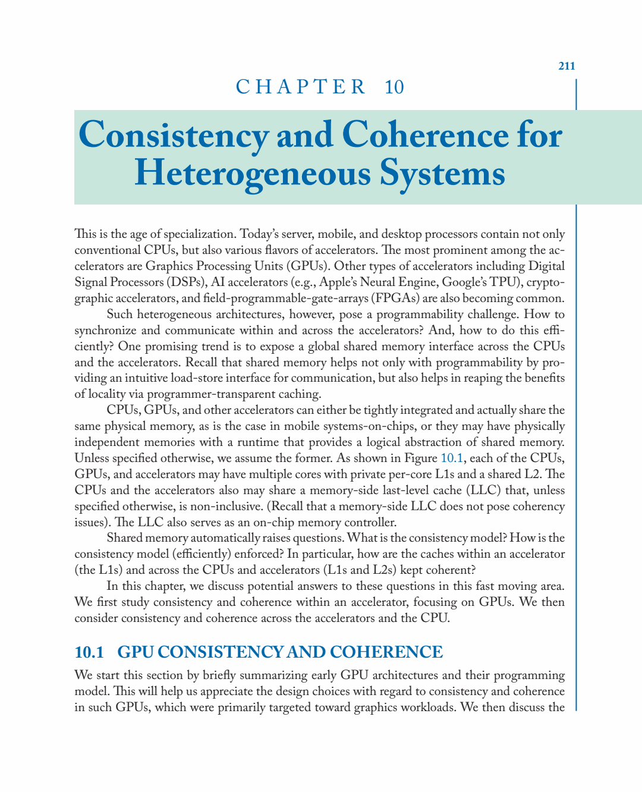
原书第 212 页PDF 234
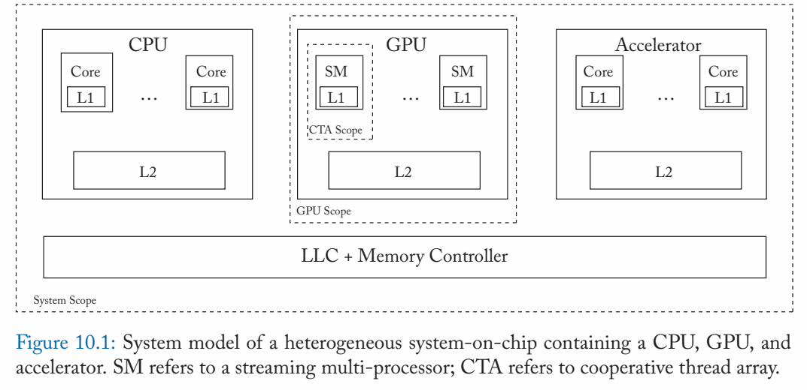
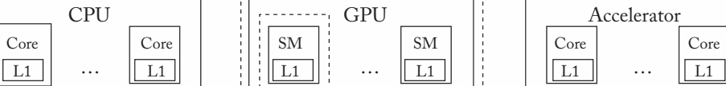
展开可搜索的英文文字
CPU GPU Accelerator Core Core SM SM Core Core … … … L1 L1 L1 L1 L1 L1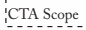
展开可搜索的英文文字
CTA Scope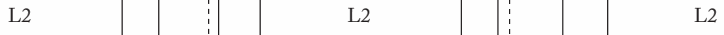
展开可搜索的英文文字
L2 L2 L2ENGLISHtrend of using GPU-like architectures to run general-purpose workloads in so-called General- Purpose Graphics Processing Units (GPGPUs) [5]. Specifically, we discuss the new demands that GPGPUs place on consistency and coherence. We then discuss in detail some of the recent proposals for fulfilling these demands.
中文采用类似GPU的体系结构运行通用工作负载的趋势，即所谓通用图形处理器（GPGPU）[5]。具体而言，我们将讨论GPGPU对内存一致性与缓存一致性提出的新要求，然后详细介绍近期为满足这些要求提出的部分方案。
ENGLISH10.1.1 EARLY GPUS: ARCHITECTURE AND PROGRAMMING MODEL Early GPUs were primarily tailored toward embarrassingly parallel graphics workloads. Roughly speaking, the workloads involve computing independently each of the pixels that constitute the display. Thus, the workloads are characterized by a very high degree of data-parallelism and low degrees of data sharing, synchronization, and communication.
中文10.1.1 早期GPU：体系结构与编程模型
早期GPU主要针对极易并行的图形工作负载进行定制。粗略地说，这些工作负载需要独立计算构成显示画面的每个像素。因此，它们具有极高的数据并行度，而数据共享、同步和通信程度都很低。
早期GPU主要针对极易并行的图形工作负载进行定制。粗略地说，这些工作负载需要独立计算构成显示画面的每个像素。因此，它们具有极高的数据并行度，而数据共享、同步和通信程度都很低。
ENGLISHGPU Architecture To exploit the abundance of parallelism, GPUs typically have tens of cores called Streaming Multiprocessors (SMs)1, as shown in Figure 10.1. Each SM is highly multithreaded, capable of running on the order of a thousand threads. The threads mapped to an SM share the L1 cache and a local scratchpad memory (not shown). All of the SMs share an L2 cache.
中文GPU体系结构
为利用大量并行性，GPU通常具有数十个称为流式多处理器（Streaming Multiprocessor，SM）¹的核心，如图10.1所示。每个SM支持高度多线程化，可运行约上千个线程。映射到同一SM的线程共享L1缓存和本地暂存存储器（图中未示出）。所有SM共享L2缓存。
为利用大量并行性，GPU通常具有数十个称为流式多处理器（Streaming Multiprocessor，SM）¹的核心，如图10.1所示。每个SM支持高度多线程化，可运行约上千个线程。映射到同一SM的线程共享L1缓存和本地暂存存储器（图中未示出）。所有SM共享L2缓存。
ENGLISHIn order to amortize the cost of fetching and decoding instructions for all of these threads, GPUs typically execute threads in groups called warps.2 All of the threads in a warp share the program counter (PC) and the stack, but can still execute independent thread-specific paths using mask-bits that specify which threads among the warps are active and which threads should not execute. This style of parallelism is known as “Single-Instruction-Multiple-Threads”
中文为分摊这些线程的指令获取与译码成本，GPU通常将线程组成称为线程束（warp）²的组来执行。线程束内所有线程共享程序计数器（PC）和栈，但仍可通过掩码位执行各线程自身的独立路径；掩码位指定线程束中哪些线程处于活动状态、哪些线程不应执行。这种并行方式称为“单指令多线程”
ENGLISH1SM in NVIDIA parlance. Also known as Compute Units (CUs) in AMD parlance. 2Warp in NVIDIA parlance. Also known as Wavefront in AMD parlance.
中文¹ SM是NVIDIA的术语；AMD中称为计算单元（Compute Unit，CU）。
² warp是NVIDIA的术语；AMD中称为波前（wavefront）。
² warp是NVIDIA的术语；AMD中称为波前（wavefront）。
查看 原书第 212 页 的完整原版面（PDF 234）
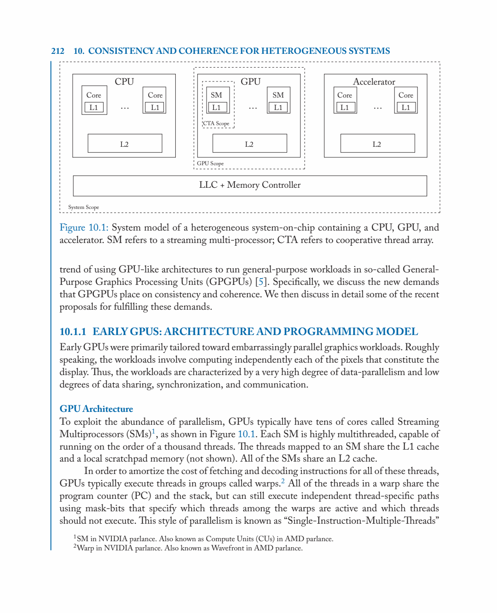
原书第 213 页PDF 235
ENGLISH(SIMT). Because all of the threads in a warp share the PC, traditionally the threads in a warp were scheduled together. Recently, however, GPUs are starting to allow for threads within a warp to have independent PCs and stacks, and consequently allow for the threads to be independently scheduled. For the rest of the discussion, we assume that threads can be independently scheduled.
中文（SIMT）。由于线程束内所有线程共享PC，传统上它们总是一起调度。不过，近期GPU开始允许线程束内各线程拥有独立的PC和栈，从而可以独立调度。后续讨论假设线程可以独立调度。
ENGLISHBecause graphics workloads do not share data or synchronize frequently— synchronization and communication typically happening infrequently at a coarser level of granularity—early GPUs chose not to implement hardware cache coherence for the L1 caches. (They did not enforce the SWMR invariant.) The absence of hardware cache coherence makes synchronization a trickier prospect for the programmer, as we see next.
中文图形工作负载很少共享数据或频繁同步；其同步和通信通常以较粗粒度低频发生。因此，早期GPU选择不为L1缓存实现硬件缓存一致性，即不强制维持单写者多读者（SWMR）不变式。缺乏硬件缓存一致性会使程序员更难处理同步，下面将看到这一点。
ENGLISHGPU Programming model Analogously to the CPU instruction set architecture (ISA), the GPUs also have virtual ISAs. NVIDIA’s virtual ISA, for example, is known as Parallel Thread Execution (PTX). In addition, there are higher-level language frameworks. Two such frameworks are especially popular: CUDA and OpenCL. The high-level programs in these frameworks are compiled down to virtual ISAs, which in turn are translated into native binaries at kernel installation time. A kernel refers to a unit of work offloaded by the CPU onto the GPU and typically consists of a large number of software threads.
中文GPU编程模型
类似于CPU的指令集体系结构（ISA），GPU也具有虚拟ISA。例如，NVIDIA的虚拟ISA称为并行线程执行（Parallel Thread Execution，PTX）。此外，还有更高层的语言框架，其中CUDA和OpenCL尤其流行。这些框架中的高级程序先编译为虚拟ISA，再在内核安装时转换为原生二进制代码。内核是CPU卸载给GPU的工作单元，通常由大量软件线程组成。
类似于CPU的指令集体系结构（ISA），GPU也具有虚拟ISA。例如，NVIDIA的虚拟ISA称为并行线程执行（Parallel Thread Execution，PTX）。此外，还有更高层的语言框架，其中CUDA和OpenCL尤其流行。这些框架中的高级程序先编译为虚拟ISA，再在内核安装时转换为原生二进制代码。内核是CPU卸载给GPU的工作单元，通常由大量软件线程组成。
ENGLISHGPU virtual ISAs as well as language frameworks choose to expose the hierarchical nature of GPU architectures to the programmer via a thread hierarchy known as scopes [15]. In contrast to CPU threads where all threads are “equal”, GPU threads from a kernel are grouped into clusters called Cooperative Thread Arrays (CTA).3 A CTA scope refers to the set of threads from the same CTA. Such threads are guaranteed to be mapped to the same SM and hence share the same L1. Thus, the CTA scope also implicitly refers to the memory hierarchy level (L14) that all of these threads share. A GPU scope refers to the set of threads from the same GPU. These threads could be from the same or different CTAs from that GPU. All of these threads share the L2. Thus, the GPU scope implicitly refers to the L2. Finally, System scope refers to the set of all threads from the whole system. These threads can be from the CPU, GPU, or other accelerators that constitute the system. All of these threads may share a cache (LLC). Thus, the System scope implicitly refers to the LLC, or unified shared memory if there is no shared LLC.
中文GPU虚拟ISA和语言框架都选择通过一种称为作用域（scope）[15]的线程层次，向程序员暴露GPU体系结构的层次性。与所有线程都“平等”的CPU线程不同，GPU内核中的线程被分组为协作线程阵列（Cooperative Thread Array，CTA）³。CTA作用域是指同一CTA中的线程集合。这些线程保证映射到同一SM，因此共享同一L1。于是，CTA作用域还隐含地对应所有这些线程共享的存储层次级别（L1⁴）。GPU作用域是同一GPU中的线程集合，线程可以来自该GPU中相同或不同的CTA。它们全部共享L2，因此GPU作用域隐含地对应L2。最后，系统作用域是整个系统的所有线程集合，既可以包括CPU线程，也可以包括GPU和其他加速器的线程。它们可能共享一个缓存（LLC）。因此，系统作用域隐含地对应LLC；如果没有共享LLC，则对应统一共享内存。
ENGLISHWhy expose the thread and memory hierarchy to the software? In the absence of hardware cache coherence, this allows for programmers and hardware to cooperatively achieve synchronization efficiently. Specifically, if the programmer ensures that two synchronizing threads are within the same CTA, the threads can synchronize and communicate efficiently via the L1 cache.
中文为什么要将线程层次和存储层次暴露给软件？在缺少硬件缓存一致性的条件下，这样可以让程序员与硬件协同，高效地实现同步。具体来说，如果程序员确保两个参与同步的线程属于同一CTA，它们就能通过L1缓存高效同步和通信。
ENGLISH3CTA in PTX parlance. Also known as Workgroups in OpenCL and as thread blocks in CUDA. 4and the local scratchpad memory, if present
中文³ CTA是PTX的术语；OpenCL中称为工作组（workgroup），CUDA中称为线程块（thread block）。
⁴ 如果存在本地暂存存储器，也包括它。
⁴ 如果存在本地暂存存储器，也包括它。
查看 原书第 213 页 的完整原版面（PDF 235）
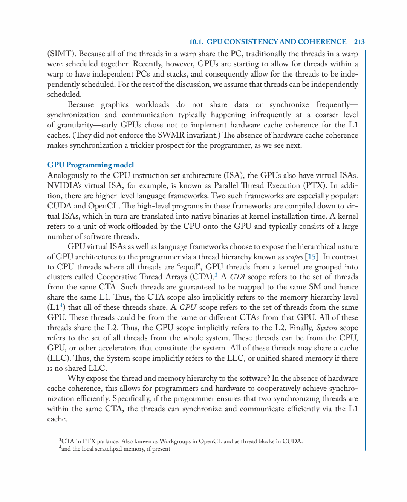
原书第 214 页PDF 236
ENGLISHHow can two threads belonging to different CTAs from the same GPU kernel synchronize? Somewhat surprisingly, early GPU consistency models did not explicitly allow this. In practice, though, programmers could achieve GPU-scoped synchronization via specially crafted loads and stores that bypass the L1 and synchronize at the shared L2. Needless to say, this was causing a great deal of confusion among the programmers [8]. In the next section, we explore GPU consistency in detail with examples.
中文那么，同一个GPU内核中属于不同CTA的两个线程，如何同步？有些出人意料的是，早期GPU内存一致性模型并未明确允许这种同步。不过，实践中程序员可以通过专门构造的加载和存储操作绕过L1，在共享L2处同步，实现GPU作用域的同步。不言而喻，这给程序员造成了相当大的困惑[8]。下一节将结合示例详细讨论GPU内存一致性。
ENGLISHGPU Consistency GPUs support relaxed memory consistency models. Like relaxed consistency CPUs, GPUs enforce only the memory orderings indicated by the programmer, e.g., via FENCE instructions.
中文GPU内存一致性
GPU支持宽松内存一致性模型。与采用宽松一致性的CPU一样，GPU仅强制执行程序员指定的访存顺序，例如由FENCE指令指定的顺序。
GPU支持宽松内存一致性模型。与采用宽松一致性的CPU一样，GPU仅强制执行程序员指定的访存顺序，例如由FENCE指令指定的顺序。
ENGLISHHowever, because of the absence of hardware cache coherence in GPUs, the semantics of a FENCE instruction is different. Recall that a FENCE instruction in a multicore CPU ensures that loads and stores before the FENCE are performed, with respect to all threads, before the loads and stores following the FENCE. A GPU FENCE provides similar semantics, but only with respect to other threads belonging to the same CTA. A corollary of this is that GPU stores lack atomicity. Recall that store atomicity (Section 5.5.2) mandates that a thread’s store is logically seen by all other threads at once. In GPUs, however, a store may become visible to a thread belonging to the same CTA before other threads.
中文不过，由于GPU缺少硬件缓存一致性，FENCE指令的语义有所不同。回顾一下，多核CPU上的FENCE确保：对于所有线程，FENCE之前的加载和存储先于其后的加载和存储执行。GPU上的FENCE提供类似语义，但仅针对属于同一CTA的其他线程。由此可得，GPU存储操作不具备原子性。存储原子性（5.5.2节）要求：从逻辑上看，一个线程的存储必须被所有其他线程同时观察到。然而在GPU上，同一CTA内的线程可能先于其他线程看到该存储。
ENGLISHConsider the message-passing example shown in Table 10.1 where the programmer intends for load Ld2 to read NEW and not the old value of 0. How does one ensure this?
中文考虑表10.1中的消息传递示例：程序员希望加载Ld2读到NEW，而不是旧值0。如何保证这一点？
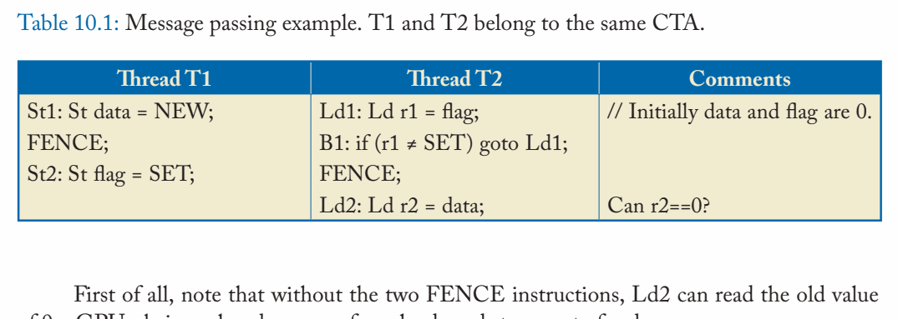
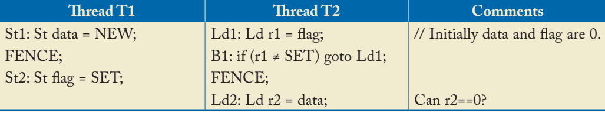
展开可搜索的英文文字
Th read T1 Th read T2 Comments St1: St data = NEW; Ld1: Ld r1 = fl ag; // Initially data and fl ag are 0. FENCE; B1: if (r1 ≠ SET) goto Ld1; St2: St fl ag = SET; FENCE; Ld2: Ld r2 = data; Can r2==0?ENGLISHFirst of all, note that without the two FENCE instructions, Ld2 can read the old value of 0—GPUs, being relaxed, may perform loads and stores out of order.
中文首先注意，如果没有这两条FENCE指令，Ld2可能读到旧值0，因为GPU采用宽松模型，允许乱序执行加载和存储。
ENGLISHNow, let us suppose that the two threads T1 and T2 belong to the same CTA, and are hence mapped to the same SM. At the microarchitectural level, a GPU FENCE works similarly to a FENCE in XC, as we discussed in Chapter 5. The reorder unit ensures that the Load/Store FENCE and FENCE Load/Store orderings are enforced. Because T1 and T2 ! ! share an L1, honoring the above rules is sufficient to ensure that the two stores from T1 are made visible to T2 in program order, ensuring that load L2 reads NEW.

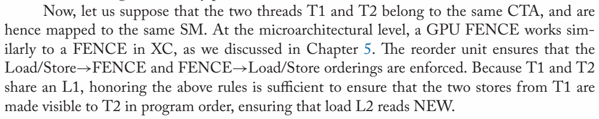
数学符号与上下标以此原版面为准中文现在假设T1和T2属于同一CTA，因此映射到同一SM。从微体系结构角度看，GPU的FENCE与第5章讨论的XC中的FENCE类似。重排序单元保证加载／存储→FENCE和FENCE→加载／存储这两类顺序。由于T1和T2共享L1，遵守上述规则就足以确保T1的两次存储按程序顺序对T2可见，从而保证加载Ld2读到NEW。
查看 原书第 214 页 的完整原版面（PDF 236）
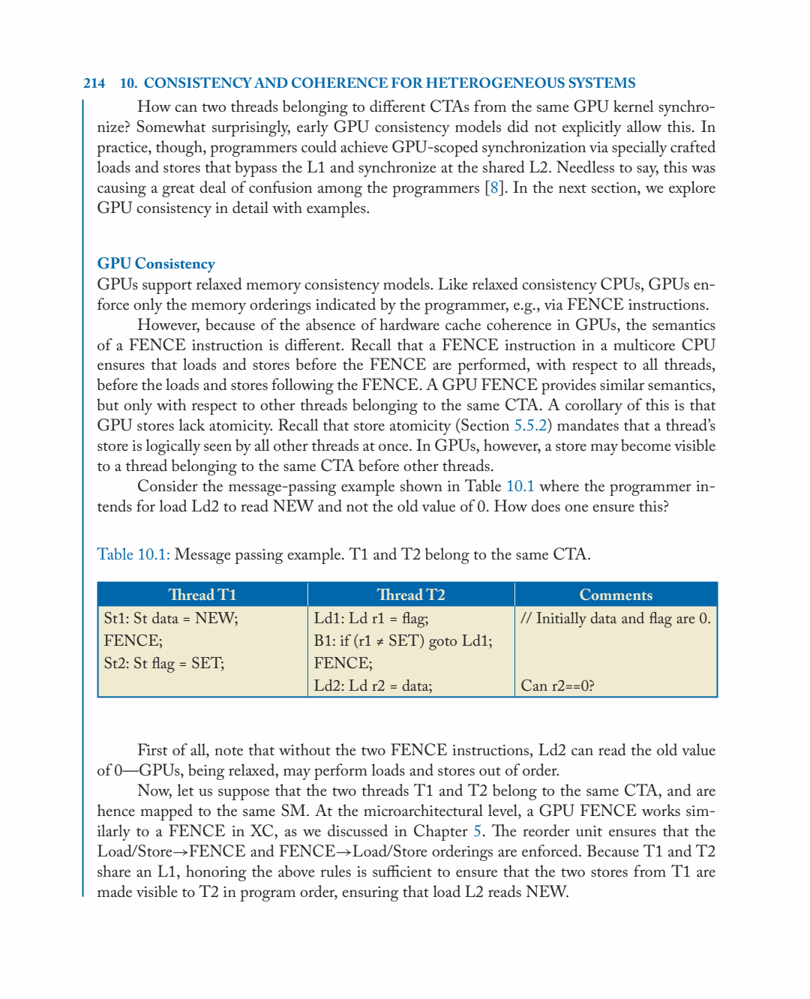
原书第 215 页PDF 237
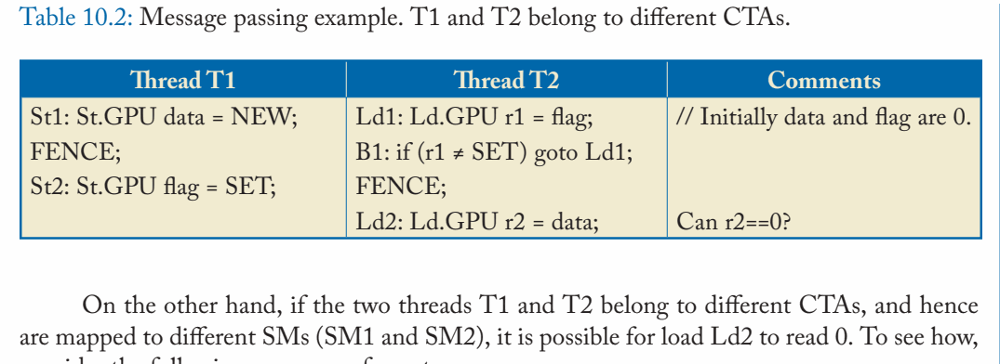
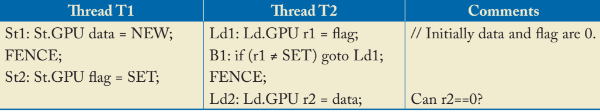
展开可搜索的英文文字
Th read T1 Th read T2 Comments St1: St.GPU data = NEW; Ld1: Ld.GPU r1 = fl ag; // Initially data and fl ag are 0. FENCE; B1: if (r1 ≠ SET) goto Ld1; St2: St.GPU fl ag = SET; FENCE; Ld2: Ld.GPU r2 = data; Can r2==0?ENGLISHOn the other hand, if the two threads T1 and T2 belong to different CTAs, and hence are mapped to different SMs (SM1 and SM2), it is possible for load Ld2 to read 0. To see how, consider the following sequence of events.
中文另一方面，如果T1和T2属于不同CTA，并映射到不同SM（SM1和SM2），加载Ld2就可能读到0。考虑以下事件序列即可理解其原因。
ENGLISH• Initially, both data and flag are cached in both L1s.
中文• 初始时，两个L1都缓存了data和flag。
ENGLISH• St1 and St2 perform in program order, writing NEW and SET, respectively, in SM1’s L1 cache.
中文• St1和St2按程序顺序执行，分别向SM1的L1缓存写入NEW和SET。
ENGLISH• The cache line holding flag is evicted from SM1’s L1, and flag=SET is written to the L2.
中文• 包含flag的缓存行从SM1的L1逐出，flag=SET被写入L2。
ENGLISH• The cache line holding flag in SM2’s L1 is evicted.
中文• 包含flag的缓存行从SM2的L1逐出。
ENGLISH• The load Ld1 performs and misses in SM2’s L1, so the line from the L2 is fetched and reads SET.
中文• Ld1执行，在SM2的L1中未命中，于是从L2取回缓存行，并读到SET。
ENGLISH• The load Ld2 performs, hits in SM2’s L1, and reads 0.
中文• Ld2执行，在SM2的L1中命中，并读到0。
ENGLISHThus, although the FENCE ensures that the two stores are written to SM1’s L1 in the correct order, they may become visible to T2 in a different order in the absence of hardware cache coherence. That is why early GPU programming manuals explicitly disallow this type of inter-CTA synchronization between threads of the same kernel.
中文因此，虽然FENCE确保两次存储以正确顺序写入SM1的L1，但在没有硬件缓存一致性的情况下，它们对T2可见的顺序可能不同。这就是早期GPU编程手册明确禁止同一内核线程之间进行这类跨CTA同步的原因。
ENGLISHIs inter-CTA synchronization then impossible to achieve? In practice, a workaround is possible, leveraging special load and store instructions that directly target specific levels of the memory hierarchy. As we can see in Table 10.2, the two stores in T1 explicitly write to the GPU scope (i.e., to the L2) bypassing the L1. Likewise, the two loads from T2 bypass the L1 and read directly from the L2. Thus, the two threads of GPU scope, T1 and T2, are explicitly made to synchronize at the L2 by using loads and stores that bypass the L1.
中文那么，跨CTA同步是否无法实现？实践中可以借助直接访问特定存储层次级别的专用加载和存储指令绕过这一限制。如表10.2所示，T1的两次存储显式写入GPU作用域，即绕过L1写入L2；T2的两次加载同样绕过L1，直接读取L2。这样，通过使用绕过L1的加载和存储，显式地让GPU作用域中的T1和T2在L2处同步。
ENGLISHHowever, there are problems with the above workaround—the primary issue being performance inefficiency owing to loads and stores bypassing the L1. In this simple example, the two variables in question must be communicated across SMs, so bypassing is a necessary evil. However, bypassing may be problematic with more variables, only some of which are communicated across SMs. In such a situation, the programmer is confronted with the onerous task
中文不过，这一变通方案存在问题，主要是加载和存储绕过L1造成的性能损失。在这个简单例子中，两个变量都必须跨SM通信，因此绕过L1是不得已的选择。但如果涉及更多变量，其中只有一部分需要跨SM通信，绕过L1就可能带来问题。此时，程序员必须承担繁重任务：
查看 原书第 215 页 的完整原版面（PDF 237）
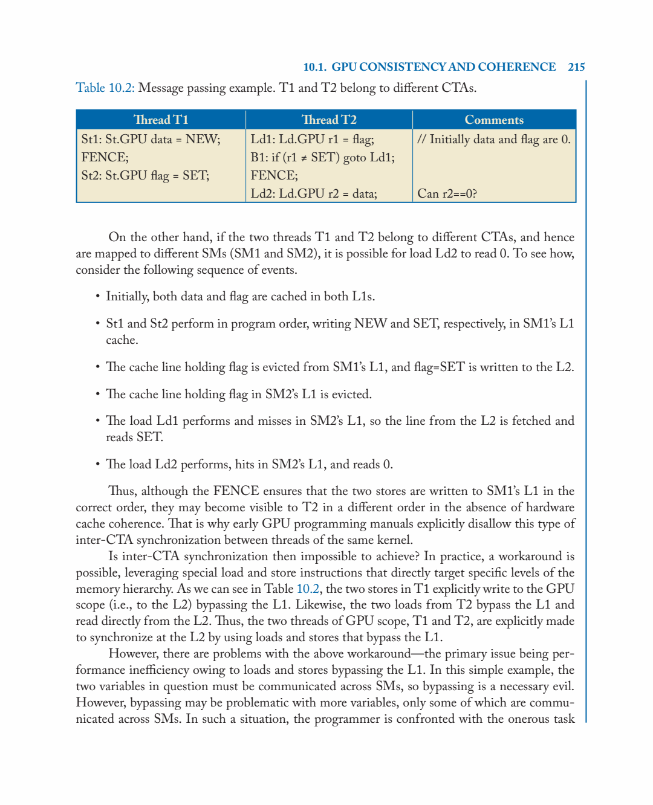
原书第 216 页PDF 238
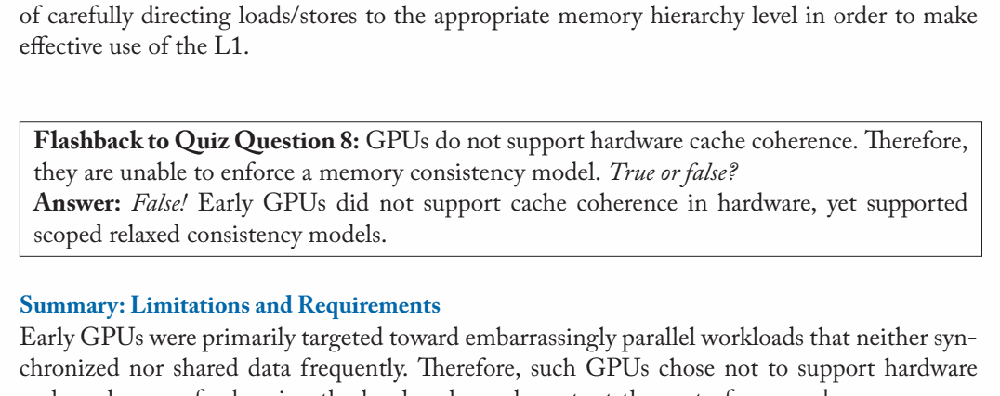
ENGLISHof carefully directing loads/stores to the appropriate memory hierarchy level in order to make effective use of the L1.
中文仔细地将加载／存储定向到适当的存储层次级别，才能有效利用L1。
ENGLISHFlashback to Quiz Question 8: GPUs do not support hardware cache coherence. Therefore, they are unable to enforce a memory consistency model. True or false? Answer: False! Early GPUs did not support cache coherence in hardware, yet supported scoped relaxed consistency models.
中文回顾测验第8题：GPU不支持硬件缓存一致性，因此无法实现内存一致性模型。对还是错？
答案：错！早期GPU虽不支持硬件缓存一致性，但仍支持带作用域的宽松内存一致性模型。
答案：错！早期GPU虽不支持硬件缓存一致性，但仍支持带作用域的宽松内存一致性模型。
ENGLISHSummary: Limitations and Requirements Early GPUs were primarily targeted toward embarrassingly parallel workloads that neither synchronized nor shared data frequently. Therefore, such GPUs chose not to support hardware cache coherence for keeping the local caches coherent, at the cost of a scoped memory consistency model that permitted only intra-CTA synchronization. More flexible inter-CTA synchronization was either too inefficient or placed a huge burden on programmers.
中文小结：局限与需求
早期GPU主要面向极易并行、既不频繁同步也不频繁共享数据的工作负载。因此，这些GPU选择不通过硬件缓存一致性维护本地缓存的一致，其代价是采用带作用域的内存一致性模型，只允许CTA内部同步。更灵活的跨CTA同步要么效率太低，要么给程序员带来巨大负担。
早期GPU主要面向极易并行、既不频繁同步也不频繁共享数据的工作负载。因此，这些GPU选择不通过硬件缓存一致性维护本地缓存的一致，其代价是采用带作用域的内存一致性模型，只允许CTA内部同步。更灵活的跨CTA同步要么效率太低，要么给程序员带来巨大负担。
ENGLISHProgrammers are starting to use GPUs for general purpose workloads. Such workloads tend to involve relatively frequent fine-grained synchronization and more general sharing patterns. Thus, it is desirable for a GPGPU to have:
中文程序员正开始将GPU用于通用工作负载。这类负载往往具有相对频繁的细粒度同步，以及更一般化的共享模式。因此，理想的GPGPU应具备：
ENGLISH• a rigorous and intuitive memory consistency model that permits synchronization across all threads; and
中文• 严谨且直观的内存一致性模型，允许所有线程之间进行同步；以及
ENGLISH• a coherence protocol that enforces the consistency model while allowing for efficient data sharing and synchronization, while at the same time keeping the simplicity of the conventional GPU architecture, as GPUs will still cater to graphic workloads predominantly.
中文• 能够实现该内存一致性模型、支持高效数据共享和同步的缓存一致性协议，同时保留传统GPU体系结构的简洁性，因为GPU仍将主要服务于图形工作负载。
ENGLISH10.1.2 BIG PICTURE: GPGPU CONSISTENCY AND COHERENCE We already outlined the desired properties for GPGPU consistency and coherence. One straightforward approach to meeting these demands is to use a multicore CPU-like approach to coherence and consistency, i.e., use one of the consistency-agnostic coherence protocols (that we covered at length in Chapters 6–9) to ideally enforce a strong consistency model such as sequential consistency (SC). Despite ticking almost all boxes—the consistency model is certainly intuitive (without the notion of scopes) and the coherence protocol allows for the efficient sharing of data—the approach is ill-suited for a GPU. There are two major reasons for this [30].
中文10.1.2 总体视角：GPGPU的内存一致性与缓存一致性
前面已经概述了GPGPU在这两方面应有的性质。一种直接满足这些需求的方法，是采用类似多核CPU的方案：使用第6—9章详细介绍的某种与内存一致性模型无关的缓存一致性协议，最好能够实现顺序一致性（SC）等强内存一致性模型。虽然这一方案几乎满足所有要求——模型确实直观，无须作用域概念，协议也支持高效数据共享——但它并不适合GPU，主要有两个原因[30]。
前面已经概述了GPGPU在这两方面应有的性质。一种直接满足这些需求的方法，是采用类似多核CPU的方案：使用第6—9章详细介绍的某种与内存一致性模型无关的缓存一致性协议，最好能够实现顺序一致性（SC）等强内存一致性模型。虽然这一方案几乎满足所有要求——模型确实直观，无须作用域概念，协议也支持高效数据共享——但它并不适合GPU，主要有两个原因[30]。
ENGLISHFirst, a CPU-like coherence protocol that invalidates sharers upon a write would incur a high traffic overhead in the GPU context. This is because the aggregate capacity of the local caches (L1s) in GPUs is typically comparable to, or even greater than, the size of the L2. The NVIDIA Volta GPU, for example, has an aggregate capacity of about 10 MB of L1 cache and only 6 MB of L2 cache. A standalone inclusive directory would not only incur a large area overhead owing to the duplicate tags, but also significant complexity because the directory would
中文首先，类似CPU的缓存一致性协议在写入时使共享副本失效，在GPU环境中会产生很高的流量开销。原因在于，GPU的本地缓存（L1）总容量通常与L2相当，甚至更大。例如，NVIDIA Volta GPU的L1总容量约为10 MB，而L2只有6 MB。独立的包含式目录不仅因重复标记带来较大面积开销，而且由于目录需要
查看 原书第 216 页 的完整原版面（PDF 238）
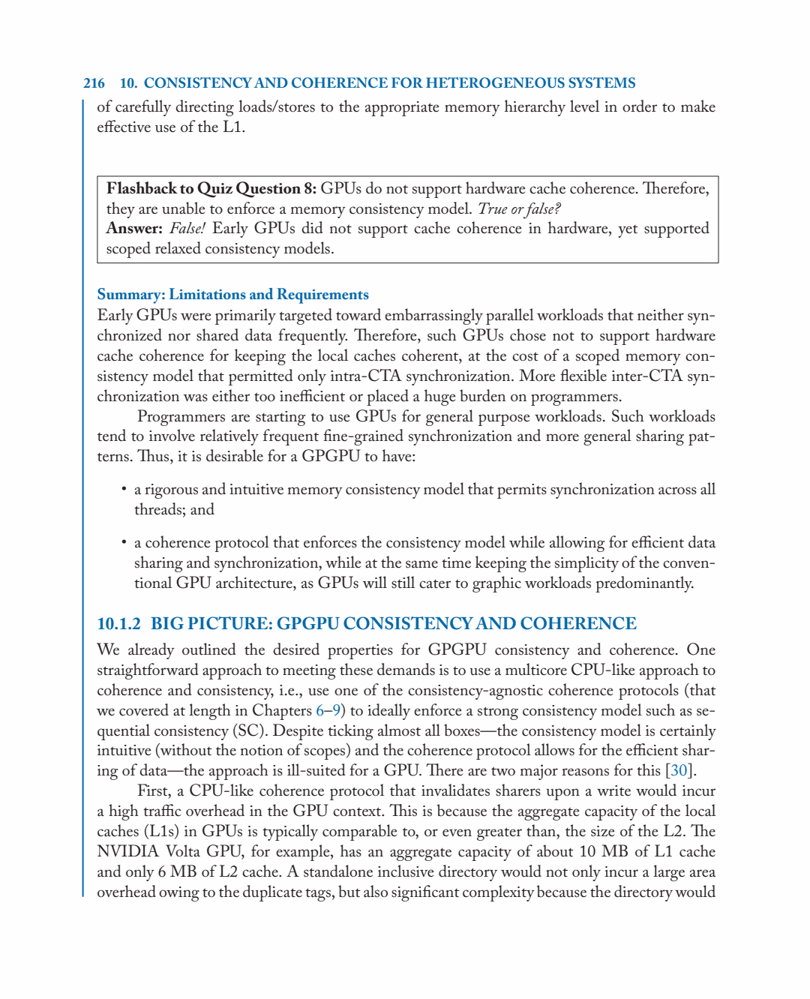
原书第 217 页PDF 239
ENGLISHneed to be highly associative. On the other hand, an embedded inclusive directory would result in a significant amount of recall traffic upon L2 evictions, given the size of the aggregate L1s.
中文很高的相联度，实现也会相当复杂。另一方面，考虑到L1总容量，嵌入式包含目录会在L2逐出时产生大量召回流量。
ENGLISHSecond, because GPUs maintain thousands of active hardware threads, there is a need to track a correspondingly high number of coherence transactions, which would cost significant hardware overhead.
中文其次，由于GPU维持着数千个活动硬件线程，需要跟踪相应数量的大量一致性事务，从而带来显著的硬件开销。
ENGLISHWithout writer-initiated invalidations, how can a store be propagated to other non-local L1 caches? (I.e., how can the store be made visible to threads belonging to other CTAs?) Without writer-initiated invalidations, how can a consistency model—let alone a strong consistency model—be enforced?
中文如果没有写入者发起的无效化，如何将存储传播到其他非本地L1缓存？也就是说，如何让其他CTA的线程观察到该存储？没有这种无效化，如何实现内存一致性模型，更不用说强内存一致性模型？
ENGLISHIn Sections 10.1.3 and 10.1.4, we discuss two proposals that employ self-invalidation [18], whereby a processor invalidates lines in its local cache to ensure that stores from other threads become visible.
中文10.1.3节和10.1.4节将讨论两种采用自无效化[18]的方案：处理器主动使自身本地缓存中的缓存行失效，以确保其他线程的存储变得可见。
ENGLISHWhat consistency model can the self-invalidation protocols enforce efficiently? We argue that such protocols are amenable to efficiently enforcing relaxed consistency models directly, rather than enforcing consistency-agnostic invariants such as the SWMR invariant.
中文自无效化协议能够高效实现什么内存一致性模型？我们认为，这类协议适合直接高效实现宽松内存一致性模型，而不是强制维持SWMR等与内存一致性模型无关的不变式。
ENGLISHWhether or not the consistency model should include scopes is under debate [15, 16, 23]. Whereas scopes adds complexity for programmers, they arguably simplify coherence implementations. Because scopes cannot be ruled out, we outline a scoped consistency model that does not limit synchronization to within a subset of scopes in Section 10.1.4. It is worth noting that the consistency model we introduce is similar in spirit to the ones used in today’s industrial GPUs (which all use scoped models that do not limit synchronization to within a subset of scopes).
中文内存一致性模型是否应包含作用域，仍有争论[15, 16, 23]。作用域增加了程序员的复杂性，但也可以认为它简化了缓存一致性的实现。鉴于不能排除使用作用域，我们将在10.1.4节概述一种带作用域的内存一致性模型，它并不将同步限制在部分作用域内。该模型在思想上与当前工业界GPU使用的模型相近；这些GPU都使用带作用域、且不把同步限制在部分作用域内的模型。
ENGLISH10.1.3 TEMPORAL COHERENCE In this section, we discuss a self-invalidation based approach for enforcing coherence called temporal coherence [30]. The key idea is that each reader brings in a cache block for a finite period of time called the lease, at the end of which time the block is self-invalidated. We discuss two variants of temporal coherence: (1) a consistency-agnostic variant that enforces SWMR, in which a writer stalls until all of the leases for the block expire; and (2) a more efficient consistencydirected variant that directly enforces a relaxed consistency model, in which FENCEs, rather than writers, stall. For the following discussion, we assume that the shared cache (L2) is inclusive: a block not present in the shared L2 implies that it is not present in any of the local L1s. We also assume that the L1s use a write-through/no write-allocate policy: writes are directly written to the L2 (write-through) and a write to a block that is not present in the L1 does not allocate a block in the L1 (no write-allocate).
中文10.1.3 时间缓存一致性
本节讨论一种基于自无效化的缓存一致性方法，称为时间缓存一致性（temporal coherence）[30]。其核心思想是：每个读取者取入缓存块时，仅在称为租约（lease）的有限时间内持有它，租约结束后块自行失效。我们讨论两种变体：（1）与内存一致性模型无关、维持SWMR的变体，写入者必须停顿，直到该块所有租约到期；（2）由内存一致性模型指导、效率更高的变体，直接实现宽松内存一致性模型，由FENCE停顿，而不是让写入者停顿。以下讨论假设共享L2具有包含性：若共享L2中不存在某个块，则任何本地L1中也不存在该块。同时假设L1采用写直达／不写分配策略：写入直接传到L2（写直达）；写入L1中不存在的块时，不在L1分配该块（不写分配）。
本节讨论一种基于自无效化的缓存一致性方法，称为时间缓存一致性（temporal coherence）[30]。其核心思想是：每个读取者取入缓存块时，仅在称为租约（lease）的有限时间内持有它，租约结束后块自行失效。我们讨论两种变体：（1）与内存一致性模型无关、维持SWMR的变体，写入者必须停顿，直到该块所有租约到期；（2）由内存一致性模型指导、效率更高的变体，直接实现宽松内存一致性模型，由FENCE停顿，而不是让写入者停顿。以下讨论假设共享L2具有包含性：若共享L2中不存在某个块，则任何本地L1中也不存在该块。同时假设L1采用写直达／不写分配策略：写入直接传到L2（写直达）；写入L1中不存在的块时，不在L1分配该块（不写分配）。
ENGLISHConsistency-agnostic Temporal Coherence Instead of a writer invalidating all sharers in non-local caches, as is common with CPU coherence, consider a protocol in which the writer is made to wait until all of the sharers have evicted
中文与内存一致性模型无关的时间缓存一致性
CPU缓存一致性通常由写入者使所有非本地缓存中的共享副本失效。现在考虑另一种协议，让写入者等待，直到所有共享者都已经逐出
CPU缓存一致性通常由写入者使所有非本地缓存中的共享副本失效。现在考虑另一种协议，让写入者等待，直到所有共享者都已经逐出
查看 原书第 217 页 的完整原版面（PDF 239）
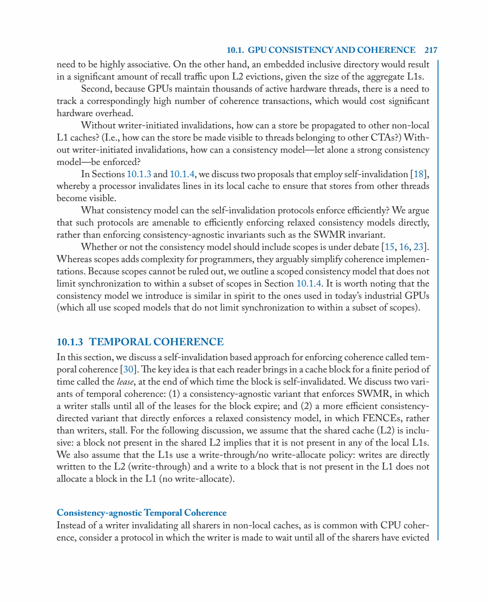
原书第 218 页PDF 240
ENGLISHthe block. By making the write wait until there are no sharers, the protocol ensures that there are no concurrent readers at the instant when the write succeeds—thereby enforcing SWMR.
中文该块。通过让写入等待至不存在任何共享者，协议确保写入成功的一瞬间没有并发读取者，从而维持SWMR。
ENGLISHHow can the writer know how long to wait? That is, how can the writer ascertain that there are no more sharers for the block? Temporal coherence achieves this by leveraging a global notion of time. Specifically, it requires that each of the L1s and the L2 have access to a register that keeps track of global time.
中文写入者如何知道应等待多久？也就是说，如何确定该块已没有共享者？时间缓存一致性借助全局时间概念实现这一点。具体而言，每个L1和L2都必须能够访问记录全局时间的寄存器。
ENGLISHOn an L1 miss, the reader predicts how long it expects to hold the block in the L1, and informs the L2 of this time duration known as the lease. Every L1 cache block is tagged with a timestamp (TS) that holds the lease for that block. A read for an L1 block with current time greater than its lease is treated as a miss.
中文发生L1未命中时，读取者预测自己希望在L1中持有该块多久，并将这一称为租约的时间信息告知L2。每个L1缓存块都附带一个时间戳（TS），保存该块的租约到期时间。如果读取L1块时，当前时间已经超过租约，就将其视为未命中。
ENGLISHFurthermore, each block in the L2 is tagged with a timestamp. When a reader consults the L2 on an L1 cache miss, it informs the L2 of its desired lease; the L2 updates the timestamp for the block subject to the invariant that the timestamp holds the latest lease for that block across all L1s.
中文此外，L2中的每个块也带有时间戳。读取者因L1未命中访问L2时，会告知希望获得的租约；L2据此更新该块时间戳，同时维持如下不变式：时间戳记录该块在所有L1中最晚的租约到期时间。
ENGLISHEvery write—even if the block is present in the L1 cache—is written through to the L2; the write request accesses the block’s timestamp held in the L2, and if the timestamp corresponds to a time in the future, the write stalls until this time. This stalling ensures that there are no sharers of the blocks when the write performs in the L2, thereby ensuring SWMR.
中文每次写入都写穿到L2，即使该块已在L1中也是如此。写请求读取L2中的该块时间戳；如果时间戳对应未来时刻，写入就停顿至该时刻。这一停顿确保写入在L2执行时，该块已没有共享者，从而保证SWMR。
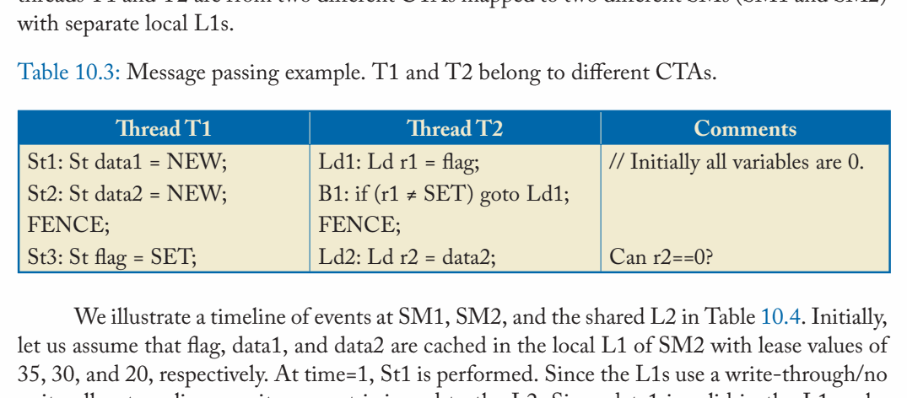
ENGLISHExample. In order to understand how temporal coherence works, let us consider the message passing example in Table 10.3, ignoring the FENCE instructions for now. Let us assume that threads T1 and T2 are from two different CTAs mapped to two different SMs (SM1 and SM2) with separate local L1s.
中文示例。为理解时间缓存一致性的工作方式，考虑表10.3中的消息传递示例，暂时忽略FENCE指令。假设T1和T2属于不同CTA，分别映射到两个不同的SM（SM1和SM2），各有独立的本地L1。
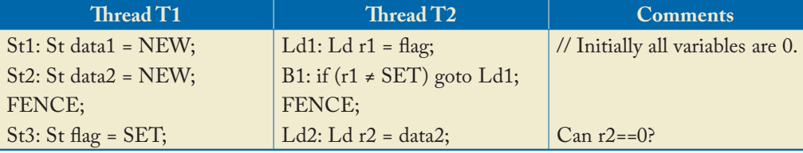
展开可搜索的英文文字
Th read T1 Th read T2 Comments St1: St data1 = NEW; Ld1: Ld r1 = fl ag; // Initially all variables are 0. St2: St data2 = NEW; B1: if (r1 ≠ SET) goto Ld1; FENCE; FENCE; St3: St fl ag = SET; Ld2: Ld r2 = data2; Can r2 ==0 ?ENGLISHWe illustrate a timeline of events at SM1, SM2, and the shared L2 in Table 10.4. Initially, let us assume that flag, data1, and data2 are cached in the local L1 of SM2 with lease values of 35, 30, and 20, respectively. At time=1, St1 is performed. Since the L1s use a write-through/no write-allocate policy, a write request is issued to the L2. Since data1 is valid in the L1 cache of SM2 until time=30, the write stalls until this time. At time=31, the write performs at the L2. St2 then issues a write request to the L2 at time=37 that reaches the L2 at time=42. By this time the lease for data2 (20) would have already expired, and so the write performs at the L2 without any stalling. Similarly, St3 issues a write request at time=48, and flag is written to
中文表10.4展示了SM1、SM2和共享L2上的事件时间线。初始时，假设SM2的本地L1缓存了flag、data1和data2，租约值分别为35、30和20。在time=1时，St1执行。由于L1采用写直达／不写分配策略，写请求被发往L2。由于SM2的L1中的data1在time=30之前一直有效，写入会停顿至该时刻。time=31时，写入在L2执行。随后，St2在time=37向L2发出写请求，并在time=42到达L2。此时data2的租约（20）已经到期，因此写入无须停顿即可在L2执行。类似地，St3在time=48发出写请求，并于time=53将flag写入
查看 原书第 218 页 的完整原版面（PDF 240）
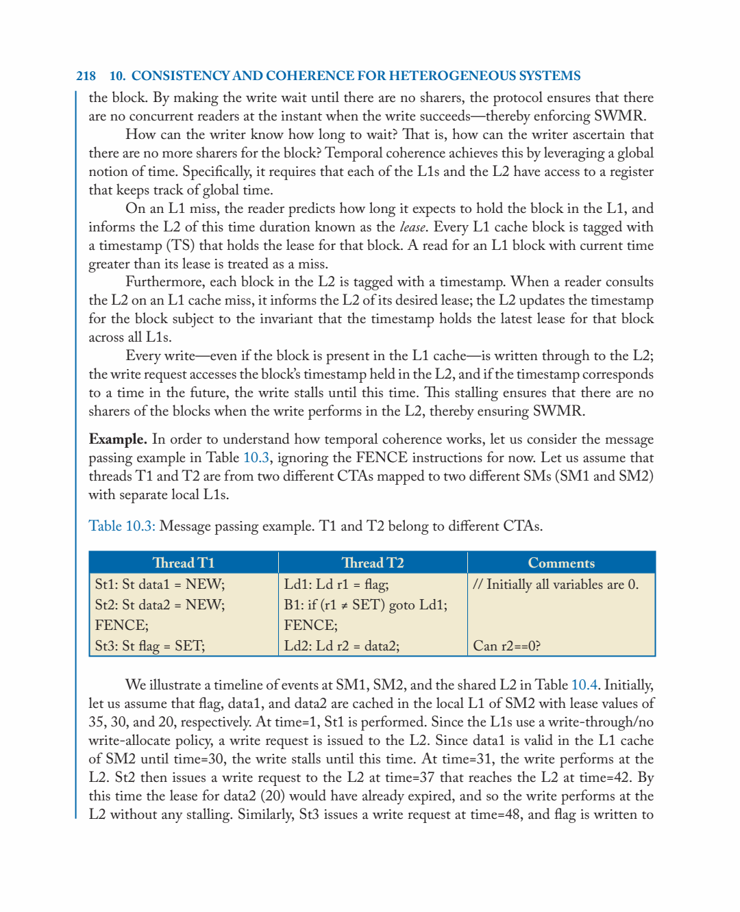
原书第 219 页PDF 241
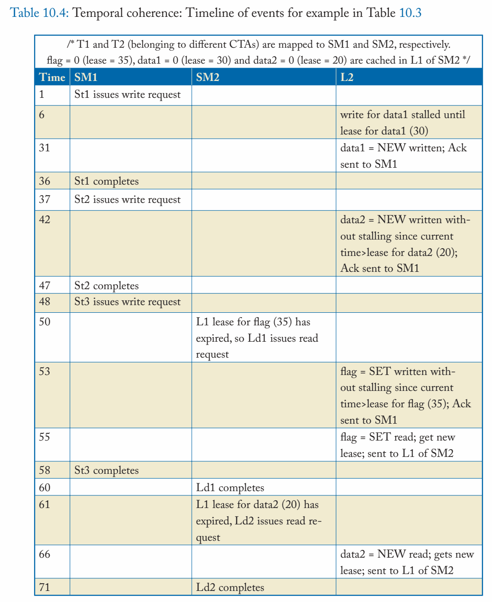
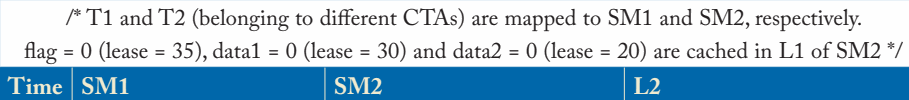
展开可搜索的英文文字
/* T1 and T2 (belonging to diff erent CTAs) are mapped to SM1 and SM2, respectively. fl ag = 0 (lease = 35), data1 = 0 (lease = 30) and data2 = 0 (lease = 20) are cached in L1 of SM2 */ Time SM1 SM2 L2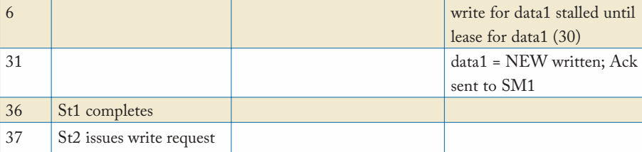
展开可搜索的英文文字
6 write for data1 stalled until lease for data1 (30) 31 data1 = NEW written; Ack sent to SM1 36 St1 completes 37 St2 issues write request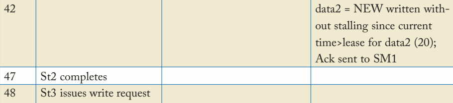
展开可搜索的英文文字
42 data2 = NEW written without stalling since current time>lease for data2 (20); Ack sent to SM1 47 St2 completes 48 St3 issues write request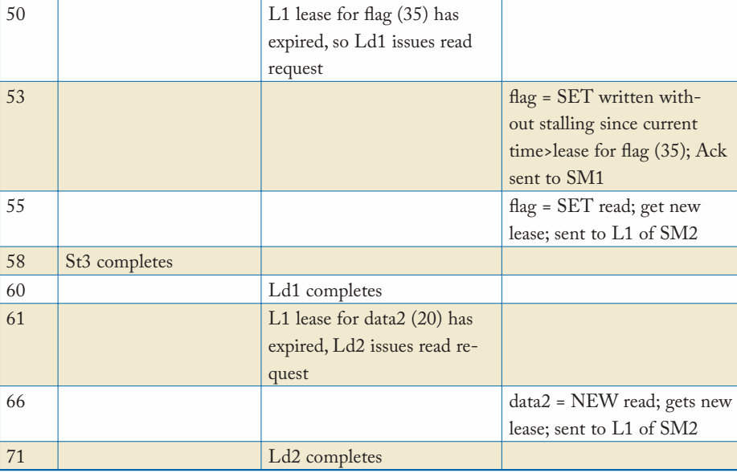
展开可搜索的英文文字
50 L1 lease for fl ag (35) has expired, so Ld1 issues read request 53 fl ag = SET written without stalling since current time>lease for fl ag (35); Ack sent to SM1 55 fl ag = SET read; get new lease; sent to L1 of SM2 58 St3 completes 60 Ld1 completes 61 L1 lease for data2 (20) has expired, Ld2 issues read request 66 data2 = NEW read; gets new lease; sent to L1 of SM2 71 Ld2 completes查看 原书第 219 页 的完整原版面（PDF 241）
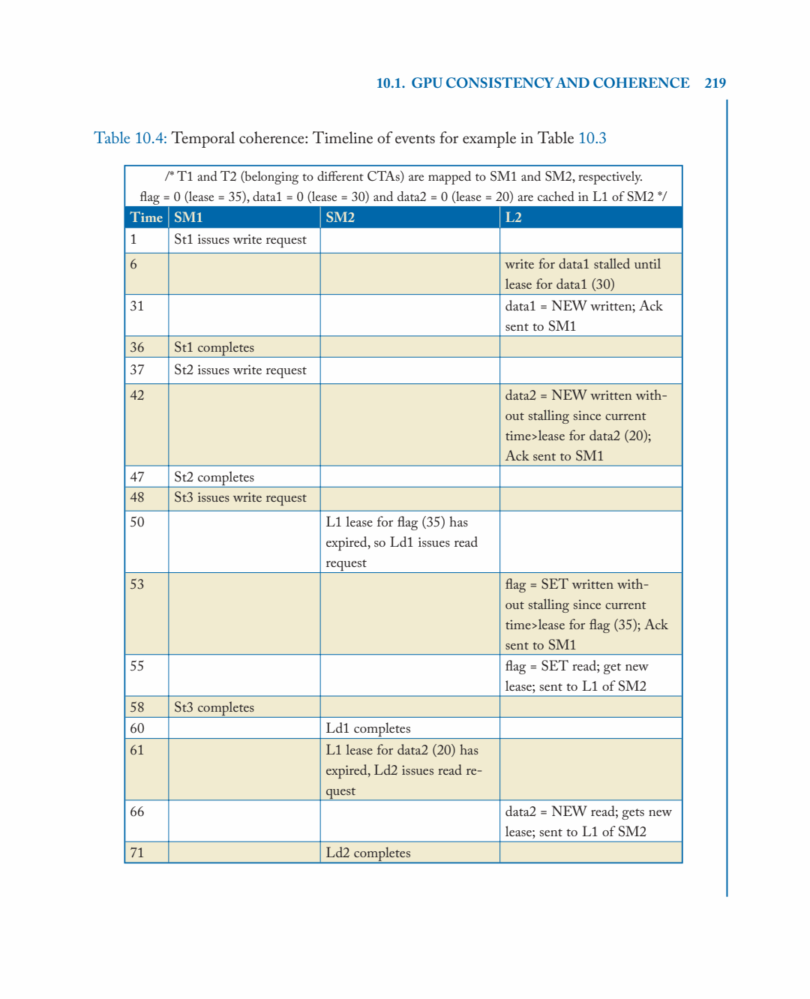
原书第 220 页PDF 242
ENGLISHthe L2 at time=53 without any stalling, since the lease for flag would have expired by this time. Meanwhile, at time=50, Ld1 checks its L1 and finds that the lease for flag has expired, so a read request is issued to the L2 and completes at time=60. Likewise, Ld2 also issues a read request to the L2 at time=61, reads the expected value of NEW from the L2 and completes at time=71. Because this variant of temporal coherence enforces SWMR, as long as GPU threads issue memory operations in program order, SC5 is enforced.
中文L2，无须停顿，因为flag的租约此时已经到期。与此同时，在time=50，Ld1检查自己的L1，发现flag租约已到期，因此向L2发出读请求，并于time=60完成。类似地，Ld2在time=61向L2发出读请求，从L2读到期望的NEW，并于time=71完成。由于这一时间缓存一致性变体维持SWMR，只要GPU线程按程序顺序发出访存操作，就能保证SC。⁵
ENGLISHProtocol Specification. We present the detailed protocol specification for the L1 and L2 controllers in Tables 10.5 and 10.6, respectively. The L1 has two stable states: (I)nvalid and (V )alid. The L1 communicates with the L2 using the GetV(t), Write, and WriteV(t) requests. GetV(t), which carries a timestamp as a parameter, asks for the specified block to be brought into the L1 in valid state for the requested lease period, at the end of which time the block is self-invalidated. The Write request asks for the specified value to be written through to the L2 without bringing the block into the L1. The WriteV(t) request is used for writing to a block that is already valid in L1, and carries a timestamp holding its current lease as a parameter. For presentational reasons, we present only a high-level specification of the protocol (and for all other protocols in this chapter). Specifically, we show only stable states and the transitions between the stable states.
中文协议规约。表10.5和表10.6分别给出了L1、L2控制器的详细协议规约。L1有两个稳定状态：I（Invalid，无效）和V（Valid，有效）。L1通过GetV(t)、Write和WriteV(t)请求与L2通信。GetV(t)携带时间戳参数，请求将指定块以有效状态取入L1，并在所请求的租约期内持有；到期后该块自无效化。Write请求要求将指定值写穿到L2，而不将块取入L1。WriteV(t)用于写入已经在L1中有效的块，其参数时间戳保存当前租约。为便于呈现，这里仅给出协议的高层规约，本章其他协议也采用相同方式；具体来说，只展示稳定状态以及稳定状态之间的转换。
ENGLISHA load in state I causes a GetV(t) request to be sent to the L2; upon the receipt of data from the L2, the state transitions to V. A store in state I causes a Write request to be sent to the L2. Upon the receipt of an ack from the L2—indicating that the L2 has written the data—the store completes. Since the L1 uses a no-write-allocate policy, data is not brought to the L1 and the state of the block remains in state I.
中文在I状态执行加载时，向L2发送GetV(t)；收到L2数据后，转为V。I状态下的存储会向L2发送Write。收到L2确认后，表示L2已经写入数据，存储操作完成。由于L1采用不写分配策略，数据不会被取入L1，块仍处于I状态。
ENGLISHRecall that a block becomes invalid if the global time advances past the lease for that block—this is represented logically by the V to I transition upon lease expiry.6 Upon a store to a block in state V, a WriteV(t) request is sent to the L2. The purpose of WriteV(t) is to exploit the fact that if the block is held privately in the L1 of the writer, there is no need for the write to stall at the L2. Instead, the write can simply update the L2 as well as the L1, and continue to cache the block in the L1 until its lease runs out. The reason why the WriteV(t) request carries a timestamp is to determine whether or not the block is held privately in the L1 of the writer, as we will see next.
中文回顾一下，全局时间超过某个块的租约时，该块变为无效；逻辑上以租约到期时V→I的转换表示。⁶ 向V状态块执行存储时，发送WriteV(t)请求到L2。WriteV(t)利用了如下事实：如果块由写入者的L1私有持有，写入就无须在L2停顿；只需更新L2和L1，并继续在L1缓存该块，直到租约到期。WriteV(t)携带时间戳，是为了判断块是否确实由写入者的L1私有持有，下文将进一步说明。
ENGLISHWe now describe the L2 controller. The L2 has four stable states: (I)nvalid, indicating that the block is neither present in the L2 nor in any of the L1s; (P)rivate, indicating that the block is present in exactly one of the L1s; (S)hared, indicating that the block may be present in one or more L1s; and (Exp)ired, indicating that the block is present in the L2, but not valid in any of the L1s. Upon receiving a GetV(t) request in state I, the L2 fetches the block from
中文下面介绍L2控制器。L2有四个稳定状态：I（Invalid，无效），表示L2和所有L1都没有该块；P（Private，私有），表示恰好一个L1持有该块；S（Shared，共享），表示一个或多个L1可能持有该块；Exp（Expired，过期），表示L2中有该块，但任何L1中都没有其有效副本。I状态下收到GetV(t)时，L2从
ENGLISH5The original paper [30] considered a warp as equivalent to a thread, whereas we consider a more modern GPU setting where threads can be individually scheduled. Consistency in our setting is therefore subtly different from their setting. 6It is worth noting that in the actual implementation it is not necessary for hardware to proactively detect that a block has expired and transition it to I state—the fact that a block has expired may be discovered lazily on a subsequent transaction to the block.
中文⁵ 原论文[30]将线程束视为线程，而这里考虑更现代的GPU场景，线程可以单独调度。因此，我们场景下的一致性与原论文存在细微差别。
⁶ 实际实现中，硬件无须主动检测块已到期并将其转为I；可以在后续针对该块的事务中，按需发现其已经到期。
⁶ 实际实现中，硬件无须主动检测块已到期并将其转为I；可以在后续针对该块的事务中，按需发现其已经到期。
查看 原书第 220 页 的完整原版面（PDF 242）
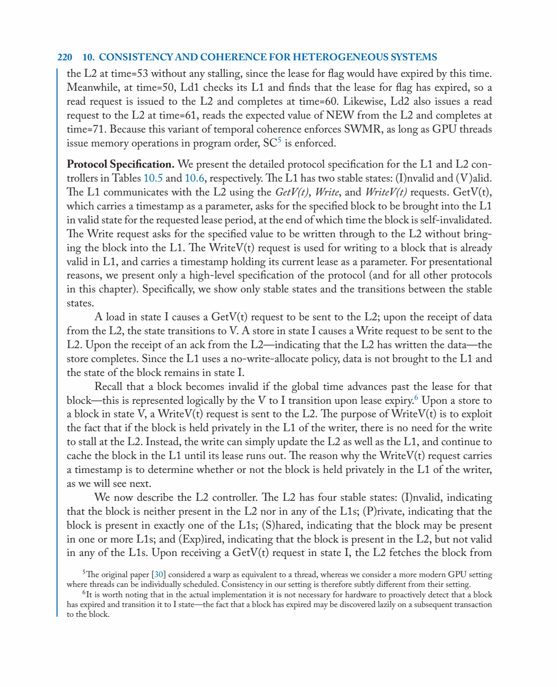
原书第 221 页PDF 243
ENGLISHmemory, updates the block’s timestamp in accordance with the requested lease, and transitions to P. Upon receiving a Write in state I, it fetches the block from memory, updates the value in the L2, sends back an ack, and transitions to Exp, as it is not valid in any of the L1s.
中文存储器取回块，按照请求租约更新块时间戳，并转为P。I状态下收到Write时，从存储器取回块，更新L2中的值，返回确认，并转为Exp，因为此时任何L1中都没有该块的有效副本。
ENGLISHUpon receiving a GetV(t) request in state P, the L2 responds with the data, extends the timestamp if the requested lease is greater than the current timestamp, and transitions to S. For a WriteV(t) request received in state P, there are two cases. In the straightforward case, the only SM holding the block privately writes to it; in this case, the L2 can simply update the
中文P状态下收到GetV(t)时，L2返回数据；若请求租约大于当前时间戳，则延长时间戳，并转为S。P状态下收到WriteV(t)时有两种情形。简单情形是：唯一私有持有该块的SM写入它；此时L2只需更新
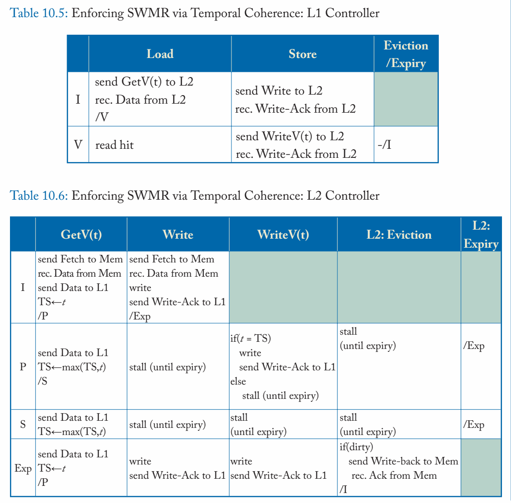
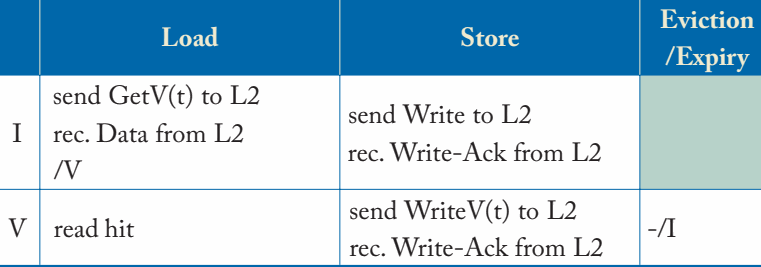
展开可搜索的英文文字
Eviction Load Store /Expiry send GetV(t) to L2 send Write to L2 I rec. Data from L2 rec. Write-Ack from L2 /V send WriteV(t) to L2 V read hit -/I rec. Write-Ack from L2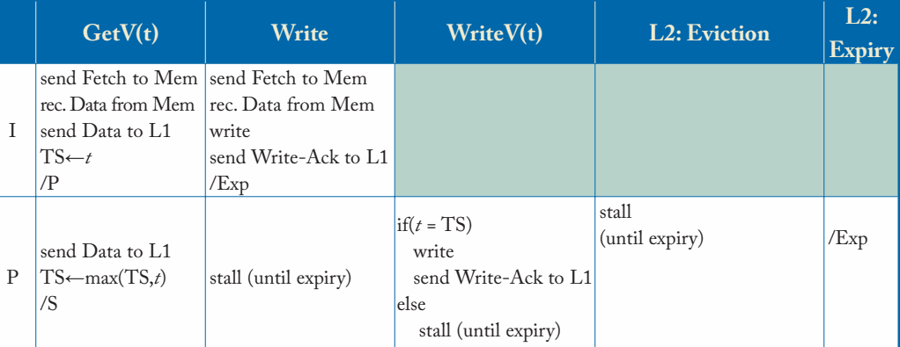
展开可搜索的英文文字
L2: GetV(t) Write WriteV(t) L2: Eviction Expiry send Fetch to Mem send Fetch to Mem rec. Data from Mem rec. Data from Mem I send Data to L1 write TS←t send Write-Ack to L1 /P /Exp stall if(t = TS) (until expiry) /Exp send Data to L1 write P TS←max(TS,t) stall (until expiry) send Write-Ack to L1 /S else stall (until expiry)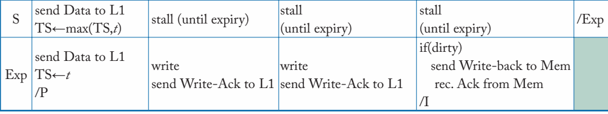
展开可搜索的英文文字
send Data to L1 stall stall S stall (until expiry) /Exp TS←max(TS,t) (until expiry) (until expiry) if(dirty) send Data to L1 write write send Write-back to Mem Exp TS←t send Write-Ack to L1 send Write-Ack to L1 rec. Ack from Mem /P /I查看 原书第 221 页 的完整原版面（PDF 243）
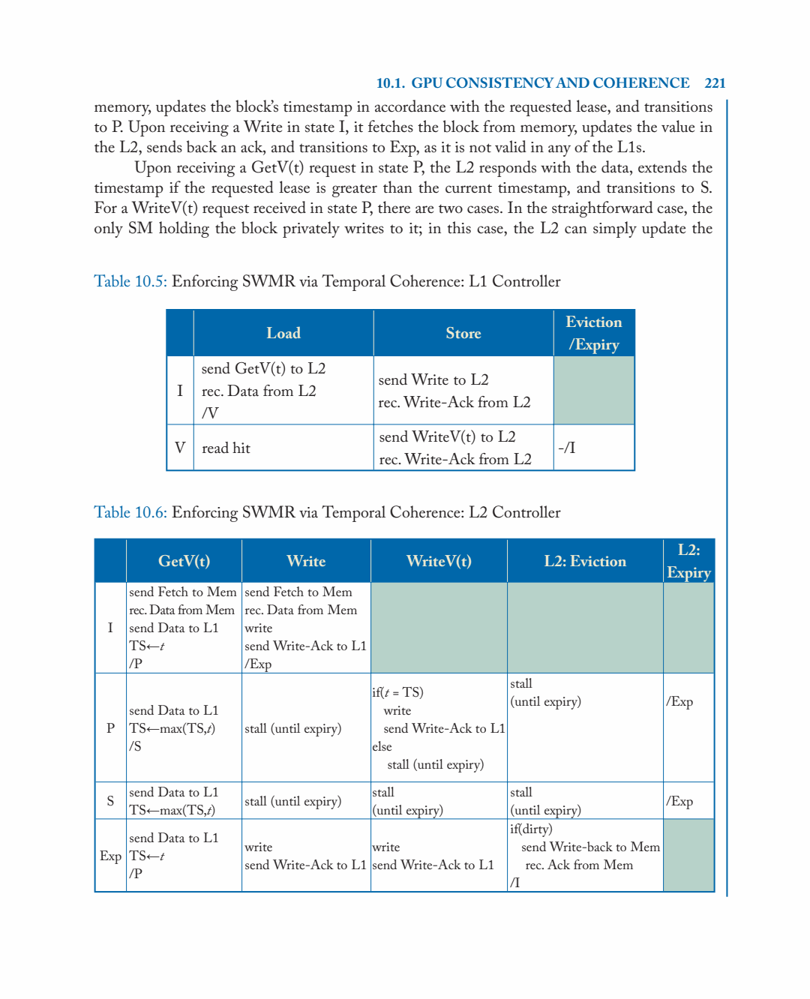
原书第 222 页PDF 244
ENGLISHblock without any stalling and reply with an ack. But there is a tricky corner case in which the WriteV(t) message from a private block is delayed such that the block is now held privately, but in a different SM! In order to disambiguate these two cases, every WriteV(t) message carries a timestamp with the lease for that block, and a match with the timestamp held in the L2 indicates the former straightforward case. A mismatch indicates the latter, in which case the WriteV(t) request stalls until the block expires, at which time the L2 is updated and an ack is sent back to the L1. A WriteV(t) or a Write request received in state S, on the other hand, will have to always wait until the block’s lease at the L2 expires. Finally, an L2 block is allowed to be evicted only in Exp state because writes must know how long to stall in order to enforce SWMR.
中文该块，无须停顿，并回复确认。但存在一个棘手的边界情况：从私有块发出的WriteV(t)消息被延迟，等它到达时，块虽然仍被私有持有，却已经属于另一个SM！为了区分这两种情况，每条WriteV(t)都携带该块租约时间戳；若它与L2中的时间戳匹配，就属于前一种简单情形；若不匹配，则属于后一种，此时WriteV(t)必须停顿至块到期，之后再更新L2并向L1返回确认。而在S状态收到WriteV(t)或Write时，始终必须等到L2中的块租约到期。最后，L2块只允许在Exp状态逐出，因为要维持SWMR，写入操作必须知道需要停顿多久。
ENGLISHIn summary, we saw how temporal coherence enforces SWMR using leased reads and stalling writes. In combination with a processor that presents memory operations in program order, temporal coherence can be used to enforce sequential consistency (SC).
中文综上，时间缓存一致性通过带租约的读取和停顿的写入维持SWMR。若处理器按程序顺序提交访存操作，这一机制就可用于实现顺序一致性（SC）。
ENGLISHConsistency-directed Temporal Coherence Temporal coherence as described previously enforces SWMR but at a significant cost, with every write to an unexpired shared block needing to stall at the L2 controller. Since the L2 is shared across all threads, stalling at the L2 can indirectly affect all of the threads, thereby reducing overall GPU throughput.
中文由内存一致性模型指导的时间缓存一致性
前述时间缓存一致性虽然能维持SWMR，但代价不低：对每个租约尚未到期的共享块执行写入，都需要在L2控制器处停顿。由于所有线程共享L2，L2中的停顿可能间接影响全部线程，降低GPU整体吞吐量。
前述时间缓存一致性虽然能维持SWMR，但代价不低：对每个租约尚未到期的共享块执行写入，都需要在L2控制器处停顿。由于所有线程共享L2，L2中的停顿可能间接影响全部线程，降低GPU整体吞吐量。
ENGLISHRecall that in Section 2.3 we discussed two classes of coherence interfaces: consistencyagnostic and consistency-directed. A consistency-agnostic coherence interface enforces SWMR by propagating writes to other threads synchronously before the write returns. Given the cost of enforcing SWMR in the GPU setting, can we explore consistency-directed coherence? That is, instead of making writes visible to other threads synchronously, can we make them visible asynchronously without violating consistency? Specifically, a relaxed consistency model such as Chapter 5’s XC7 mandates only the memory orderings indicated by the programmer via FENCE instructions. Such a model allows for writes to propagate to other threads asynchronously.
中文回顾2.3节介绍的两类缓存一致性接口：与内存一致性模型无关的接口，以及由内存一致性模型指导的接口。前者在写操作返回前，将写入同步传播给其他线程，从而维持SWMR。鉴于GPU上维持SWMR的成本较高，能否探索后一类接口？也就是说，不再使写入同步地对其他线程可见，而是异步传播，同时仍不违反内存一致性。具体而言，第5章XC⁷这样的宽松模型，只要求遵守程序员通过FENCE指定的访存顺序，因而允许写入异步传播给其他线程。
ENGLISHConsidering the message-passing example shown in Table 10.3, XC merely requires that St1 and St2 become visible to T2 before St3 becomes visible. It does not mandate that by the time St1 performs it must have propagated to T2. In other words, XC does not require SWMR. Consequently, XC permits a variant of temporal coherence in which only FENCEs, rather than writes, require stalling. When a write request reaches the L2 and the block is shared, the L2 simply replies back to the thread initiating the write with the timestamp associated with the block. We refer to this time as the Global Write Completion Time (GWCT), as this indicates the time until which the thread must stall upon hitting a FENCE in order to ensure that the write has become globally visible to all threads.
中文对于表10.3中的消息传递示例，XC只要求St1和St2先于St3对T2可见，并不要求St1执行时就已经传播到T2。换言之，XC不要求SWMR。因此，XC允许一种时间缓存一致性变体：仅FENCE需要停顿，写入本身不需要。写请求到达L2且块处于共享状态时，L2直接向发起写入的线程返回该块的时间戳。我们将其称为全局写完成时间（Global Write Completion Time，GWCT），因为线程遇到FENCE时，必须停顿至这一时刻，才能保证该写入已对所有线程全局可见。
ENGLISHFor each thread mapped to an SM, the SM keeps track of the maximum of GWCTs returned for the writes in the per-thread stall-time register. Upon hitting a FENCE, stalling the
中文对于映射到某个SM的每个线程，SM在该线程的stall-time寄存器中，记录其各次写入返回的GWCT的最大值。遇到FENCE时，让线程
ENGLISH7For now, let us assume there are no scopes in the memory model.
中文⁷ 暂时假设内存模型不包含作用域。
查看 原书第 222 页 的完整原版面（PDF 244）
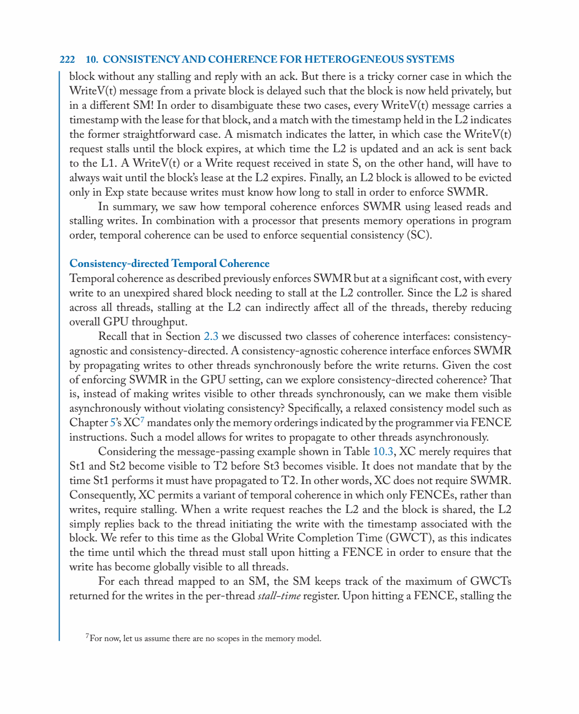
原书第 223 页PDF 245
ENGLISHthread until this time ensures that all of the writes before the FENCE have become globally visible.
中文停顿至这一时刻，就能确保FENCE之前的全部写入已经全局可见。
ENGLISHExample. We illustrate a timeline of events in Table 10.7 for the same message-passing example (Table 10.3), but now taking into account the effect of FENCE instructions, because we are seeking to enforce a relaxed XC-like model.
中文示例。表10.7展示了同一个消息传递示例（表10.3）的事件时间线；但这次要考虑FENCE指令的作用，因为我们希望实现类似XC的宽松模型。
ENGLISHAt time=1, a write request due to St1 is issued to the L2. At time=6, the write is performed at the L2 without any stalling although its lease (30) would not have expired then; L2 replies with a GWCT of 30 which is remembered at SM1 in its per-thread stall-time register. In a similar vein, a write request due to St2 is issued at time=12. At time=17, the write is performed at the L2 and the L2 replies back with a GWCT of 20. Upon receiving the GWCT, SM1 does not update its stall-time because the current value (30) is higher. The FENCE instruction is executed at time=23 and blocks thread T1 until its stall-time of 30. At time=31, a write-request due to St3 is issued to the L2 and the write is performed at the L2 at time=36. Because the lease for flag (35) would have expired, the L2 does not respond with a GWCT, and St3 completes at time=41. Meanwhile, at time=40, Ld1 attempts to read flag from the L1 but its lease would have expired at time=35. Therefore, a read request for flag is issued to the L2, reads SET from the L2 at time=45, and completes at time=50. In a similar vein, a read request due to Ld2 is issued at time=51, reads from L2 at time=56 and completes at time=57, returning the expected value of NEW.
中文time=1时，St1产生的写请求发往L2。time=6时，虽然租约（30）尚未到期，写入仍直接在L2执行，无须停顿；L2返回GWCT=30，SM1将其记入该线程的stall-time寄存器。类似地，St2的写请求于time=12发出，并在time=17于L2执行，L2返回GWCT=20。SM1收到后不更新stall-time，因为当前值30更大。time=23执行FENCE，将T1阻塞至stall-time所指的30。time=31，St3发出写请求；time=36在L2执行写入。此时flag的租约（35）已经到期，L2不再返回GWCT，St3在time=41完成。与此同时，time=40时Ld1尝试从L1读取flag，但其租约已经在time=35到期。因此，向L2发出flag读请求，在time=45从L2读到SET，并于time=50完成。类似地，Ld2在time=51发出读请求，time=56从L2读取，并于time=57完成，返回期望值NEW。
ENGLISHProtocol Specification. The consistency-directed temporal coherence protocol specifications are mostly similar to the consistency-agnostic variant—we highlight the differences in bold in
中文协议规约。由内存一致性模型指导的时间缓存一致性协议，大部分规约与前一种变体相同；不同处在
中文表10.8（L1控制器）和表10.9（L2控制器）中以粗体标出。
ENGLISHThe main difference with the L1 controller (Table 10.8) is due to the fact that Write-Acks from the L2 now carry GWCTs. Accordingly, upon receiving a Write-Ack, the L1 controller extends the stall-time if the incoming GWCT is greater than the currently held stall-time for that thread. (Recall that upon hitting a FENCE, the thread is stalled until the time held in the stall-time register.)
中文L1控制器（表10.8）的主要差异在于，来自L2的Write-Ack现在携带GWCT。因此，收到Write-Ack时，如果GWCT大于该线程当前保存的stall-time，L1控制器就延长stall-time。（回顾一下，遇到FENCE时，线程会停顿至stall-time寄存器记录的时刻。）
ENGLISHThe main difference with the L2 controller (Table 10.9) is that Write requests do not induce a stall; instead, the write is performed and a GWCT is returned along with the Write- Ack. In a similar vein, a WriteV(t) request in state S also does not stall.
中文L2控制器（表10.9）的主要差异在于，Write请求不再引起停顿，而是直接执行写入，并随Write-Ack返回GWCT。类似地，S状态下的WriteV(t)也不再停顿。
ENGLISHTemporal Coherence: Summary and Limitations We saw how temporal coherence can either be used to enforce SWMR or directly enforce a relaxed consistency model such as XC.8 The key benefit with the latter approach is that it eliminates expensive stalling at the L2; instead writes stall at the SM upon hitting a FENCE. More optimizations are possible that further reduce stalling [30]. However, there are some critical limitations with temporal coherence.
中文时间缓存一致性：小结与局限
我们已经看到，时间缓存一致性既可以用于维持SWMR，也可以直接实现XC等宽松内存一致性模型。⁸ 后一种方法的主要好处是消除了L2处昂贵的停顿，改为在线程于SM上遇到FENCE时等待写入全局完成。还有其他优化可以进一步减少停顿[30]。不过，时间缓存一致性仍有若干关键局限。
我们已经看到，时间缓存一致性既可以用于维持SWMR，也可以直接实现XC等宽松内存一致性模型。⁸ 后一种方法的主要好处是消除了L2处昂贵的停顿，改为在线程于SM上遇到FENCE时等待写入全局完成。还有其他优化可以进一步减少停顿[30]。不过，时间缓存一致性仍有若干关键局限。
ENGLISH8Temporal coherence [30] enforces a variant of XC in which writes are not atomic.
中文⁸ 时间缓存一致性[30]实现的是XC的一种写入不具有原子性的变体。
查看 原书第 223 页 的完整原版面（PDF 245）
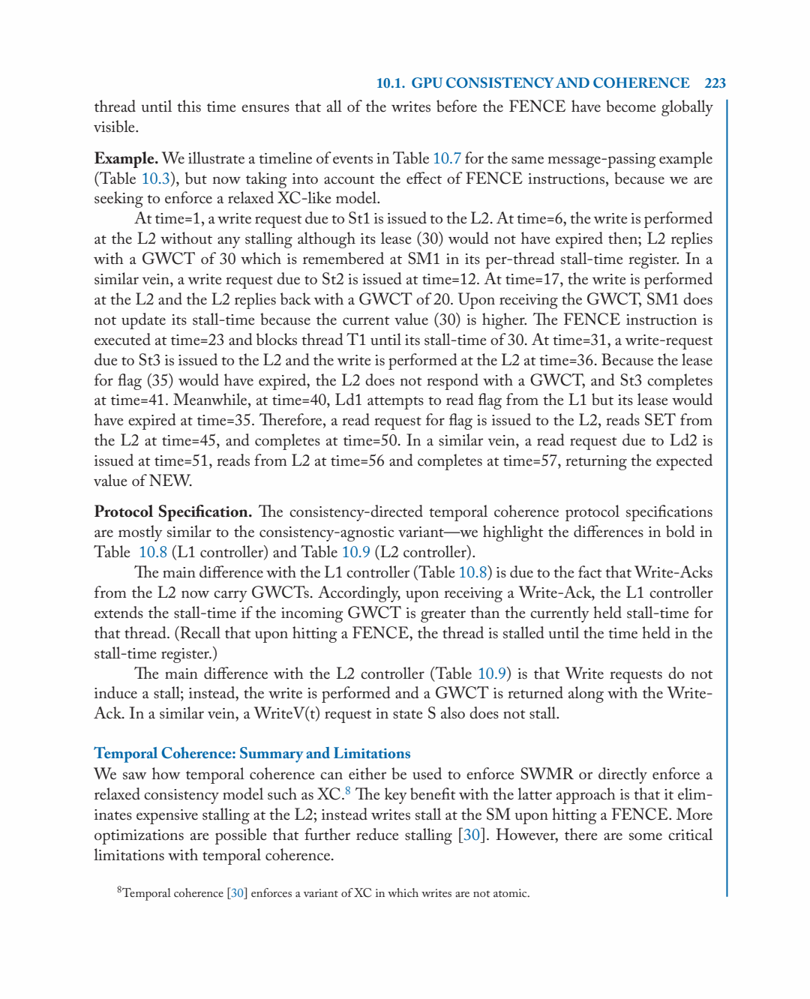
原书第 224 页PDF 246
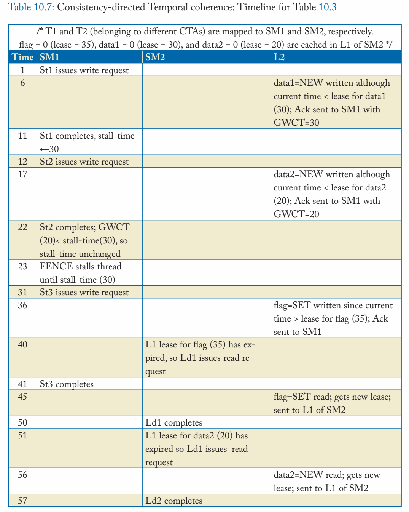
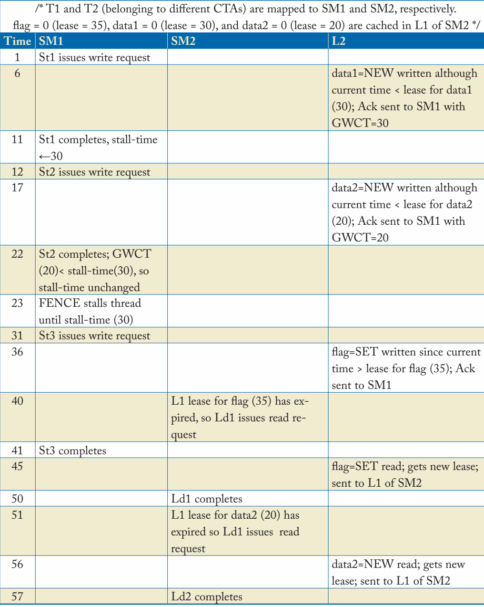
展开可搜索的英文文字
/* T1 and T2 (belonging to diff erent CTAs) are mapped to SM1 and SM2, respectively. fl ag = 0 (lease = 35), data1 = 0 (lease = 30), and data2 = 0 (lease = 20) are cached in L1 of SM2 */ Time SM1 SM2 L2 1 St1 issues write request 6 data1=NEW written although current time < lease for data1 (30); Ack sent to SM1 with GWCT=30 11 St1 completes, stall-time ←30 12 St2 issues write request 17 data2=NEW written although current time < lease for data2 (20); Ack sent to SM1 with GWCT=20 22 St2 completes; GWCT (20)< stall-time(30), so stall-time unchanged 23 FENCE stalls thread until stall-time (30) 31 St3 issues write request 36 fl ag=SET written since current time > lease for fl ag (35); Ack sent to SM1 40 L1 lease for fl ag (35) has expired, so Ld1 issues read request 41 St3 completes 45 fl ag=SET read; gets new lease; sent to L1 of SM2 50 Ld1 completes 51 L1 lease for data2 (20) has expired so Ld1 issues read request 56 data2=NEW read; gets new lease; sent to L1 of SM2 57 Ld2 completes查看 原书第 224 页 的完整原版面（PDF 246）
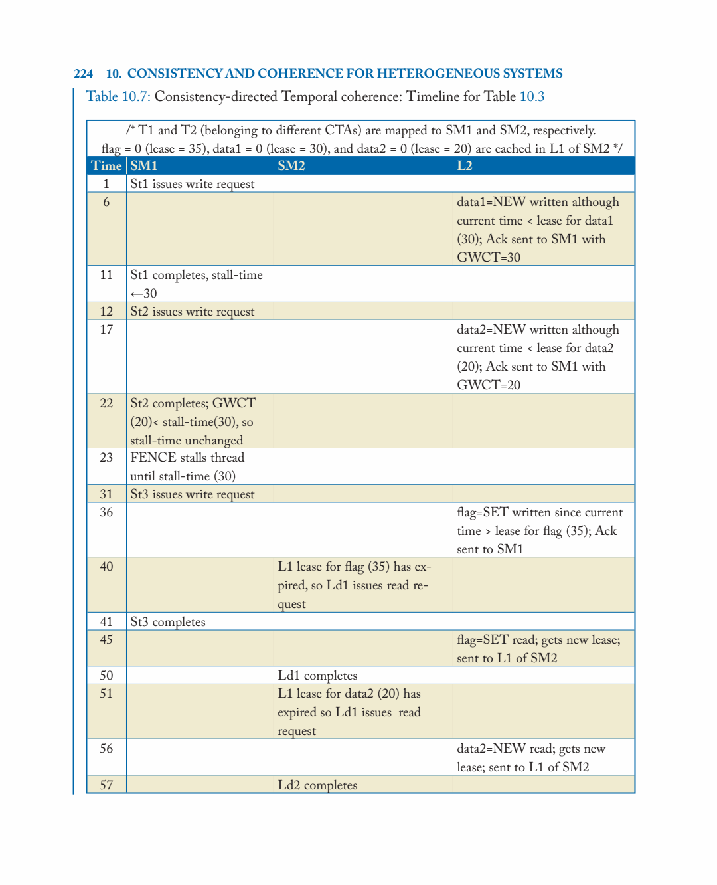
原书第 225 页PDF 247
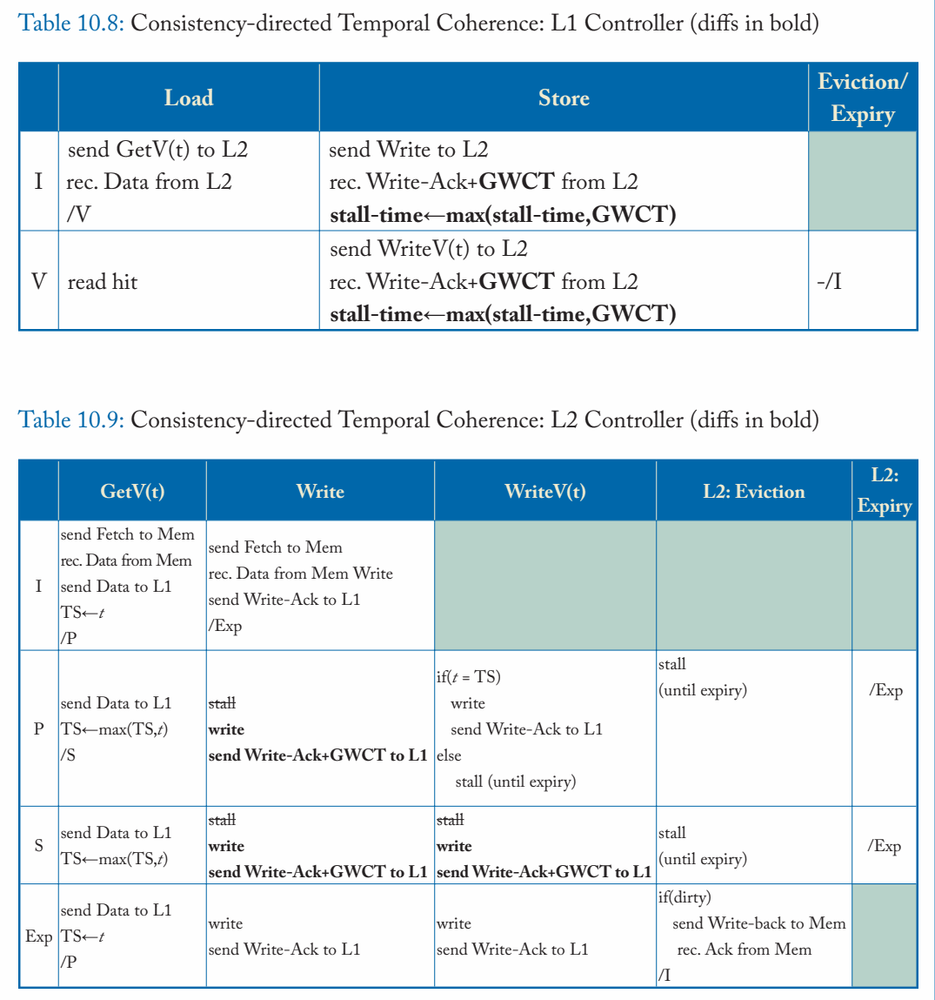
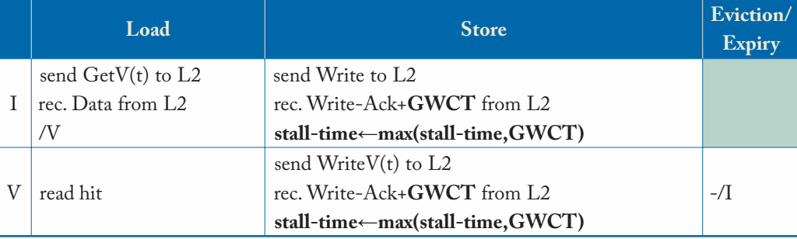
展开可搜索的英文文字
Eviction/ Load Store Expiry send GetV(t) to L2 send Write to L2 I rec. Data from L2 rec. Write-Ack+GWCT from L2 /V stall-time←max(stall-time,GWCT) send WriteV(t) to L2 V read hit rec. Write-Ack+GWCT from L2 -/I stall-time←max(stall-time,GWCT)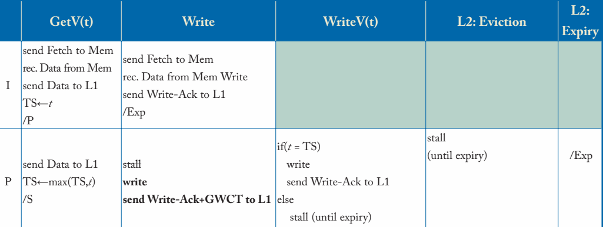
展开可搜索的英文文字
L2: GetV(t) Write WriteV(t) L2: Eviction Expiry send Fetch to Mem send Fetch to Mem rec. Data from Mem rec. Data from Mem Write I send Data to L1 send Write-Ack to L1 TS←t /Exp /P stall if(t = TS) (until expiry) /Exp send Data to L1 stall write P TS←max(TS,t) write send Write-Ack to L1 /S send Write-Ack+GWCT to L1 else stall (until expiry)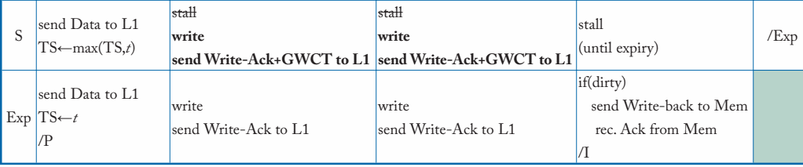
展开可搜索的英文文字
stall stall send Data to L1 stall S write write /Exp TS←max(TS,t) (until expiry) send Write-Ack+GWCT to L1 send Write-Ack+GWCT to L1 if(dirty) send Data to L1 write write send Write-back to Mem Exp TS←t send Write-Ack to L1 send Write-Ack to L1 rec. Ack from Mem /P /I查看 原书第 225 页 的完整原版面（PDF 247）
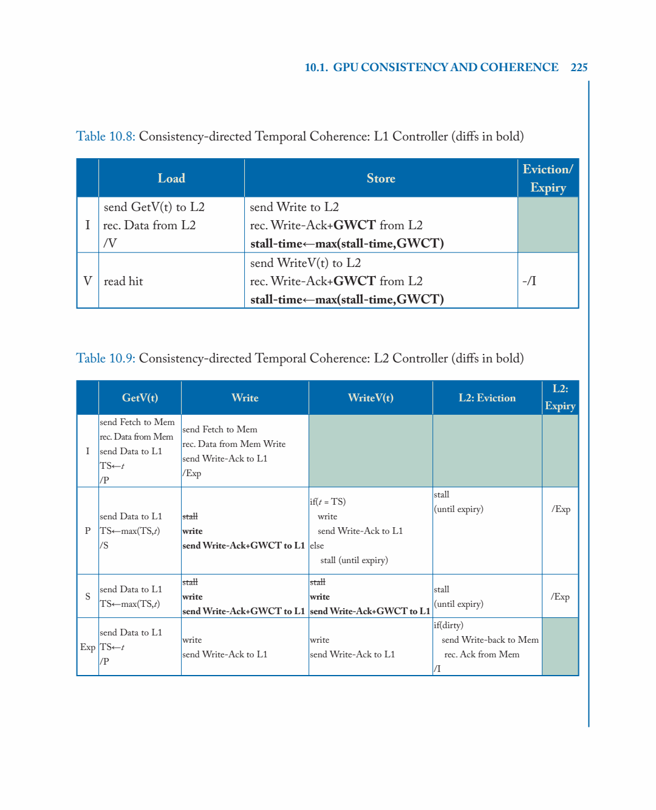
原书第 226 页PDF 248
ENGLISH• Supporting a non-inclusive L2 cache is cumbersome. This is because temporal coherence requires that a block that is valid in one or more L1s must have its lease time available at the L2. A complex workaround is possible wherein an unexpired block may be evicted from the L2 provided the evicted block’s lease is held someplace, for instance along with the L2 miss status holding register (MSHR) [30].
中文• 支持非包含式L2较为繁琐。时间缓存一致性要求：只要一个块在任何L1中有效，L2就必须能够取得其租约时间。有一种复杂的变通方法：允许L2逐出尚未到期的块，但必须将被逐出块的租约保存在其他位置，例如与L2未命中状态保持寄存器（MSHR）一起保存[30]。
ENGLISH• It requires global timestamps. With modern GPUs being relatively large area-wise, maintaining globally synchronized timestamps could be hard. A recent proposal, however, has shown how a variant of temporal coherence can be implemented without using global timestamps [25].
中文• 需要全局时间戳。现代GPU面积较大，维持全局同步时间戳可能很困难。不过，近期一项方案展示了如何在不使用全局时间戳的情况下实现时间缓存一致性的一种变体[25]。
ENGLISH• Performance could be sensitive to the choice of the lease period. A lease period that is too short increases the L1 miss rate; a lease period that is too long causes the writes (or FENCEs) to stall more.
中文• 性能可能对租约长度敏感。租约过短会提高L1未命中率；租约过长则会增加写入或FENCE的停顿。
ENGLISH• Temporal coherence cannot directly take advantage of scoped synchronization. For instance, stores involved in CTA-scoped synchronization (intuitively) need not be written to the L2s—but in temporal coherence every store is written to the L2 since it is designed under the assumption of write-through/no-write-allocate L1 caches.
中文• 时间缓存一致性无法直接利用带作用域的同步。例如，直观地说，参与CTA作用域同步的存储无须写入L2；但时间缓存一致性建立在L1采用写直达／不写分配策略的假设上，因此每次存储都要写入L2。
ENGLISH• Temporal coherence involves timestamps. Timestamps introduce complexities (e.g., timestamp rollover) in the design and verification process.
中文• 时间缓存一致性使用时间戳，而时间戳会给设计和验证引入复杂性，例如时间戳回绕。
ENGLISHIn summary, although workarounds are possible for most of the above limitations, they do tend to add complexity to an already unconventional timestamp-based coherence protocol.
中文总之，虽然上述大多数局限都有变通方法，但它们往往使本就非常规的、基于时间戳的缓存一致性协议更加复杂。
ENGLISH10.1.4 RELEASE CONSISTENCY-DIRECTED COHERENCE Temporal coherence, which is based on the powerful idea of leases, is versatile enough to enforce both consistency-agnostic and consistency-directed variants of coherence. On the other hand, protocols involving leases and timestamps are arguably cumbersome. In this section, we discuss an alternative approach to GPGPU coherence called release consistency-directed coherence (RCC) that directly enforces release consistency (RC), which differs from XC by distinguishing acquires from releases, whereas XC treats all synchronization the same.
中文10.1.4 由释放一致性指导的缓存一致性
时间缓存一致性建立在租约这一强有力的思想之上，足够灵活，既能实现与内存一致性模型无关的变体，也能实现由其指导的变体。不过，包含租约和时间戳的协议确实较为繁琐。本节讨论另一种GPGPU缓存一致性方法，称为由释放一致性指导的缓存一致性（release consistency-directed coherence，RCC），它直接实现释放一致性（RC）。RC与XC不同：RC区分获取和释放操作，而XC对所有同步操作一视同仁。
时间缓存一致性建立在租约这一强有力的思想之上，足够灵活，既能实现与内存一致性模型无关的变体，也能实现由其指导的变体。不过，包含租约和时间戳的协议确实较为繁琐。本节讨论另一种GPGPU缓存一致性方法，称为由释放一致性指导的缓存一致性（release consistency-directed coherence，RCC），它直接实现释放一致性（RC）。RC与XC不同：RC区分获取和释放操作，而XC对所有同步操作一视同仁。
ENGLISHRCC compromises on flexibility, in that it can only enforce variants of RC. But in return for this reduced flexibility, RCC is arguably simpler, can naturally exploit scope information, and can be made to work with non-inclusive L2 caches. In the following, we start by briefly recapping the RC memory model and then extend it with scopes. We then describe a simple RCC protocol followed by two optimizations. Each of the protocols can enforce both the scoped and non-scoped variants of RC.
中文RCC在灵活性上作出取舍：它只能实现RC的各种变体。作为交换，RCC可以更简单，自然利用作用域信息，并适用于非包含式L2。下面先简要回顾RC内存模型，再将其扩展为带作用域的模型；然后介绍一种简单RCC协议及两项优化。每种协议都能实现带作用域和不带作用域的RC。
查看 原书第 226 页 的完整原版面（PDF 248）
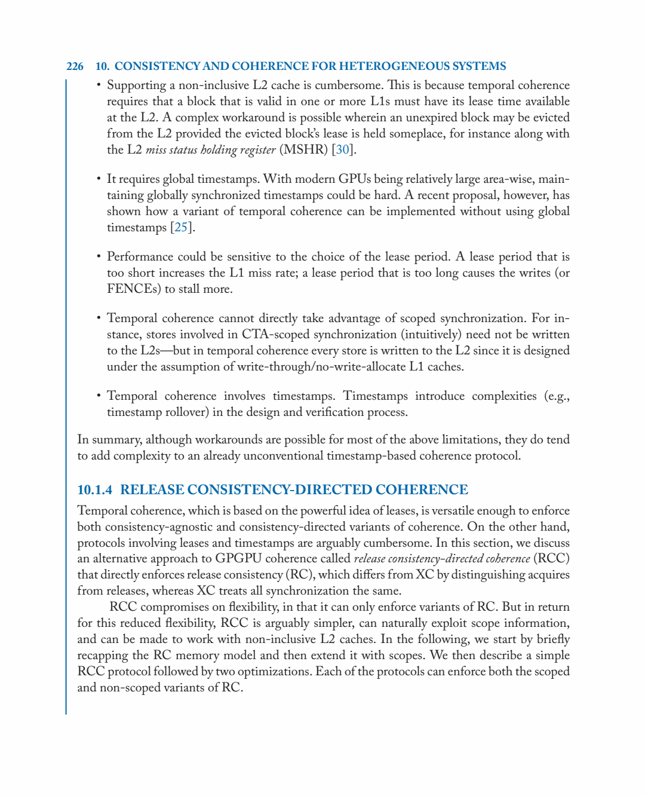
原书第 227 页PDF 249
ENGLISHRelease Consistency: Non-scoped and scoped variants In this section, we discuss the RC memory model starting with the non-scoped variant, and then extend it with scopes.
中文释放一致性：不带作用域与带作用域的变体
本节先讨论不带作用域的RC内存模型，然后加入作用域。
本节先讨论不带作用域的RC内存模型，然后加入作用域。
ENGLISHRecall that RC (introduced in Section 5.5.1) has special atomic operations that order memory accesses in one direction as opposed to the bidirectional ordering enforced by a FENCE. Specifically, RC has a release (Rel) store and an acquire (Acq) load that enforce the following orderings.
中文回顾5.5.1节，RC具有特殊原子操作，只对访存施加单向顺序，区别于FENCE施加的双向顺序。具体来说，RC包含释放（Rel）存储和获取（Acq）加载，它们保证以下顺序。

中文• 获取加载 → 加载／存储

中文• 加载／存储 → 释放存储
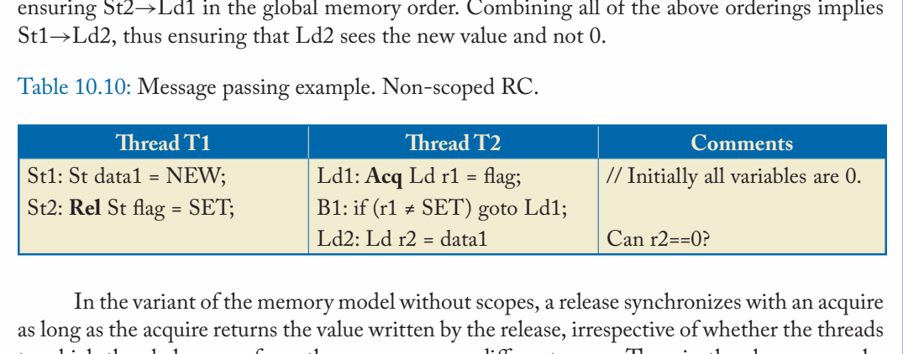
ENGLISH• Rel Store/Acq Load Rel Store/Acq Load ! Consider the message-passing example shown in Table 10.10. Marking St2 as a release ensures St1 St2; marking Ld1 as an acquire ensures Ld1 Ld2 orderings. The acquire9 (Ld1) ! ! reads the value written by the release (St2). In doing so, the release synchronizes with the acquire, ensuring St2 Ld1 in the global memory order. Combining all of the above orderings implies ! St1 Ld2, thus ensuring that Ld2 sees the new value and not 0. !

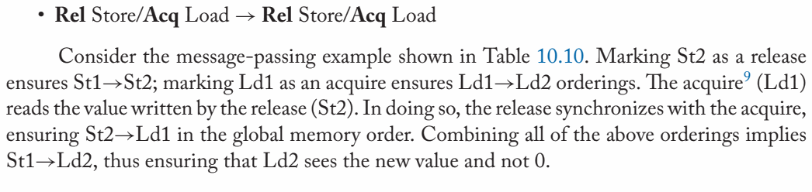
数学符号与上下标以此原版面为准中文• 释放存储／获取加载 → 释放存储／获取加载
考虑表10.10中的消息传递示例。将St2标记为释放，保证St1→St2；将Ld1标记为获取，保证Ld1→Ld2。获取操作⁹Ld1读到释放操作St2写入的值，因此释放与获取同步，在全局内存顺序中保证St2→Ld1。组合这些顺序可得St1→Ld2，从而确保Ld2读到新值，而非0。
考虑表10.10中的消息传递示例。将St2标记为释放，保证St1→St2；将Ld1标记为获取，保证Ld1→Ld2。获取操作⁹Ld1读到释放操作St2写入的值，因此释放与获取同步，在全局内存顺序中保证St2→Ld1。组合这些顺序可得St1→Ld2，从而确保Ld2读到新值，而非0。
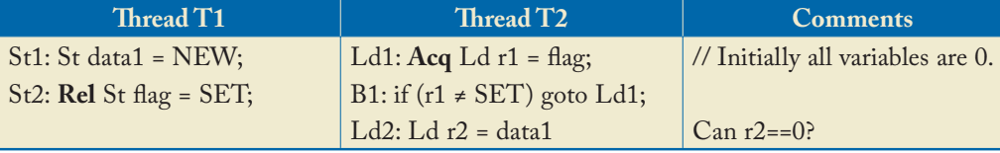
展开可搜索的英文文字
Th read T1 Th read T2 Comments St1: St data1 = NEW; Ld1: Acq Ld r1 = fl ag; // Initially all variables are 0. St2: Rel St fl ag = SET; B1: if (r1 ≠ SET) goto Ld1; Ld2: Ld r2 = data1 Can r2==0?ENGLISHIn the variant of the memory model without scopes, a release synchronizes with an acquire as long as the acquire returns the value written by the release, irrespective of whether the threads to which they belong are from the same scope or different scope. Thus, in the above example, Ld2 will see the new value irrespective of whether T1 and T2 belong to the same CTA or different CTAs.
中文在不带作用域的模型中，只要获取操作返回释放操作写入的值，释放就与获取同步，而不论二者所属线程来自相同还是不同作用域。因此，在上述例子中，无论T1和T2属于同一CTA还是不同CTA，Ld2都会读到新值。
ENGLISHA Scoped RC Model. In a scoped RC model, each atomic operation is associated with a scope. A release is said to synchronize with an acquire if: (1) the acquire load returns the value written by the release store and (2) the scope of each atomic operation includes the thread executing the other operation.
中文带作用域的RC模型。每个原子操作都关联一个作用域。当且仅当以下条件成立时，释放与获取同步：（1）获取加载返回释放存储写入的值；（2）每个原子操作的作用域都包含执行另一个操作的线程。
ENGLISHFor instance, a release of CTA scope is said to synchronize with an acquire of CTA scope only if the two threads executing the acquire and release belong to the same CTA. On the other hand, a release of GPU scope is said to synchronize with an acquire of GPU scope irrespective
中文例如，CTA作用域的释放只有在执行获取和释放的两个线程属于同一CTA时，才与CTA作用域的获取同步。而GPU作用域的释放可以与GPU作用域的获取同步，无论
ENGLISH9Acquire refers to the load marked acquire and release refers to a store marked release.
中文⁹ “获取”指被标记为acquire的加载，“释放”指被标记为release的存储。
查看 原书第 227 页 的完整原版面（PDF 249）
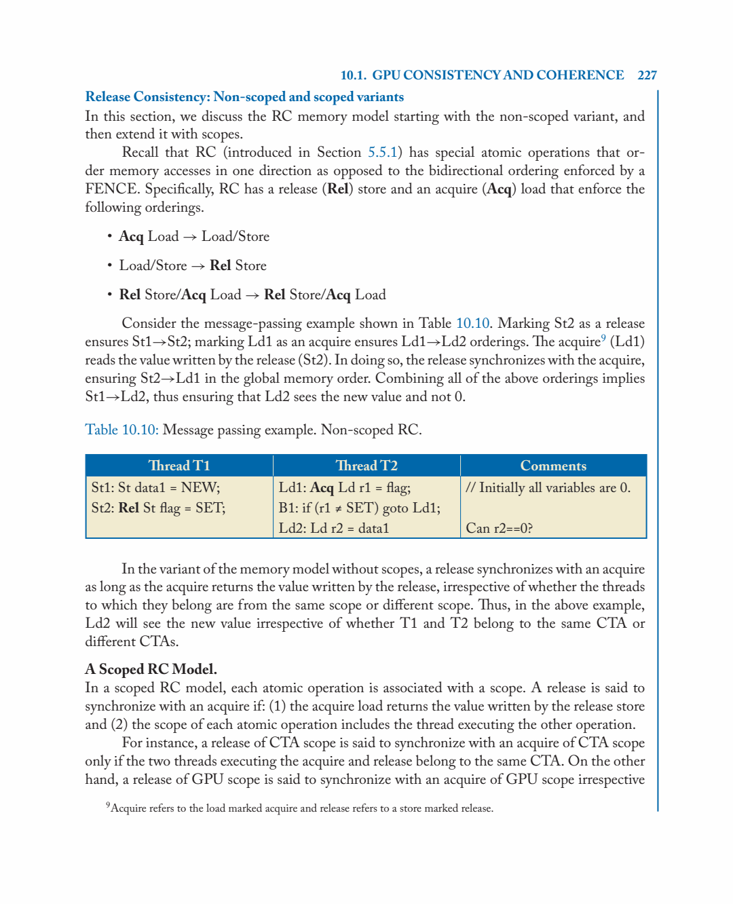
原书第 228 页PDF 250
ENGLISHof whether the two threads are from the same CTA or different CTAs (as long as they are issued on the same GPU).
中文两个线程来自同一CTA还是不同CTA，只要它们在同一GPU上发出即可。
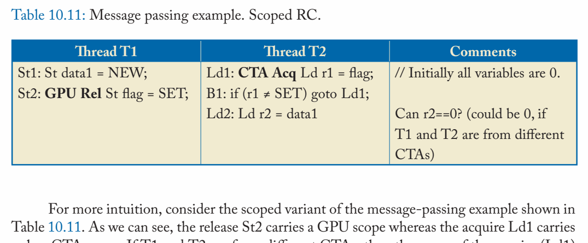
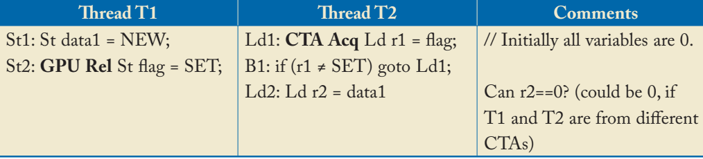
展开可搜索的英文文字
Th read T1 Th read T2 Comments St1: St data1 = NEW; Ld1: CTA Acq Ld r1 = fl ag; // Initially all variables are 0. St2: GPU Rel St fl ag = SET; B1: if (r1 ≠ SET) goto Ld1; Ld2: Ld r2 = data1 Can r2==0? (could be 0, if T1 and T2 are from diff erent CTAs)ENGLISHFor more intuition, consider the scoped variant of the message-passing example shown in
中文为获得更直观的理解，考虑
ENGLISHTable 10.11. As we can see, the release St2 carries a GPU scope whereas the acquire Ld1 carries
中文表10.11中带作用域的消息传递示例。释放St2带有GPU作用域，而获取Ld1
ENGLISHonly a CTA scope. If T1 and T2 are from different CTAs, then the scope of the acquire (Ld1) does not include T1. Therefore, in such a situation the release is said not to synchronize with the acquire, which means that r2 could in fact read the old value of 0. On the other hand, if T1 and T2 are from the same CTA, r2 cannot read a 0.
中文只有CTA作用域。如果T1和T2来自不同CTA，Ld1的作用域就不包含T1。因此，这种情况下释放不与获取同步，r2确实可能读到旧值0。另一方面，如果T1和T2来自同一CTA，r2就不能读到0。
ENGLISHOne approach to formalizing scoped RC is to employ a variant of Shasha and Snir’s formalism [28] and use a partial order, instead of a global memory order, to order conflicting operations. More specifically, not all conflicting operations are ordered—only releases and acquires that synchronize with each other are ordered. It is worth noting that NVIDIA adopted this approach to formalizing its PTX memory consistency model [20].
中文形式化带作用域RC的一种方法，是采用Shasha和Snir形式化方法[28]的变体，用偏序而非全局内存顺序排列冲突操作。更具体地说，并非所有冲突操作都必须排序，只有彼此同步的释放和获取才需要排序。NVIDIA正是采用这种方法形式化其PTX内存一致性模型[20]。
ENGLISHRelease Consistency-directed Coherence (RCC) In this section, we introduce a protocol that directly enforces RC instead of enforcing SWMR. Specifically, the protocol does not eagerly propagate writes to other threads—i.e., it does not enforce SWMR. Instead, writes are written to the L2 upon a release and become visible to another thread when that thread self-invalidates the L1 on an acquire and pulls in new values from the L2.
中文由释放一致性指导的缓存一致性（RCC）
本节介绍一种直接实现RC而非维持SWMR的协议。具体来说，协议不会主动将写入立即传播给其他线程，即不维持SWMR；相反，写入在释放时写入L2，而另一个线程在获取时使L1自无效化、并从L2取入新值，此时才会看到这些写入。
本节介绍一种直接实现RC而非维持SWMR的协议。具体来说，协议不会主动将写入立即传播给其他线程，即不维持SWMR；相反，写入在释放时写入L2，而另一个线程在获取时使L1自无效化、并从L2取入新值，此时才会看到这些写入。
ENGLISHFor the following discussion let us assume write-back/write-allocate L1 caches. Also, for now let us ignore scopes and assume that synchronization is between threads from two different CTAs. We will describe later how RCC can handle intra-CTA synchronization efficiently. The main steps involved in RCC are as follows.
中文以下假设L1采用写回／写分配策略。暂时忽略作用域，并假设同步发生在两个不同CTA的线程之间；稍后将说明RCC如何高效处理CTA内部同步。RCC的主要步骤如下。
ENGLISH• Loads and stores that are not marked acquire or release behave like normal loads and stores in a write-back/write-allocate L1 cache.
中文• 未标记为获取或释放的加载和存储，其行为与写回／写分配L1中的普通加载和存储相同。
查看 原书第 228 页 的完整原版面（PDF 250）
原书第 229 页PDF 251
展开可搜索的英文文字
Load/ Store/ Acq.scope = GPU/ Rel.scope = GPU/ L1: Acq.scope = CTA Rel.scope = CTA Acq (no scope) Rel (no scope) Eviction forall dirty blocks send GetV to L2 send Write-back to L2 rec. Data from L2 rec. Ack send GetV to L2 send GetV to L2 read/V send GetV to L2 I rec. Data from L2 rec. Data from L2 forall other valid blocks rec. Data from L2 read/V write/V Invalidate write/V send Write-back to L2 rec. Ack forall dirty blocks send GetV to L2 send Write-back to L2 if(dirty) rec. Data from L2 rec. Ack send Write-back to L2 V read hit write hit read write hit rec. Ack from L2 forall other valid blocks send Write-back to L2 /I Invalidate rec. Ack展开可搜索的英文文字
L2: GetV Write-back Eviction send Fetch to Mem allocate block rec. Data from Mem write I send Data to L1 send Ack to L1 /V /V if(dirty) write send Write-back to Mem V send Data to L1 send Ack to L1 rec. Ack from Mem /IENGLISH• Upon a store marked release, all dirty blocks in the L1, except the one written by the release, are written to the L2. Then, the block written by the release is written to the L2, ensuring Load/Store Rel Store. !数学符号与上下标以此原版面为准

中文• 遇到标记为释放的存储时，先将L1中除该释放要写入的块以外的全部脏块写回L2，再将释放所写的块写回L2，从而保证加载／存储→释放存储。
ENGLISH• A load marked acquire reads a fresh copy of the block from the L2. Then, all valid blocks in the L1, other than the one read by the acquire, are self-invalidated, thereby ensuring Acq Load Load/Store. ! Example. Consider the message-passing example in Table 10.10, assuming that T1 and T2 are from different CTAs, mapped to two different SMs (SM1 and SM2). Initially let us assume数学符号与上下标以此原版面为准

中文• 标记为获取的加载从L2读取该块的新鲜副本，然后使L1中除获取刚读到的块之外的全部有效块自无效化，从而保证获取加载→加载／存储。
示例。考虑表10.10中的消息传递示例，假设T1和T2来自不同CTA，分别映射到不同SM（SM1和SM2）。初始时，假设
示例。考虑表10.10中的消息传递示例，假设T1和T2来自不同CTA，分别映射到不同SM（SM1和SM2）。初始时，假设
查看 原书第 229 页 的完整原版面（PDF 251）
原书第 230 页PDF 252
展开可搜索的英文文字
/* T1 and T2 (belonging to diff erent CTAs) are mapped to SM1 and SM2, respectively. fl ag = 0 and data1 = 0 are cached in L1s of both SM1 and SM2 */ Time SM1/L1 SM2/L1 L2 t St1 writes data1=NEW 1 and completes t Rel St2 issues Write- 2 back of data1 t data1=NEW written and Ack 3 sent back to L1 of SM1 t Ack received; fl ag=SET 4 written and its Writeback initiated t fl ag=SET written and Ack sent 5 back to L1 of SM1 t Rel St2 completes 6 t Acq Ld1 issues read for fl ag 7 t fl ag=SET read and sent to L1 8 of SM2 t value received; data1 self-invali- 9 dated; Acq Ld1 completes t Ld2 issues read for data1 10 t data1=NE W read and sent to 11 L1 of SM2 t Ld2 completes 12ENGLISHthe cache blocks containing data1 and flag are cached in the L1s of both SM1 and SM2. We illustrate a timeline of events in Table 10.14. At time=t , St1 is performed, causing NEW to be 1 written to data1 cached in SM1’s L1. At time=t , St2 (marked release) causes all of the dirty 2 blocks in SM1’s L1 to be written to the L2. Therefore, data1 is written to the L2 at time=t . Then, 3 at time=t , the release write is performed, causing SET to be written to flag cached in SM1’s L1 4 and subsequently written back to the L2 at time=t . At time=t , Ld1 (marked acquire) issues a 5 7 read for flag, causing flag=SET to be read from the L2. At time=t , when the value is received, 9 all of the valid blocks in SM2’s L1, except the block read by the acquire, are self-invalidated. Thus, data1 is self-invalidated. At time=t , Ld2 causes a read request for data1 to be sent to the 10 L2 and the up-to-date value of NEW is read.数学符号与上下标以此原版面为准

中文包含data1和flag的缓存块同时驻留在SM1和SM2的L1中。表10.14展示了事件时间线。在time=t₁，St1执行，将NEW写入SM1的L1中缓存的data1。time=t₂，标记为释放的St2使SM1的L1中全部脏块写回L2，因此data1于time=t₃写入L2。然后，time=t₄执行释放写入，将SET写入SM1的L1中的flag，并于time=t₅进一步写回L2。time=t₇，标记为获取的Ld1发出flag读请求，从L2读到flag=SET。time=t₉收到该值时，SM2的L1中除获取所读的块以外的全部有效块自无效化，因此data1被置为无效。time=t₁₀，Ld2向L2发出data1读请求，读到最新值NEW。
查看 原书第 230 页 的完整原版面（PDF 252）
原书第 231 页PDF 253
ENGLISHExploiting Scopes. If all atomic operations are of GPU scope, the protocol described above is applicable as is. This is because the protocol already pushes all of the dirty data to the L2 (the cache level corresponding to GPU scope) on a release, and pulls data from the L2 upon an acquire. Notably, the RCC protocol can take advantage of CTA scopes: a CTA-scoped release need not write-back dirty blocks to the L2; a CTA-scoped acquire need not self-invalidate any of the valid blocks in the L1.
中文利用作用域。如果全部原子操作都采用GPU作用域，上述协议无须改动即可适用，因为它已经在释放时将全部脏数据推送到L2——与GPU作用域对应的缓存级别——并在获取时从L2拉取数据。RCC还可以利用CTA作用域：CTA作用域的释放无须将脏块写回L2，CTA作用域的获取也无须使L1中的有效块自无效化。
ENGLISHProtocol Specification. We present the detailed specifications of the L1 and L2 controllers in Tables 10.12 and 10.13. There are two stable states: (I)nvalid and V(alid). The L1 communicates with the L2 using the GetV and the Write-back requests. GetV asks for the specified block to be brought into the L1 in Valid state. Differently from GetV(t) used in temporal coherence, GetV does not carry a timestamp as a parameter; a block brought into the L1 via GetV is selfinvalidated upon an acquire. The Write-back request copies the specified block from the L1 into the L2, without evicting the block from the L1.
中文协议规约。表10.12和表10.13给出了L1、L2控制器的详细规约。协议包含两个稳定状态：I（Invalid，无效）和V（Valid，有效）。L1通过GetV和Write-back请求与L2通信。GetV请求将指定块以Valid状态取入L1。与时间缓存一致性中的GetV(t)不同，GetV不携带时间戳参数；通过GetV取入L1的块，在获取操作时自无效化。Write-back将指定块从L1复制到L2，而不将该块从L1逐出。
ENGLISHTable 10.12 shows the L1 controller. If the release and acquire are of GPU scope (or if the
中文表10.12展示了L1控制器。如果释放和获取具有GPU作用域，或者
ENGLISHreleases and acquire carry no scope information), the protocol must write-back all dirty blocks on a release and self-invalidate all valid blocks on an acquire. Releases and acquires of CTA scope behave like ordinary stores and loads in a write-back/write-allocate cache.
中文不携带作用域信息，协议必须在释放时写回所有脏块，在获取时使所有有效块自无效化。CTA作用域的释放和获取，则表现为写回／写分配缓存中的普通存储和加载。
ENGLISHFinally, it is worth noting that the protocol does not rely on cache inclusion. Indeed, as shown in Table 10.13, a valid L2 block can be silently evicted without informing the L1. Intuitively, this is because the L2 does not hold any critical metadata such as sharers or ownership information.
中文最后，该协议不依赖缓存包含性。实际上，如表10.13所示，L2中的有效块可以静默逐出，无须通知L1。直观原因是L2不保存共享者、所有权等关键元数据。
ENGLISHSummary. In summary, RCC is a simple protocol that directly enforces RC. Because it does not hold any protocol metadata at the L2, it does not require the L2 to be inclusive and allows for L2 blocks to be evicted silently. The protocol can take advantage of scope information—specifically, if the release and acquire are of CTA scope it does not require expensive write-backs or selfinvalidations. On the other hand, without knowledge of scopes, intra-CTA synchronization is inefficient: RCC has to assume conservatively that releases and acquires are of GPU scope and write-back/self-invalidate data from the L1 even if the synchronization is within one CTA.
中文小结。RCC是一种直接实现RC的简单协议。由于L2中不保存协议元数据，它不要求L2具有包含性，并允许静默逐出L2块。协议能够利用作用域信息：如果释放和获取采用CTA作用域，就无须昂贵的写回和自无效化。另一方面，如果缺少作用域信息，CTA内部同步就会很低效：RCC必须保守地假设释放和获取都属于GPU作用域，即使同步只发生在一个CTA内部，也要写回L1数据并使其自无效化。
ENGLISHExploiting Ownership: RCC-O Releases (which cause all dirty lines to be written back to the L2) and acquires (which cause all valid lines to be self-invalidated) are expensive operations in the simple protocol described above. One approach to reduce the cost of releases and acquires is to track ownership [13, 16], so that owned blocks need not be self-invalidated on an acquire nor written-back upon a release.
中文利用所有权：RCC-O
在上述简单协议中，释放使全部脏缓存行写回L2，获取使全部有效缓存行自无效化，都是代价较高的操作。降低这些成本的一种方法是跟踪所有权[13, 16]，使拥有所有权的块在获取时无须自无效化，在释放时也无须写回。
在上述简单协议中，释放使全部脏缓存行写回L2，获取使全部有效缓存行自无效化，都是代价较高的操作。降低这些成本的一种方法是跟踪所有权[13, 16]，使拥有所有权的块在获取时无须自无效化，在释放时也无须写回。
ENGLISHThe key idea is to add an O(wned) state—every store must obtain ownership of the L1 cache line before a subsequent release. For each block, the L2 maintains the owner, which refers to the identity of the L1 that owns the block. Upon a request for ownership, the L2 first downgrades the previous owner (if there is one), causing the previous owner to write-back dirty data
中文核心思想是增加O（Owned，拥有所有权）状态：每次存储都必须在后续释放之前取得对应L1缓存行的所有权。对于每个块，L2记录其所有者，即拥有该块的L1的标识。收到所有权请求时，L2先降级先前的所有者（如果存在），令其将脏数据写回
查看 原书第 231 页 的完整原版面（PDF 253）
原书第 232 页PDF 254
展开可搜索的英文文字
Load/ Store/ Acq.scope = GPU/ Rel.scope = GPU/ L1: From L2: Acq.scope = CTA Rel.scope = CTA Acq (no scope) Rel (no scope) Eviction Req-Write-back send GetV to L2 send GetV to L2 send GetO to L2 rec. Data from L2 send GetO to L2 I rec. Data from L2 rec. Data from L2 read/V rec. Data from L2 read/V write/O forall other valid non-O blocks write/O Invalidate send GetV to L2 send GetO to L2 rec. Data from L2 send GetO to L2 V read hit rec. Data from L2 read rec. Data from L2 /I write/O forall other valid non-O blocks write/O Invalidate send Write-back to L2 O read hit write hit read hit write hit send Data to L2/V rec. Ack from L2/IENGLISHto the L2. After sending the current data to the new owner, the L2 changes ownership. Because a block in state O implies the absence of remote writers, there is no need to self-invalidate an Owned block on an acquire. Because the L2 tracks owners, there is no need to write-back an Owned block upon a release.
中文L2。将最新数据发送给新所有者后，L2更新所有权。O状态意味着不存在远程写入者，因此获取时无须使Owned块自无效化。由于L2跟踪所有者，释放时也无须写回Owned块。
ENGLISHThere is yet another benefit to ownership tracking: even in the absence of scope information, ownership tracking can help in reducing the cost of intra-CTA acquires. Consider the message passing example shown in Table 10.10, assuming now that the threads T1 and T2 belong to the same CTA. In the absence of scope information, recall that RCC will have to treat both releases and acquires conservatively, writing back all of the dirty data on a release, and self-invalidating all valid blocks on an acquire. With RCC-O, releases still have to be treated conservatively; all of the stores before the release will still have to obtain ownership. If a block that is acquired is in Owned state, it implies that the corresponding release must have been from a thread that is within the same CTA. Consequently, the acquire can be treated like a CTA-scoped acquire and the self-invalidation of valid blocks can be obviated.
中文所有权跟踪还有一个好处：即使没有作用域信息，也能降低CTA内部获取的成本。考虑表10.10中的消息传递示例，现在假设T1和T2属于同一CTA。前面提到，在没有作用域信息时，RCC必须保守处理释放和获取：释放时写回全部脏数据，获取时使全部有效块自无效化。采用RCC-O后，释放仍需保守处理，释放之前的所有存储仍须取得所有权。但若获取所读的块处于Owned状态，就说明对应的释放必然来自同一CTA内的线程。因此，可将该获取视为CTA作用域的获取，免去对有效块的自无效化。
ENGLISHProtocol Specification. We present the detailed specification of the L1 controller in Table 10.15 and the L2 controller in Table 10.16. The main change is the addition of the O state. Every store in V (or I) state has to contact the L2 controller and request ownership. Having obtained ownership, any subsequent store to that line can simply update the line in the L1 without contacting the L2. Thus, a block in O state is potentially stale at the L2. For this reason, when the L2 receives a request for ownership of a line already in O state, the L2 first requests the previous owner to write-back the block, sends the up-to-date data to the current requester, and then changes ownership.
中文协议规约。表10.15和表10.16分别给出L1、L2控制器的详细规约。主要变化是增加O状态。V或I状态下的每次存储都必须联系L2控制器，请求所有权。一旦取得所有权，后续针对该缓存行的存储就只需更新L1，不必联系L2。因此，O状态块在L2中的副本可能过期。出于这一原因，L2收到对已经处于O状态的缓存行的所有权请求时，先请求旧所有者写回该块，再将最新数据发给当前请求者，然后变更所有权。
查看 原书第 232 页 的完整原版面（PDF 254）
原书第 233 页PDF 255
展开可搜索的英文文字
GetV GetO Write-back L2: Eviction send Fetch to Mem send Fetch to Mem allocate block rec. Data from Mem rec. Data from Mem I write展开可搜索的英文文字
send Data to L1 send Data to L1 send Ack to L1/V /V set owner/O send Data to L1 write V send Data to L1 /I set owner/O send Ack to L1 send Req-Write-back to L1 (owner) send Req-Write-back to L1 (owner) send Req-Write-back to L1 (owner) rec. Data from L1 (owner) rec. Data from L1 (owner) rec. Data from L1 (owner) write O send Write-back to Mem展开可搜索的英文文字
write/V send Data to L1 (requestor) send Ack to L1/V rec. Ack from Mem send Data to L1 (requestor) update owner/O /IENGLISHUpon hitting a release (CTA-scoped, GPU-scoped, or non-scoped), there is no need to write-back dirty data from the L1 to the L2. Instead, the protocol merely requires that all previous stores must have obtained ownership. Upon an acquire (GPU-scoped or non-scoped), only non-owned valid blocks need to be self-invalidated. If the acquire is of CTA scope or if the acquire is to a block that is already owned, it implies that the synchronization is intra-CTA and hence there is no need for self-invalidation.
中文遇到释放时，无论是CTA作用域、GPU作用域还是无作用域，都无须将脏数据从L1写回L2；协议只要求此前全部存储都已经取得所有权。遇到GPU作用域或无作用域获取时，只需使没有所有权的有效块自无效化。如果获取采用CTA作用域，或者读取的块已经由本L1拥有，就意味着是CTA内部同步，因此无须自无效化。
ENGLISHFinally, because the protocol hinges on the L2 maintaining ownership information, an L2 block in O state cannot be silently evicted; instead, it must first downgrade the current owner, requesting it to write-back the block in question.
中文最后，协议依赖L2维护所有权信息，因此O状态的L2块不能静默逐出；必须先降级当前所有者，请求其写回该块。
ENGLISHSummary. By tracking ownership, RCC-O allows for a reduced number of self-invalidations in comparison to RCC. In the absence of scopes, ownership tracking also enables the detection of intra-CTA acquires and obviates the need for self-invalidation in such a situation. However, intra-CTA releases are treated conservatively—each store to a previously unowned block still obtains ownership before a subsequent release. Finally, RCC-O cannot allow for blocks in state O to be evicted from the L2 silently; it has to first downgrade the current owner.
中文小结。与RCC相比，RCC-O通过跟踪所有权减少了自无效化次数。即使没有作用域，也可借助所有权识别CTA内部获取，免去此时的自无效化。但CTA内部释放仍需保守处理：对原先没有所有权的块执行存储，仍必须在后续释放之前取得所有权。最后，RCC-O不能静默逐出L2中的O状态块，而必须先降级当前所有者。
ENGLISHLazy Release Consistency-directed Coherence: LRCC In the absence of scope information, RCC treats both releases and acquires conservatively. In RCC-O, intra-CTA acquires can be detected and efficiently handled but releases are treated conservatively.
中文由惰性释放一致性指导的缓存一致性：LRCC
在没有作用域信息时，RCC对释放和获取都采取保守处理。RCC-O能够检测并高效处理CTA内部获取，但仍保守处理释放。
在没有作用域信息时，RCC对释放和获取都采取保守处理。RCC-O能够检测并高效处理CTA内部获取，但仍保守处理释放。
ENGLISHIs there a way for intra-CTA releases to also be efficiently handled? Lazy release consistency-directed coherence (LRCC) enables this. In LRCC, ordinary stores do not obtain ownership. Only release stores obtain ownership, on behalf of the stores before it in program order. When a block that is released is later acquired, the state of the block at the time of the acquire determines the coherence actions.
中文有没有办法也高效处理CTA内部释放？由惰性释放一致性指导的缓存一致性（LRCC）可以做到这一点。LRCC中，普通存储不取得所有权；只有释放存储会取得所有权，代表程序顺序上位于它之前的所有存储。当被释放的块随后被获取时，根据获取发生时该块的状态，决定缓存一致性动作。
查看 原书第 233 页 的完整原版面（PDF 255）
原书第 234 页PDF 256
ENGLISHIf the block is owned by the L1 of the acquiring thread, it implies that the synchronization is intra-CTA; hence, there is no need for self-invalidation. If the block instead is owned by a remote L1, it implies that the synchronization is inter-CTA. In that case, dirty cache blocks in that remote L1 are first written back and the valid blocks in the acquiring L1 are self-invalidated. Thus, by delaying coherency actions until an acquire, LRCC is able to handle intra-CTA synchronization very efficiently.
中文如果块由执行获取的线程所在L1拥有，就意味着同步发生在CTA内部，因此无须自无效化。如果块由远程L1拥有，则意味着跨CTA同步。此时，先将远程L1中的脏缓存块写回，再使获取方L1中的有效块自无效化。通过将缓存一致性动作推迟到获取时，LRCC能够十分高效地处理CTA内部同步。
展开可搜索的英文文字
/* T1 and T2 (belonging to diff erent CTAs) are mapped to SM1 and SM2, respectively. fl ag = 0 and data1 = 0 are cached in L1s of both SM1 and SM2 */ Time SM1/L1 SM2/L1 L2 t St1 writes data1=NEW 1 and completes t Rel St2 issues ownership 2 request for fl ag t ownership for fl ag obtained; 3 and sent to SM1 t ownership received; 4 fl ag=SET written and St2 completes t Acq Ld1 issues read for fl ag 5 t write-back request for fl ag 6 issued to L1 of SM1 (since it owns fl ag) t (before responding with 7 fl ag) write-back of data1 initiated t data1=NEW written and Ack 8 sent to L1 of SM1 t Ack received; fl ag=SET 9 sent to L2 t fl ag value written and sent to 10 L1 of SM2 t Acq Ld1 completes 11 t Ld2 issues read for data1 12 t data1=NEW read; sent to L1 13 of SM2 t Ld2 completes 14查看 原书第 234 页 的完整原版面（PDF 256）
原书第 235 页PDF 257
ENGLISHExample: Inter-CTA synchronization. Consider the message passing example shown in Table 10.10, assuming that the threads T1 and T2 belong to different CTAs. Initially, let us assume the cache blocks containing data1 and flag are cached in the L1s of both SM1 and SM2. We illustrate a timeline of events in Table 10.17. At time=t , St1 is performed causing NEW to be 1 written to data1 cached in SM1’s L1, without obtaining ownership. At time=t , St2 (marked 2 release) is performed, causing an ownership request for flag to be sent to the L2. With flag previously unowned by any SM, the L2 grants ownership by simply setting the owner to SM1 and responds to SM1. Upon receiving the response, SET is written to flag at SM1’s L1, and St2 completes at time=t . At time=t , Ld1 (marked acquire) is performed, causing a read request for 4 5 flag to be sent to the L2. At the L2, the block containing flag is found to be owned by SM1’s L1; therefore, the L2 requests for SM1’s L1 to write-back flag. Upon receiving this request at time=t , SM1’s L1 first writes back all dirty non-owned blocks (including data1=NEW); then,数学符号与上下标以此原版面为准

中文示例：跨CTA同步。考虑表10.10中的消息传递示例，假设T1和T2属于不同CTA。初始时，包含data1和flag的块在SM1和SM2的L1中均有缓存。表10.17展示了事件时间线。time=t₁时，St1将NEW写入SM1的L1中的data1，但不取得所有权。time=t₂时，标记为释放的St2执行，向L2发送flag所有权请求。由于此前没有任何SM拥有flag，L2只需将owner设为SM1并回复，即可授予所有权。SM1收到响应后，将SET写入其L1中的flag，St2于time=t₄完成。time=t₅，标记为获取的Ld1执行，向L2发出flag读请求。L2发现包含flag的块由SM1的L1拥有，因此请求SM1的L1写回flag。SM1的L1在time=t₇收到请求后，先写回全部脏的、未拥有所有权的块，包括data1=NEW；然后，
ENGLISH7 at time=t , it writes back flag=SET. At time=t , L2 receives flag, writes it locally and forwards 9 10 the value to SM2. At time=t , SM2 receives flag=SET and Ld1 completes. Finally, at time=t , 11 12 Ld2 causes a read request for data1 to be sent to the L2 and the up-to-date value of NEW is read.数学符号与上下标以此原版面为准

中文在time=t₉写回flag=SET。time=t₁₀，L2收到flag，将其写入本地并转发给SM2。time=t₁₁，SM2收到flag=SET，Ld1完成。最后，time=t₁₂，Ld2向L2发出data1读请求，并读到最新值NEW。
展开可搜索的英文文字
/* Both T1 and T2, belonging to the same CTAs, are mapped to SM1. fl ag = 0 and data1 = 0 are cached in SM1’s L1. */ Time T1 (SM1/L1) T2 (SM1/L1) L2 t St1 writes data1=NEW 1 and completes t Rel St2 issues ownership 2 request t ownership for flag obtained 3 and sent to SM1 t ownership received; 4 fl ag=SET written and St2 completes t Acq Ld1 reads fl ag=SET from 5 L1 and completes t Ld2 reads data1=NEW from 6 L1 and completesENGLISHExample: Intra-CTA synchronization. Let us consider the message passing example shown in
中文示例：CTA内部同步。考虑
ENGLISHTable 10.10, now assuming that the threads T1 and T2 belong to the same CTA, and hence are
中文表10.10中的消息传递示例，现在假设T1和T2属于同一CTA，因此
ENGLISHmapped to the same SM, SM1. We illustrate a timeline of events in Table 10.18. At time=t , St1 1数学符号与上下标以此原版面为准

中文都映射到同一个SM，即SM1。表10.18展示了事件时间线。time=t₁时，St1
查看 原书第 235 页 的完整原版面（PDF 257）
原书第 236 页PDF 258
ENGLISHis performed, causing NEW to be written to data1 cached in the L1. At time=t , St2 (marked 2 release) is performed, causing an ownership request for flag to be sent to the L2. Upon obtaining ownership, SET is written to flag cached in the L1. At time=t , Ld1 (marked acquire) is 5 performed. Since flag is owned by SM1, there are no self-invalidations and flag=SET is simply read from the L1. At time=t , Ld2 is performed, reading data1=NEW from the L1. 6数学符号与上下标以此原版面为准

中文执行，将NEW写入L1缓存的data1。time=t₂时，标记为释放的St2执行，向L2发出flag所有权请求。取得所有权后，将SET写入L1缓存的flag。time=t₅时，标记为获取的Ld1执行。由于flag由SM1拥有，无须自无效化，直接从L1读取flag=SET即可。time=t₆时，Ld2执行，从L1读取data1=NEW。
ENGLISHProtocol Specification. We present the detailed specification of the L1 controller in Table 10.19. The L2 controller is identical to the one for RCC-O (Table 10.16). In contrast to RCC-O, not all stores obtain ownership; only non-scoped/GPU-scoped releases obtain ownership. Like in RCC-O, a CTA-scoped acquire or an acquire for a block owned at the L1 implies intra-CTA synchronization; hence, there are no self-invalidations. Conversely, a GPUscoped/non-scoped acquire for a block not owned by the L1 implies inter-CTA synchronization and involves self-invalidations. Specifically, a GetV request is sent to the L2 to obtain the up-to-date value of the block that is acquired. (If at the L2, the requested block is owned by a different L1, the L2 causes that L1 to write back all of its dirty, non-owned blocks before writing back the requested block.) Then all valid non-owned L1 blocks, except the block just read by the acquire, are self-invalidated. Finally, like in RCC-O, LRCC hinges on the L2 maintaining ownership information. Therefore, an L2 block in state O cannot be evicted silently; instead, it must downgrade the current owner, asking it to write-back not only the block in question but also any other non-owned dirty blocks in that L1.
中文协议规约。表10.19给出了L1控制器的详细规约；L2控制器与RCC-O相同（表10.16）。与RCC-O不同，并非全部存储都取得所有权，只有无作用域或GPU作用域的释放才取得所有权。与RCC-O一样，CTA作用域获取，或读取本L1已拥有块的获取，意味着CTA内部同步，因此无须自无效化。反之，对本L1未拥有的块执行GPU作用域或无作用域获取，则意味着跨CTA同步，需要自无效化。具体来说，先向L2发送GetV，获取所读块的最新值。（若L2发现该块由另一个L1拥有，就要求该L1先写回全部脏的非Owned块，再写回请求块。）然后，使获取方L1中除刚读到的块外的全部有效非Owned块自无效化。最后，LRCC与RCC-O一样，依赖L2维护所有权信息，因此不能静默逐出O状态的L2块；必须降级当前所有者，不仅要求写回目标块，也要求写回该L1中其他所有未拥有所有权的脏块。
展开可搜索的英文文字
Load/ Store/ Acq.scope = GPU/ Rel.scope = GPU/ L1: From L2: Acq.scope = CTA Rel.scope = CTA Acq (no scope) Rel (no scope) Eviction Req-Write-back send GetV to L2 send GetV to L2 send GetV to L2 rec. Data from L2 send GetO to L2 I rec. Data from L2 rec. Data from L2 read/V rec. Data from L2 read/V write/V for all other valid non-O blocks write/O Invalidate send GetV to L2 if(dirty) rec. Data from L2 send GetO to L2 send Write-back to L2 V read hit write hit read rec. Data from L2 rec. Ack from L2 for all other valid non-O blocks write/O /I Invalidate for all other dirty non-O blocks for all other dirty non-O blocks send Write-back to L2 send Write-back to L2 O read hit write hit read hit write hit rec. Ack from L2/V rec. Ack from L2/V send Write-back to L2 send Data to L2/V rec. Ack from L2/IENGLISHSummary. By delaying coherence actions until the acquire, LRCC allows for intra-CTA synchronization to be detected and handled efficiently even in the absence of scope information. LRCC cannot allow for blocks in state O to be silently evicted from the L2, but the impact of this is limited to synchronization objects, since only release stores obtain ownership.
中文小结。LRCC将缓存一致性动作推迟到获取时，因此即使缺少作用域信息，也能检测并高效处理CTA内部同步。LRCC不允许静默逐出L2中的O状态块，但由于只有释放存储会取得所有权，这一限制的影响仅限于同步对象。
查看 原书第 236 页 的完整原版面（PDF 258）
原书第 237 页PDF 259
ENGLISHRelease Consistency-directed Coherence: Summary In this section, we discussed three variants of release consistency-directed coherence that can be used to enforce both scoped and non-scoped flavors of release consistency. While all of the variants can exploit knowledge of scopes, LRCC can handle intra-CTA synchronization efficiently even in the absence of scopes.
中文由释放一致性指导的缓存一致性：小结
本节介绍了三种变体，都可用于实现带作用域与不带作用域的释放一致性。它们都能利用作用域信息，而LRCC即使没有作用域，也能高效处理CTA内部同步。
本节介绍了三种变体，都可用于实现带作用域与不带作用域的释放一致性。它们都能利用作用域信息，而LRCC即使没有作用域，也能高效处理CTA内部同步。
ENGLISHGiven that LRCC can handle synchronization efficiently even in the absence of scopes, can we get rid of scoped memory consistency models? Not quite, in our opinion. Whereas laziness helps in avoiding wasteful write-backs in case of intra-CTA synchronization, it makes inter- CTA acquires slower. This is because laziness forces all of the write-backs from the L1 of the releasing thread to be performed on the critical path of the acquire. This effect becomes more pronounced in the case of synchronization between two devices, e.g., between a CPU and a GPU.
中文既然LRCC在没有作用域时也能高效处理同步，是否可以取消带作用域的内存一致性模型？我们认为还不行。惰性处理虽能避免CTA内部同步中无谓的写回，却会使跨CTA获取变慢。因为它将释放线程所在L1的全部写回操作放到了获取的关键路径上。在两个设备之间同步时，例如CPU与GPU之间，这一影响更加明显。
ENGLISHThus, whether or not GPU and heterogeneous memory models must involve scopes is a complex programmability vs. performance tradeoff.
中文因此，GPU和异构内存模型是否必须包含作用域，是可编程性与性能之间一个复杂的权衡问题。
ENGLISH10.2 MORE HETEROGENEITY THAN JUST GPUS
中文10.2 不止GPU：更广泛的异构性
ENGLISHIn this section, we consider the problem of how to expose a global shared memory interface across multiple multicore devices consisting of CPUs, GPUs, and other accelerators.
中文本节考虑如何为由CPU、GPU和其他加速器组成的多个多核设备，提供全局共享内存接口。
ENGLISHWhat makes the problem challenging is that each of the devices might guarantee a distinct consistency model enforced via a distinct coherence protocol. For instance, a CPU may choose to enforce a relatively strong consistency model such as TSO, using a consistency-agnostic protocol that enforces SWMR. On the other hand, a GPU may choose to enforce scoped RC, by employing a consistency-directed lazy release consistency protocol.
中文困难之处在于，每个设备可能通过不同的缓存一致性协议，保证不同的内存一致性模型。例如，CPU可能采用维持SWMR、与内存一致性模型无关的缓存一致性协议，实现TSO等相对较强的模型；GPU则可能采用由内存一致性模型指导的惰性释放一致性协议，实现带作用域的RC。
ENGLISHWhen two or more devices with distinct consistency models are integrated, what is the resulting consistency model of the heterogeneous device? How can it be programmed? How to integrate the coherence protocols of the two devices? Most of these questions are being actively researched by academia and industry. In the following section, we attempt to understand these questions better and outline the design space.
中文将两个或更多内存一致性模型不同的设备集成后，异构设备整体具有什么内存一致性模型？如何编程？如何集成各设备的缓存一致性协议？学术界和工业界正在积极研究这些问题。下面尝试更深入地理解这些问题，并概述设计空间。
ENGLISH10.2.1 HETEROGENEOUS CONSISTENCY MODELS Let us first understand the semantics of composing two distinct consistency models. Suppose two component multicore devices A and B are integrated such that they share memory—what is the resulting consistency model?
中文10.2.1 异构内存一致性模型
首先理解组合两种不同内存一致性模型的语义。假设将两个多核组件A和B集成为共享内存系统，得到的内存一致性模型是什么？
首先理解组合两种不同内存一致性模型的语义。假设将两个多核组件A和B集成为共享内存系统，得到的内存一致性模型是什么？
ENGLISHA seemingly straightforward answer is to declare the weaker of the two memory models to be the overall model. However, this simple solution will not work if the two memory models are incomparable as we saw in Section 5.8.1. Even if one of the models subsumes the other, a more efficient solution is possible.
中文看似直接的答案是，选择两种内存模型中较弱的作为整体模型。然而，如5.8.1节所见，两种模型可能不可比较，此时这一简单方法就不适用。即使一个模型包含另一个，也可能存在更高效的方案。
ENGLISHFor example, suppose multicore A enforces SC and multicore B satisfies TSO, how does the heterogeneous multicore made up of A and B behave?
中文例如，若多核组件A保证SC，而多核组件B满足TSO，由A和B组成的异构多核系统将如何表现？
查看 原书第 237 页 的完整原版面（PDF 259）
原书第 238 页PDF 260
ENGLISHFigure 10.2 shows the operational model of the heterogeneous multicore processor. Intu-
中文图10.2展示了这一异构多核处理器的操作式模型。直观地
ENGLISHitively, operations coming out of a thread from A should satisfy the memory ordering rules of A (which in our example is SC) and operations coming out of B should satisfy the memory model ordering rules of B (TSO).
中文说，来自A的线程的操作应满足A的访存排序规则，本例中即SC；来自B的操作应满足B的内存模型排序规则，即TSO。
ENGLISHConsider the Dekker’s example in Table 10.20. Is it possible for both Ld1 and Ld2 to read zeroes? This is indeed possible since TSO does not enforce the St2 Ld2 ordering. As ! shown in Table 10.21, once a FENCE instruction is inserted between St2 and Ld2, this is rendered impossible, since the FENCE now enforces the St2 Ld2 ordering. Note, however, ! that a FENCE is not needed between St1 and Ld1 since SC already enforces St1 Ld1. !数学符号与上下标以此原版面为准

中文考虑表10.20中的Dekker示例。Ld1和Ld2是否可能都读到0？确实可能，因为TSO不保证St2→Ld2。如表10.21所示，在St2与Ld2之间插入FENCE后，这一结果便不再可能，因为FENCE保证了St2→Ld2。不过，St1和Ld1之间无须FENCE，因为SC已经保证St1→Ld1。
展开可搜索的英文文字
Th read T1 (SC) Th read T2 (TSO) Comments St1: St1 fl ag1 = NEW; St2: St fla g2 = NEW; // Initially all variables are 0. Ld1: Ld1 r1 = fl ag2; Ld2: Ld r2 = flag1; // Can both r1 and r2 read 0? // Yes!ENGLISHThus, a heterogeneous shared memory architecture that is formed by composing component multicores with distinct consistency models results in a compound consistency model such that memory operations originating from each component satisfy the memory ordering rules of that component. Although this notion seems intuitive, to our knowledge this has not been formalized yet.
中文因此，将具有不同内存一致性模型的多核组件组合成异构共享内存体系结构后，会得到复合内存一致性模型：来自每个组件的访存操作都满足该组件的排序规则。虽然这一概念似乎很直观，但据我们所知，它尚未得到形式化。
查看 原书第 238 页 的完整原版面（PDF 260）
原书第 239 页PDF 261
展开可搜索的英文文字
Th read T1 (SC) Th read T2 (TSO) Comments St1: St fl ag1 = NEW; St2: S t flag2 = NEW; // Initially all variables are 0. FENCE Ld1: Ld r1 = fl ag2; // Can both r1 and r2 read 0? Ld2: Ld r2 = flag1; // No!ENGLISHProgramming with Heterogeneous Consistency Models How do we program such a heterogeneous shared memory architecture in which not all devices support the same consistency model? As we saw above, one approach is to simply target the compound consistency model. However, as one can imagine, programming with compound memory models can quickly get tricky, especially if very different memory consistency models are involved.
中文面向异构内存一致性模型编程
对于各设备并不支持同一种内存一致性模型的异构共享内存体系结构，应该如何编程？如前所述，一种方法是直接面向复合内存一致性模型。不过可以想见，复合模型下的编程很快就会变得棘手，尤其当涉及差别很大的模型时。
对于各设备并不支持同一种内存一致性模型的异构共享内存体系结构，应该如何编程？如前所述，一种方法是直接面向复合内存一致性模型。不过可以想见，复合模型下的编程很快就会变得棘手，尤其当涉及差别很大的模型时。
ENGLISHA more promising approach is to program with languages such as HSA or OpenCL with formally specified (scoped) synchronization primitives. Recall that C11 is a language model based on Sequential Consistency for data-race-free (“SC for DRF”) that we saw in Section 5.4. HSA and OpenCL extend the SC for DRF paradigm with scopes, dubbed Sequential Consistency for Heterogeneous-Race-Free (SC for HRF) [15].
中文更有前景的方法，是使用HSA或OpenCL等具有形式化定义的带作用域同步原语的语言。回顾5.4节，C11基于“无数据竞争程序具有顺序一致性”（SC for DRF）的语言模型。HSA和OpenCL将这一范式扩展为带作用域的形式，称为“无异构竞争程序具有顺序一致性”（SC for HRF）[15]。
ENGLISHHRF is conceptually similar to the scoped RC model we introduced in the previous section, but with a couple of differences. First, HRF is at the language-level, whereas the scoped RC model is at the virtual ISA level. Second, whereas HRF does not provide any semantics for programs with races, the scoped RC model provides semantics for such codes. Thus, the relationship between HRF and scoped RC is akin to the relationship between DRF-based language models and RC.
中文HRF在概念上与上一节介绍的带作用域RC相似，但有两点差别。首先，HRF属于语言层，而带作用域RC属于虚拟ISA层。其次，HRF不为存在竞争的程序提供任何语义，而带作用域RC仍为这些代码定义语义。因此，HRF与带作用域RC的关系，类似于基于DRF的语言模型与RC之间的关系。
ENGLISHHRF has two variants: HRF-direct and HRF-indirect. In HRF-direct, two threads can synchronize only if the synchronization operations (releases and acquires) have the same exact scope. HRF-indirect, on the other hand, allows for transitive synchronization using different scopes. For example, in HRF-indirect, if thread T1 synchronizes with T2 using scope S1, and subsequently T2 synchronizes with T3 using scope S2, T1 is said to transitively synchronize with T3. HRF-direct, which does not allow this transitivity, could be restrictive for programmers. It is worth noting that the scoped RC model, like HRF-indirect, allows for transitive synchronization.
中文HRF有两个变体：HRF-direct和HRF-indirect。HRF-direct中，只有同步操作——释放与获取——具有完全相同的作用域时，两个线程才能同步。HRF-indirect则允许通过不同作用域传递同步。例如，T1先通过作用域S1与T2同步，随后T2通过作用域S2与T3同步，那么T1就通过传递关系与T3同步。HRF-direct不允许这种传递性，可能限制程序员。带作用域RC与HRF-indirect一样，允许传递同步。
ENGLISHThe language level scoped-synchronization primitives are mapped to hardware instructions; each device with a unique hardware consistency model has separate mappings. Lustig et al. [21] provide a framework dubbed ArMOR for algorithmically deriving correct mappings based on their precise way to specify different memory consistency models.
中文语言层的带作用域同步原语会映射为硬件指令；具有不同硬件内存一致性模型的设备分别采用不同映射。Lustig等人[21]提出ArMOR框架，基于其精确描述不同内存一致性模型的方式，通过算法推导正确映射。
查看 原书第 239 页 的完整原版面（PDF 261）
原书第 240 页PDF 262
ENGLISHThe third approach toward programming with heterogeneity is to program with one of the component hardware memory consistency models, while instrumenting the code running in each of the other components with FENCE instructions and other instructions to ensure they are compatible with the chosen memory model. Again, the ArMOR framework can be used to translate between memory consistency models.
中文第三种异构编程方法，是选用某个组件的硬件内存一致性模型进行编程，同时在其他组件运行的代码中插入FENCE等指令，使它们与所选模型兼容。ArMOR框架同样可以用于在不同内存一致性模型之间转换。
ENGLISH10.2.2 HETEROGENEOUS COHERENCE PROTOCOLS Consider two multicore devices A and B with each device adhering to a distinct consistency model enforced via a distinct coherence protocol. As we can see in Figure 10.3, each of the devices has a local coherence protocol for keeping its local L1s coherent. How do we integrate the two devices into one heterogeneous shared memory machine? In particular, how do we stitch the two coherence protocols together correctly? Correctness hinges on whether the heterogeneous machine satisfies the compound consistency model, i.e., memory operations from each device must satisfy the memory ordering rules of the device’s consistency model.
中文10.2.2 异构缓存一致性协议
考虑两个多核设备A和B，每个设备分别通过不同缓存一致性协议实现自身的内存一致性模型。如图10.3所示，各设备都有本地协议维护自身L1的一致性。如何将二者集成为一台异构共享内存机器？尤其是，如何正确地衔接两个缓存一致性协议？正确性取决于异构机器是否满足复合内存一致性模型，即来自每个设备的访存操作，都必须满足该设备模型的访存排序规则。
考虑两个多核设备A和B，每个设备分别通过不同缓存一致性协议实现自身的内存一致性模型。如图10.3所示，各设备都有本地协议维护自身L1的一致性。如何将二者集成为一台异构共享内存机器？尤其是，如何正确地衔接两个缓存一致性协议？正确性取决于异构机器是否满足复合内存一致性模型，即来自每个设备的访存操作，都必须满足该设备模型的访存排序规则。
ENGLISHWe first discuss hierarchical coherence, wherein the two intra-device coherence protocols are stitched together via a higher-level inter-device coherence protocol. We then discuss how coarse-grained coherence tracking can help in mitigating the bandwidth demands of hierarchical coherence when used for multi-chip CPU-GPU systems. Finally, we will conclude with a simple approach to CPU-GPU coherence wherein blocks cached by the CPU are not cached in the GPU.
中文首先讨论分层缓存一致性：通过更高层的设备间协议，衔接两个设备内部协议。然后讨论粗粒度一致性跟踪，如何缓解分层一致性用于多芯片CPU—GPU系统时的带宽需求。最后介绍一种简单的CPU—GPU缓存一致性方法：CPU中缓存的块不在GPU中缓存。
展开可搜索的英文文字
Core Core Core Core … … L1 L1 L1 L1展开可搜索的英文文字
Local coherence Local coherence L2 controller A L2 controller B Shim Shim查看 原书第 240 页 的完整原版面（PDF 262）
原书第 241 页PDF 263
ENGLISHA Hierarchical Approach to Heterogeneous Coherence Recall that in Section 9.1.6, we introduced hierarchical coherence for integrating two separate yet homogeneous coherence protocols. The same idea also can be extended for supporting heterogeneous coherence.
中文异构缓存一致性的分层方法
9.1.6节介绍了利用分层缓存一致性集成两个独立但同构的协议。相同思想也可以扩展到异构缓存一致性。
9.1.6节介绍了利用分层缓存一致性集成两个独立但同构的协议。相同思想也可以扩展到异构缓存一致性。
ENGLISHMore specifically, hierarchical coherence works as follows. A local coherence controller, upon receiving a coherence request, attempts to fulfill the request locally within the device. Requests that cannot be completely fulfilled locally—e.g., a GetM request with sharers present in the other device—are forwarded to the global coherence controller, which in turn forwards the request to the other device’s local coherence controller. Upon serving the forwarded request, that local controller responds back to the global coherence controller, which in turn forwards the response to the requestor.
中文具体来说，分层缓存一致性按如下方式工作。本地控制器收到一致性请求后，首先尝试在设备内部满足它。无法完全在本地满足的请求，例如其他设备中也有共享副本的GetM，会被转发到全局控制器，再由全局控制器转发给其他设备的本地控制器。对方本地控制器完成服务后，向全局控制器回复，由后者再将响应转发给请求者。
ENGLISHTo accomplish all of this:
中文为实现这一过程：
ENGLISH• the global controller must be designed with an interface that is rich enough to handle coherence requests initiated by the devices’ local controllers; and
中文• 全局控制器必须具有足够丰富的接口，能够处理各设备本地控制器发起的一致性请求；并且
ENGLISH• each of the local controllers must be extended with shims that not only serve as translators between the local and the global coherence controller interfaces, but also choose the appropriate global coherence requests to make, and interpret global coherence responses appropriately.
中文• 每个本地控制器都必须增加适配层（shim），既在本地与全局控制器接口之间进行转换，又选择适当的全局一致性请求，并正确解释全局响应。
ENGLISHIn order to better understand what the global coherence interface must look like, and the task of the shims, let us consider the following scenarios.
中文为了更好地理解全局一致性接口应该是什么样，以及适配层需要完成什么任务，下面考虑几种场景。
ENGLISHScenario1: consistency-agnostic + consistency-agnostic. Suppose we want to connect a multicore CPU with a CPU-like accelerator. Let us assume that both devices employ consistency-agnostic, SWMR-enforcing coherence protocols; however, the actual protocols employed by the two devices are different: the CPU uses a directory protocol whereas the accelerator uses snooping on a bus. Further, let us assume that the two protocols are stitched together via a global directory protocol with a coarse-grained sharer list, maintaining whether or not a cache block is present in one or more of the devices.
中文场景1：两个均与内存一致性模型无关的协议。假设要连接一颗多核CPU与一个类似CPU的加速器。两者都采用维持SWMR、与内存一致性模型无关的缓存一致性协议，但具体协议不同：CPU采用目录协议，加速器采用总线监听。进一步假设，通过全局目录协议衔接二者，并用粗粒度共享者列表记录每个缓存块是否存在于一个或多个设备中。
ENGLISHNow, suppose a CPU core performs a store to a block that is globally shared across the CPU and the accelerator. As shown in Fig. 10.4, the CPU core 1 would send an Upg(rade) request to the local directory which must not only invalidate sharers within the CPU, but also 2 send an Upg request to the global directory for invalidating sharers in the accelerator. Upon receiving the Upg, the global directory 3 must forward an Inv(alidation) request to the local snooping controller of the accelerator. The local snooping controller must interpret the Inv request as a GetM, because the GetM request is the one that invalidates sharers in a snooping protocol. 4 The local snooping controller would then issue the GetM on its local bus to invalidate sharers.
中文现在，CPU核心向一个由CPU和加速器全局共享的块执行存储。如图10.4所示，①CPU核心向本地目录发送Upg（升级）请求；本地目录不仅要使CPU内部共享副本失效，还要②向全局目录发送Upg，以使加速器中的共享副本失效。全局目录收到Upg后，③必须向加速器的本地监听控制器转发Inv（无效化）。本地监听控制器必须将Inv解释为GetM，因为监听协议中负责使共享副本失效的是GetM。④随后，本地监听控制器在本地总线上发出GetM，使共享副本失效。
ENGLISHThus, for stitching together consistency-agnostic protocols, the global coherence controller must have an interface that can handle requests and responses similar to Table 6.4 from
中文因此，要衔接两个与内存一致性模型无关的协议，全局控制器必须提供能够处理类似第6章表6.4中请求与响应的接口。
查看 原书第 241 页 的完整原版面（PDF 263）
原书第 242 页PDF 264
展开可搜索的英文文字
1.Upg 2.Upg 3.Inv 4. GetM CPU Local Global Local Accelerator Core Directory Directory Snoop Controller Core展开可搜索的英文文字
8. Ack 7. Ack 6. Ack 5. DataENGLISHChapter 6. Further, the shims must issue requests to the global controller as per its interface, and interpret forwarded requests and responses from the global controller in accordance with the local controller’s interface. For example, the snooping controller must interpret an Inv request from the global directory as a GetM.
中文此外，适配层必须按照全局控制器接口发出请求，并依据本地控制器接口解释全局控制器转发的请求和响应。例如，监听控制器必须将来自全局目录的Inv解释为GetM。
ENGLISHScenario2: consistency-directed + consistency-directed Suppose we want to connect a GPU with another GPU-like accelerator via a shared LLC that serves as the global coherence controller. Let us assume that both the GPU and the accelerator enforce non-scoped release consistency using variants of release consistency-directed coherence protocols: the GPU employs the LRCC protocol whereas the accelerator employs the RCC protocol.
中文场景2：两个均由内存一致性模型指导的协议。假设要通过共享LLC连接GPU与另一个类似GPU的加速器，LLC充当全局一致性控制器。两者都使用由释放一致性指导的缓存一致性协议的变体，实现不带作用域的RC：GPU采用LRCC，而加速器采用RCC。
展开可搜索的英文文字
1. Send GetV (flag) 2. GetV(flag) 3. Req-Write-back 4. Req-Write-back Accel. L2 Global L2 L1 Core (T2) (Accel.) LLC (GPU) (GPU)展开可搜索的英文文字
8. Data(flag) 7. Data(flag) 6. Write-back 5. Write-back (data1/flag) (data1/flag)ENGLISHConsider the message passing example shown in Table 10.10, assuming that T1 is on the GPU and T2 is on the accelerator. Let us assume that St1 and St2 have already been performed and the cache lines containing flag and data are in one of the GPU’s L1s, with flag in O(wned) state. We show in Fig. 10.5 the sequence of coherence transactions that must be generated when T2 performs the acquire Ld1 in the accelerator. 1 The accelerator would send a GetV request for flag to its local L2 controller. Since the accelerator’s local L2 does not have the block containing flag, 2 its shim must forward the GetV to the global LLC controller. The global LLC controller, upon finding flag to be owned by the GPU, 3 must send a request to the GPU’s local L2 controller for writing back all dirty blocks. The GPU’s L2 controller would 4 forward this request to the GPU L1 that owns the block. 5 The GPU L1 controller would then write back all of the dirty blocks (including flag and data) to the GPU’s L2. 6 The GPU’s L2, in turn, must write back the dirty blocks to the LLC, which is now the point of coherence. Then, 7 the global LLC controller must respond to the accelerator’s L2 controller with the
中文考虑表10.10中的消息传递示例，假设T1在GPU上、T2在加速器上。St1和St2均已执行，包含flag和data的缓存行位于GPU的某个L1中，其中flag处于O（Owned）状态。图10.5展示了T2在加速器上执行获取Ld1时，必须产生的一致性事务序列。①加速器向本地L2控制器发送flag的GetV。由于本地L2没有包含flag的块，②其适配层必须将GetV转发给全局LLC。LLC发现flag由GPU拥有，③必须要求GPU的本地L2写回全部脏块。④GPU L2将请求转发给拥有该块的GPU L1。⑤GPU L1将所有脏块，包括flag和data，写回GPU L2。⑥GPU L2又必须将这些脏块写回LLC，因为此时LLC是缓存一致性汇合点。⑦然后，全局LLC必须向加速器L2返回
查看 原书第 242 页 的完整原版面（PDF 264）
原书第 243 页PDF 265
ENGLISHblock containing flag. 8 Finally, the accelerator’s L2 would respond to the requester, thereby completing the request.
中文包含flag的块。⑧最后，加速器L2回复请求者，请求完成。
ENGLISHThus, with regard to stitching together consistency-directed protocols, the global LLC controller serves as the point of coherence. Therefore, the shims must forward requests (e.g., write-backs) to the LLC.
中文因此，在衔接由内存一致性模型指导的协议时，全局LLC控制器充当缓存一致性汇合点，适配层必须将写回等请求转发至LLC。
ENGLISHScenario3: consistency-agnostic + consistency-directed. Suppose we want to connect a CPU and a GPU together. Let us assume that the CPU enforces SC using a consistency-agnostic MSI directory protocol; the GPU enforces non-scoped RC using a consistency-directed LRCC protocol. Further, let us assume we want to connect the two via a global directory that is embedded in a globally shared LLC (Figure 10.3). How should the two coherence protocols be stitched together?
中文场景3：一个与内存一致性模型无关的协议，加上一个由内存一致性模型指导的协议。假设要连接CPU与GPU。CPU通过与内存一致性模型无关的MSI目录协议保证SC，GPU通过由内存一致性模型指导的LRCC协议保证不带作用域的RC。再假设通过嵌入全局共享LLC中的全局目录连接二者（图10.3）。应该如何衔接这两个协议？
ENGLISHConsider the message passing example shown in Table 10.22, assuming that T1 is from the CPU and T2 is from the GPU. Initially, let us assume that both data and flag are cached in the L1s of the GPU as well as the CPU with initial values of 0.
中文考虑表10.22中的消息传递示例，T1来自CPU，T2来自GPU。初始时，GPU和CPU的L1都缓存了data和flag，初始值均为0。
展开可搜索的英文文字
Th read T1 (CPU) Th read T2 (GPU) Comments St1: St data1 = NEW; Ld1: Acq Ld r1 = flag; // Initially all variables are 0. St2: St fl ag = SET; B1: if(r1 ≠ SET) goto Ld1; Ld2: Ld r2 = data1 Can r2==0?ENGLISHWhen St1 is performed by the CPU, as shown in Figure 10.6, it would 1 send an Upg request for data1 to the local directory controller which in turn 2 must forward the request to the global directory. Importantly, the global directory need not forward the Upg to the GPU despite the GPU caching data1. This is because the LRCC protocol on the GPU does not require sharers to be invalidated upon a write since sharers are self-invalidated upon an acquire. Therefore, the global directory 3 can simply respond with an Ack. When the release (St2) is performed in the CPU, it must result in a similar sequence of coherence transactions.
中文CPU执行St1时，如图10.6所示，①向本地目录发送data1的Upg，②本地目录再将请求转发给全局目录。关键在于，即使GPU缓存着data1，全局目录也无须向GPU转发Upg。因为GPU的LRCC不要求写入时使共享副本失效，而是在获取时由共享者自无效化。因此，③全局目录直接返回Ack即可。CPU执行释放St2时，也必须产生类似的一致性事务序列。
展开可搜索的英文文字
1.Upg (data1) 2.Upg (data1) CPU Local Global Core (T1) Directory DirectoryENGLISHWhen the acquire Ld1 from T2 is performed by the GPU, as shown in Fig. 10.7, it would 1 send a GetV for flag to the GPU L2 controller which in turn 2 must forward the request
中文GPU执行T2的获取Ld1时，如图10.7所示，①向GPU L2发送flag的GetV，②GPU L2再将请求转发
查看 原书第 243 页 的完整原版面（PDF 265）
原书第 244 页PDF 266
ENGLISHto the global LLC/directory. The global directory, upon finding that the block containing flag is in M(odified) state in the CPU, 3 must send a Fwd-GetS request to the CPU’s directory. The CPU’s directory must 4 forward that request to the CPU L1 that contains the block in state M. The CPU L1 would then 5 respond with the block containing flag, which must eventually be forwarded to the requestor.
中文给全局LLC／目录。全局目录发现包含flag的块在CPU中处于M（Modified，已修改）状态，③必须向CPU目录发送Fwd-GetS。④CPU目录将其转发给以M状态持有该块的CPU L1。⑤CPU L1随后返回包含flag的块，最终转发给请求者。
展开可搜索的英文文字
1. Send GetV (flag) 2. GetV (flag) 3. Fwd-GetS (flag) 4. Fwd-GetS (flag) GPU L2 Global Directory L1 Core (T2) (GPU) LLC (CPU) (CPU)展开可搜索的英文文字
8. Data (flag) 7. Data (flag) 6. Data (flag) 5. Data (flag)ENGLISHLet us consider the same message passing example, assuming now that T1 is on the GPU and T2 is on the CPU, as shown in Table 10.23. When St1 is performed by the GPU, it simply writes data1 to its local L1.
中文再考虑同一个消息传递示例，但现在T1在GPU上，T2在CPU上，如表10.23所示。GPU执行St1时，仅将data1写入本地L1。
展开可搜索的英文文字
Th read T1 (GPU) Th read T2 (CPU) Comments St1: St data1 = NEW; Ld1: Ld r1 = flag; // Initially all variables are 0. St2: Rel St fl ag = SET; B1: if(r1 ≠ SET) goto Ld1; Ld2: Ld r2 = data1 Can r2==0?ENGLISHWhen the release St2 is performed by the GPU, as shown in Fig. 10.8, the GPU would 1 issue a GetO request for flag to the GPU L2 controller which in turn 2 must forward it to the global directory. Because flag is cached in the CPU, the global directory 3 must forward an Inv request to the local directory controller of the CPU which would 6 respond after invalidating the cached copies of flag.
中文GPU执行释放St2时，如图10.8所示，①向GPU L2发出flag的GetO，②GPU L2再将其转发给全局目录。由于CPU缓存了flag，③全局目录必须向CPU本地目录转发Inv，⑥后者在使flag的所有缓存副本失效后回复。
展开可搜索的英文文字
1. GetO (flag) 2. GetO 3. Inv 4. Inv GPU L2 Global Directory L1 Core (T1) (GPU) LLC (CPU) (CPU)展开可搜索的英文文字
8. Data (flag) 7. Data (flag) 6. Ack 5. AckENGLISHWhen Ld1 is performed by the CPU, as shown in Figure 10.9, 1 a GetS request for flag would be sent to the local directory controller which in turn 2 must forward it to the global
中文CPU执行Ld1时，如图10.9所示，①向本地目录发送flag的GetS，②本地目录再将其转发给全局
查看 原书第 244 页 的完整原版面（PDF 266）
原书第 245 页PDF 267
ENGLISHLLC/directory controller. The global directory controller, upon finding that the block containing flag is owned by the GPU, 3 must send a request to the GPU’s local L2 controller for writing back all dirty blocks. The GPU L2 controller must, in turn, 4 request a write-back of all dirty blocks from that L1. The GPU L1 controller, upon receiving the request, would 5 perform a write-back of its dirty blocks (including data1 and flag) to the GPU L2 controller. The GPU L2 controller must in turn 6 write back these blocks to the global directory/LLC. When the write-back for data1 reaches the global directory/LLC, the LLC upon finding that the block has sharers in the CPU, must 7 forward an Inv request for data1 to the CPU local directory, which in turn would 8 invalidate the L1 cached copy of data1 and respond with an ack. When the write-back for flag reaches the global directory/LLC, it must 9 forward the value to the L2 of the CPU, which in turn would 10 forward it to the L1, thereby completing the Ld1 request. Since data1 is now invalid in the L1 of the CPU, when Ld2 is performed by the CPU, it would get the correct value of NEW from the LLC.
中文LLC／目录控制器。全局目录发现包含flag的块由GPU拥有，③必须请求GPU本地L2写回全部脏块。④GPU L2再要求相应L1写回全部脏块。⑤GPU L1收到请求后，将脏块，包括data1和flag，写回GPU L2。⑥GPU L2再将这些块写回全局目录／LLC。当data1写回到达全局目录／LLC时，LLC发现CPU中有该块的共享副本，⑦必须向CPU本地目录转发data1的Inv；⑧CPU目录使L1中缓存的data1副本失效，并返回确认。当flag写回到达全局目录／LLC时，⑨必须将该值转发给CPU L2，⑩再由CPU L2转发给L1，完成Ld1。由于CPU L1中的data1现在已无效，CPU随后执行Ld2时，就会从LLC取得正确值NEW。
展开可搜索的英文文字
1. GetS (flag) 2. GetS 3. Req-Write-back 4. Req-Write-back CPU L2 Global L2 L1 Core (T1) (CPU) LLC (GPU) (GPU)展开可搜索的英文文字
8. Inv (data1) 7. Inv (data1) 6. Write-back 5. Write-backENGLISHThe examples we considered in Scenario3 shed light on how the global coherence interface should behave. Any coherence request due to a GPU store must invalidate CPU sharers of that block. Therefore, for such requests, the global coherence interface must forward invalidations to the CPU, if there are any sharers. In contrast, any coherence request due to a CPU store need not invalidate GPU sharers since the GPUs are responsible for self-invalidating their cache blocks upon an acquire. In other words, the global coherence interface must disambiguate CPU sharers from GPU sharers. One way to realize this is to have two types of Read requests as part of the interface: (1) GetS, that requests a block for reading and asks the directory to track the block, so that the block can be invalidated upon a remote write; and (2) GetV [10], that requests a block for reading and is responsible for self-invalidating the block, and so the directory need not track the block.
中文场景3的示例揭示了全局缓存一致性接口应有的行为。由GPU存储引起的一致性请求，必须使CPU中该块的共享副本失效；因此，若CPU存在共享副本，全局接口就必须向其转发无效化。反之，由CPU存储引起的请求无须使GPU共享副本失效，因为GPU负责在获取时自行使缓存块失效。换言之，全局接口必须区分CPU共享者与GPU共享者。一种实现方式是在接口中提供两类读请求：（1）GetS，请求读取块，并要求目录跟踪该块，以便远程写入时使其失效；（2）GetV[10]，请求读取块，但由请求者负责自无效化，因此目录无须跟踪该块。
ENGLISHSummary. Hierarchical coherence is an elegant solution to integrating heterogeneous coherence protocols. Hierarchical coherence requires: (1) a global coherence protocol with an interface that is rich enough to handle a range of coherence protocols; and (2) extensions to the original coherence protocols (shims) for interfacing with the global coherence protocol.
中文小结。分层缓存一致性是一种简洁的异构协议集成方案。它需要：（1）全局缓存一致性协议具有足够丰富的接口，可容纳多种协议；（2）为原有协议增加适配层，使其能够对接全局协议。
ENGLISHIs there a universal coherence interface that can be used to stitch together any two coherence protocols? Whereas the interface specified in Table 6.4 from Chapter 6 can handle any type
中文是否存在能够衔接任意两个协议的通用缓存一致性接口？第6章表6.4定义的接口虽然可以处理任何类型的
查看 原书第 245 页 的完整原版面（PDF 267）
原书第 246 页PDF 268
ENGLISHof consistency-agnostic protocol, it falls short of handling a consistency-directed coherence protocol. Specifically, consistency-directed coherence protocols are characterized by read requests where the onus of invalidating the line lies with the requestor itself. A GetV, as opposed to a GetS, is a good match for such a read request. It is worth noting that a number of such coherence interfaces have been proposed both in academia (Crossing guard [22] and Spandex [10]) and industry (CCIX [2], OpenCAPI [4], Gen-Z [3], and AMBA CHI [1]).
中文与内存一致性模型无关的协议，却不足以处理由内存一致性模型指导的协议。具体而言，后者的一个特征是：某些读请求由请求者自身承担缓存行无效化责任。GetV比GetS更适合这类读请求。学术界已经提出Crossing guard[22]、Spandex[10]等接口，工业界也提出了CCIX[2]、OpenCAPI[4]、Gen-Z[3]和AMBA CHI[1]等接口。
ENGLISHMitigating Bandwidth Demands of Heterogeneous Coherence One problem with hierarchical coherence—especially for CPU-GPU multi-chip systems—is that the inter-chip coherent interconnect can become a bottleneck.
中文缓解异构缓存一致性的带宽需求
分层缓存一致性的一个问题，尤其在CPU—GPU多芯片系统中，是片间一致性互连可能成为瓶颈。
分层缓存一致性的一个问题，尤其在CPU—GPU多芯片系统中，是片间一致性互连可能成为瓶颈。
ENGLISHAs the name suggests, in multi-chip systems the CPU and GPU are in separate chips and hence the global directory has to be accessed by the GPU via an off-chip coherent interconnect. Because GPU workloads typically incur high cache miss ratios, the global directory needs to be accessed frequently, which explains why the coherent interconnect can become saturated.
中文顾名思义，多芯片系统中的CPU和GPU位于不同芯片，因此GPU必须通过片外一致性互连访问全局目录。GPU工作负载通常具有较高缓存未命中率，需要频繁访问全局目录，因此一致性互连可能饱和。
ENGLISHOne approach [24] to mitigating this bandwidth demand is to employ coarse-grained coherence tracking [12], wherein coherence state is tracked at a coarse granularity (e.g., at page size granularity) locally in the GPU (as well as the CPU). When the GPU incurs a miss and the page corresponding to the location is known to be private to the GPU or read-only, there is no need to access the global directory. Instead the block may be directly accessed from memory via a high-bandwidth bus.
中文一种缓解带宽需求的方法[24]是采用粗粒度一致性跟踪[12]，在GPU以及CPU本地，以较粗粒度，例如页粒度，跟踪一致性状态。GPU未命中时，如果已知目标位置所在页由GPU私有，或为只读，就无须访问全局目录，而可通过高带宽总线直接从存储器访问该块。
ENGLISHA Low-Complexity Solution to Heterogeneous CPU-GPU Coherence CPUs and GPUs are not always designed by the same vendor. Unfortunately, hierarchical coherence typically requires modest extensions (shims) to both the CPU as well as the GPU protocol.
中文低复杂度的异构CPU—GPU缓存一致性方案
CPU和GPU未必由同一家厂商设计，而分层缓存一致性通常需要同时对CPU和GPU协议作适度扩展，即增加适配层。
CPU和GPU未必由同一家厂商设计，而分层缓存一致性通常需要同时对CPU和GPU协议作适度扩展，即增加适配层。
ENGLISHOne simple approach to CPU-GPU coherence in multi-chip systems is selective GPU caching [7]. Any data that is mapped to CPU memory is not cached in the GPU. Furthermore, any data from the GPU memory that is currently cached in the CPU is also not cached in the GPU. This simple policy trivially enforces coherence. To enforce this policy, the GPU maintains a coarse-grained remote directory that maintains the data that is currently cached by the CPU. Whenever a block from the GPU memory is accessed by the CPU, that coarse-grained region is inserted into the remote directory. (If the GPU was caching the line, that line is flushed.) Any location present in the remote directory is not cached in the GPU.
中文多芯片系统中，一种简单的CPU—GPU缓存一致性方法是选择性GPU缓存[7]：映射到CPU内存的数据，一律不在GPU中缓存；GPU内存中当前被CPU缓存的数据，也不在GPU中缓存。这一简单策略直接保证缓存一致性。为落实该策略，GPU维护一个粗粒度远程目录，记录当前被CPU缓存的数据。CPU访问GPU内存中的某个块时，将对应粗粒度区域插入远程目录。（若GPU此前缓存了该行，就将其刷出。）远程目录中记录的任何位置，都不在GPU中缓存。
ENGLISHUnfortunately, the above naive scheme can incur a significant penalty because any location that is cached in the CPU must be retrieved from the CPU. To offset the cost, several optimizations including GPU request coalescing (multiple requests to the CPU are coalesced), and CPU-side caching (a special CPU-side cache for GPU remote requests) have been proposed [7].
中文不过，这一朴素方案可能带来显著性能损失，因为凡是被CPU缓存的位置，都必须从CPU取回。为抵消这一成本，研究者提出了GPU请求合并——将多个发往CPU的请求合并——以及CPU侧缓存——为GPU远程请求设置专用CPU侧缓存——等优化[7]。
查看 原书第 246 页 的完整原版面（PDF 268）
原书第 247 页PDF 269
ENGLISH10.3 FURTHER READING
中文10.3 延伸阅读
ENGLISHIn this chapter we saw how consistency-directed coherence protocols are used for keeping GPUs coherent. Although most of the literature on CPU coherence uses the consistency-agnostic definition, there have been some classic works that have targeted coherence protocols to the consistency model.
中文本章介绍了如何使用由内存一致性模型指导的缓存一致性协议维护GPU缓存一致性。虽然多数CPU缓存一致性文献采用与内存一致性模型无关的定义，也有一些经典研究专门针对内存一致性模型设计缓存一致性协议。
ENGLISHAfek et al. [6] proposed lazy coherence that directly enforces SC without satisfying SWMR. Lebeck and Wood proposed dynamic self invalidation [18], the first self-invalidation based coherence protocol that targets both SC as well as weaker models directly without satisfying SWMR. Kontothanassis [17] proposed lazy release consistency for CPU processors, the precursor to similar such protocols proposed for the GPU.
中文Afek等人[6]提出惰性缓存一致性，在不满足SWMR的情况下直接实现SC。Lebeck和Wood提出动态自无效化[18]，这是首个基于自无效化、直接面向SC及更弱模型、而不满足SWMR的协议。Kontothanassis[17]为CPU提出惰性释放一致性，成为后来GPU类似协议的先驱。
ENGLISHThe advent of multicores sparked renewed interest in consistency-directed coherence protocols. DeNovo [13] showed that targeting coherence toward DRF models can lead to simpler and scalable coherence protocols. VIPS [26] proposed a directory-less approach for directly enforcing release consistency, relying on TLBs for tracking private and read-only data. TSO- CC [14] and Tardis [31] are consistency-directed coherence protocols that directly target TSO and SC respectively.
中文多核处理器的兴起重新激发了对这类协议的兴趣。DeNovo[13]表明，面向DRF模型设计缓存一致性能够得到更简单且可扩展的协议。VIPS[26]提出无目录方案直接实现释放一致性，依靠TLB跟踪私有和只读数据。TSO-CC[14]与Tardis[31]分别直接面向TSO和SC，都是由内存一致性模型指导的缓存一致性协议。
ENGLISHA number of proposals for GPU coherence were adaptations of CPU coherence protocols. Temporal coherence [30] was the first to propose coherence for GPUs by adapting library coherence [19], a timestamp-based protocol for CPU coherence. HRF [15] extended DRF to a heterogeneous context and showed how scoped consistency models can be enforced. Meanwhile, Sinclair et al. [16, 29] adapted DeNovo for GPUs—specifically, by obtaining ownership for stores—and showed that non-scoped memory models can perform almost as well as scoped consistency models [16]. Alsop et al. [9] improved upon this by adapting lazy release consistency for GPUs. Finally, Ren and Lis [25] adapted Tardis for GPUs and showed that SC can be enforced efficiently on GPUs.
中文许多GPU缓存一致性方案都由CPU协议改造而来。时间缓存一致性[30]首次通过改造library coherence[19]——一种面向CPU、基于时间戳的协议——为GPU提出缓存一致性方案。HRF[15]将DRF扩展至异构场景，并展示如何实现带作用域的内存一致性模型。与此同时，Sinclair等人[16, 29]将DeNovo适配到GPU，具体做法是为存储取得所有权，并表明不带作用域的模型性能可以接近带作用域模型[16]。Alsop等人[9]又通过将惰性释放一致性引入GPU改进了这一方案。最后，Ren和Lis[25]将Tardis适配到GPU，表明GPU也可以高效实现SC。
ENGLISHOne challenge that we have not explicitly addressed is that accelerators, especially GPUs, often have programmer-controlled memories called scratchpads in addition to caches. There has been a body of work that has looked at integrating scratchpads as well as caches into the global address space [11, 16, 27].
中文还有一项挑战本章未明确讨论：加速器，特别是GPU，除缓存外通常还具有由程序员控制的暂存存储器（scratchpad）。已有一系列研究考察如何将暂存存储器与缓存共同纳入全局地址空间[11, 16, 27]。
ENGLISH10.4 REFERENCES
中文10.4 参考文献
ENGLISH

展开可搜索的英文文字
[1] The AMBA CHI Specification. https://developer.arm.com/architectures/ system-architectures/amba/amba-5 246中文[1] AMBA CHI规约. https://developer.arm.com/architectures/system-architectures/amba/amba-5 246
ENGLISH[2] The CCIX Consortium. https://www.ccixconsortium.com/ 246
中文[2] CCIX联盟. https://www.ccixconsortium.com/ 246
ENGLISH[3] The GenZ Consortium. https://genzconsortium.org/ 246
中文[3] GenZ联盟. https://genzconsortium.org/ 246
ENGLISH[4] The OpenCAPI Consortium. https://opencapi.org/ 246
中文[4] OpenCAPI联盟. https://opencapi.org/ 246
查看 原书第 247 页 的完整原版面（PDF 269）
原书第 248 页PDF 270
ENGLISH[5] T. M. Aamodt, W. W. L. Fung, and T. G. Rogers. General-Purpose Graphics Processor Architectures. Synthesis Lectures on Computer Architecture. Morgan & Claypool Publishers,
中文[5] T. M. Aamodt, W. W. L. Fung, and T. G. Rogers. 通用图形处理器体系结构. Synthesis Lectures on Computer Architecture. Morgan & Claypool Publishers,
ENGLISH2018. DOI: 10.2200/s00848ed1v01y201804cac044 212
中文2018. DOI: 10.2200/s00848ed1v01y201804cac044 212
ENGLISH[6] Y. Afek, G. M. Brown, and M. Merritt. Lazy caching. ACM Transactions on Programming Languages and Systems, 15(1):182–205, 1993. DOI: 10.1145/151646.151651 247
中文[6] Y. Afek, G. M. Brown, and M. Merritt. 惰性缓存. ACM Transactions on Programming Languages and Systems, 15(1):182–205, 1993. DOI: 10.1145/151646.151651 247
ENGLISH[7] N. Agarwal, D. W. Nellans, E. Ebrahimi, T. F. Wenisch, J. Danskin, and S. W. Keckler. Selective GPU caches to eliminate CPU-GPU HW cache coherence. In IEEE International Symposium on High Performance Computer Architecture (HPCA), Barcelona, Spain, March 12–16, 2016. DOI: 10.1109/hpca.2016.7446089 246
中文[7] N. Agarwal, D. W. Nellans, E. Ebrahimi, T. F. Wenisch, J. Danskin, and S. W. Keckler. 通过选择性GPU缓存消除CPU—GPU硬件缓存一致性. In IEEE International Symposium on High Performance Computer Architecture (HPCA), Barcelona, Spain, March 12–16, 2016. DOI: 10.1109/hpca.2016.7446089 246
ENGLISH[8] J. Alglave, M. Batty, A. F. Donaldson, G. Gopalakrishnan, J. Ketema, D. Poetzl, T. Sorensen, and J. Wickerson. GPU concurrency: Weak behaviours and programming assumptions. In Proc. of the 20th International Conference on Architectural Support for Programming Languages and Operating Systems (ASPLOS), pages 577–591, Istanbul, Turkey, March 14–18, 2015. DOI: 10.1145/2775054.2694391 214
中文[8] J. Alglave, M. Batty, A. F. Donaldson, G. Gopalakrishnan, J. Ketema, D. Poetzl, T. Sorensen, and J. Wickerson. GPU并发：弱内存行为与编程假设. In Proc. of the 20th International Conference on Architectural Support for Programming Languages and Operating Systems (ASPLOS), pages 577–591, Istanbul, Turkey, March 14–18, 2015. DOI: 10.1145/2775054.2694391 214
ENGLISH[9] J. Alsop, M. S. Orr, B. M. Beckmann, and D. A. Wood. Lazy release consistency for GPUs. In 49th Annual IEEE/ACM International Symposium on Microarchitecture (MICRO), pages 26:1–26:13, Taipei, Taiwan, October 15–19, 2016. DOI: 10.1109/micro.2016.7783729 247
中文[9] J. Alsop, M. S. Orr, B. M. Beckmann, and D. A. Wood. 面向GPU的惰性释放一致性. In 49th Annual IEEE/ACM International Symposium on Microarchitecture (MICRO), pages 26:1–26:13, Taipei, Taiwan, October 15–19, 2016. DOI: 10.1109/micro.2016.7783729 247
ENGLISH[10] J. Alsop, M. D. Sinclair, and S. V. Adve. Spandex: A flexible interface for efficient heterogeneous coherence. In ISCA, 2018. DOI: 10.1109/isca.2018.00031 245, 246
中文[10] J. Alsop, M. D. Sinclair, and S. V. Adve. Spandex：面向高效异构缓存一致性的灵活接口. In ISCA, 2018. DOI: 10.1109/isca.2018.00031 245, 246
ENGLISH[11] L. Alvarez, L. Vilanova, M. Moretó, M. Casas, M. González, X. Martorell, N. Navarro, E. Ayguadé, and M. Valero. Coherence protocol for transparent management of scratchpad memories in shared memory manycore architectures. In Proc. of the 42nd Annual International Symposium on Computer Architecture, pages 720–732, Portland, OR, June 13–17,
中文[11] L. Alvarez, L. Vilanova, M. Moretó, M. Casas, M. González, X. Martorell, N. Navarro, E. Ayguadé, and M. Valero. 共享内存众核体系结构中用于透明管理暂存存储器的缓存一致性协议. In Proc. of the 42nd Annual International Symposium on Computer Architecture, pages 720–732, Portland, OR, June 13–17,
ENGLISH2015. DOI: 10.1145/2749469.2750411 247
中文2015. DOI: 10.1145/2749469.2750411 247
ENGLISH[12] J. F. Cantin, J. E. Smith, M. H. Lipasti, A. Moshovos, and B. Falsafi. Coarse-grain coherence tracking: RegionScout and region coherence arrays. IEEE Micro, 26(1):70–79,
中文[12] J. F. Cantin, J. E. Smith, M. H. Lipasti, A. Moshovos, and B. Falsafi. 粗粒度缓存一致性跟踪：RegionScout与区域一致性阵列. IEEE Micro, 26(1):70–79,
ENGLISH2006. DOI: 10.1109/mm.2006.8 246
中文2006. DOI: 10.1109/mm.2006.8 246
ENGLISH[13] B. Choi, R. Komuravelli, H. Sung, R. Smolinski, N. Honarmand, S. V. Adve, V. S. Adve, N. P. Carter, and C. Chou. DeNovo: Rethinking the memory hierarchy for disciplined parallelism. In International Conference on Parallel Architectures and Compilation Techniques (PACT), pages 155–166, Galveston, TX, October 10–14, 2011. DOI: 10.1109/pact.2011.21 231, 247
中文[13] B. Choi, R. Komuravelli, H. Sung, R. Smolinski, N. Honarmand, S. V. Adve, V. S. Adve, N. P. Carter, and C. Chou. DeNovo：面向有规约的并行编程重新思考存储层次结构. In International Conference on Parallel Architectures and Compilation Techniques (PACT), pages 155–166, Galveston, TX, October 10–14, 2011. DOI: 10.1109/pact.2011.21 231, 247
ENGLISH[14] M. Elver and V. Nagarajan. TSO-CC: Consistency directed cache coherence for TSO. In 20th IEEE International Symposium on High Performance Computer Architecture (HPCA),
中文[14] M. Elver and V. Nagarajan. TSO-CC：面向TSO、由内存一致性模型指导的缓存一致性. In 20th IEEE International Symposium on High Performance Computer Architecture (HPCA),
查看 原书第 248 页 的完整原版面（PDF 270）
原书第 249 页PDF 271
ENGLISHpages 165–176, Orlando, FL, February 15–19, 2014. DOI: 10.1109/hpca.2014.6835927 247
中文pages 165–176, Orlando, FL, February 15–19, 2014. DOI: 10.1109/hpca.2014.6835927 247
ENGLISH[15] D. R. Hower, B. A. Hechtman, B. M. Beckmann, B. R. Gaster, M. D. Hill, S. K. Reinhardt, and D. A. Wood. Heterogeneous-race-free memory models. In Architectural Support for Programming Languages and Operating Systems (ASPLOS), pages 427–440, Salt Lake City, UT, March 1–5, 2014. DOI: 10.1145/2541940.2541981 213, 217, 239, 247
中文[15] D. R. Hower, B. A. Hechtman, B. M. Beckmann, B. R. Gaster, M. D. Hill, S. K. Reinhardt, and D. A. Wood. 无异构竞争内存模型. In Architectural Support for Programming Languages and Operating Systems (ASPLOS), pages 427–440, Salt Lake City, UT, March 1–5, 2014. DOI: 10.1145/2541940.2541981 213, 217, 239, 247
ENGLISH[16] R. Komuravelli, M. D. Sinclair, J. Alsop, M. Huzaifa, M. Kotsifakou, P. Srivastava, S. V. Adve, and V. S. Adve. Stash: Have your scratchpad and cache it too. In Proc. of the 42nd Annual International Symposium on Computer Architecture, pages 707–719, Portland, OR, June 13–17, 2015. DOI: 10.1145/2872887.2750374 217, 231, 247
中文[16] R. Komuravelli, M. D. Sinclair, J. Alsop, M. Huzaifa, M. Kotsifakou, P. Srivastava, S. V. Adve, and V. S. Adve. Stash：兼得暂存存储器与缓存. In Proc. of the 42nd Annual International Symposium on Computer Architecture, pages 707–719, Portland, OR, June 13–17, 2015. DOI: 10.1145/2872887.2750374 217, 231, 247
ENGLISH[17] L. I. Kontothanassis, M. L. Scott, and R. Bianchini. Lazy release consistency for hardware-coherent multiprocessors. In Proc. Supercomputing, page 61, San Diego, CA, December 4–8, 1995. DOI: 10.21236/ada290062 247
中文[17] L. I. Kontothanassis, M. L. Scott, and R. Bianchini. 面向硬件缓存一致性多处理器的惰性释放一致性. In Proc. Supercomputing, page 61, San Diego, CA, December 4–8, 1995. DOI: 10.21236/ada290062 247
ENGLISH[18] A. R. Lebeck and D. A. Wood. Dynamic self-invalidation: Reducing coherence overhead in shared-memory multiprocessors. In Proc. of the 22nd Annual International Symposium on Computer Architecture (ISCA), pages 48–59, Santa Margherita Ligure, Italy, June 22–24,
中文[18] A. R. Lebeck and D. A. Wood. 动态自无效化：降低共享内存多处理器中的缓存一致性开销. In Proc. of the 22nd Annual International Symposium on Computer Architecture (ISCA), pages 48–59, Santa Margherita Ligure, Italy, June 22–24,
ENGLISH1995. DOI: 10.1109/isca.1995.524548 217, 247
中文1995. DOI: 10.1109/isca.1995.524548 217, 247
ENGLISH[19] M. Lis, K. S. Shim, M. H. Cho, and S. Devadas. Memory coherence in the age of multicores. In IEEE 29th International Conference on Computer Design (ICCD), Amherst, MA, October 9–12, 2011. DOI: 10.1109/iccd.2011.6081367 247
中文[19] M. Lis, K. S. Shim, M. H. Cho, and S. Devadas. 多核时代的存储器缓存一致性. In IEEE 29th International Conference on Computer Design (ICCD), Amherst, MA, October 9–12, 2011. DOI: 10.1109/iccd.2011.6081367 247
ENGLISH[20] D. Lustig, S. Sahasrabuddhe, and O. Giroux. A formal analysis of the NVIDIA PTX memory consistency model. In Proc. of the 24th International Conference on Architectural Support for Programming Languages and Operating Systems (ASPLOS), 2019. DOI: 10.1145/3297858.3304043 228
中文[20] D. Lustig, S. Sahasrabuddhe, and O. Giroux. NVIDIA PTX内存一致性模型的形式化分析. In Proc. of the 24th International Conference on Architectural Support for Programming Languages and Operating Systems (ASPLOS), 2019. DOI: 10.1145/3297858.3304043 228
ENGLISH[21] D. Lustig, C. Trippel, M. Pellauer, and M. Martonosi. ArMOR: Defending against memory consistency model mismatches in heterogeneous architectures. In Proc. of the 42nd Annual International Symposium on Computer Architecture, pages 388–400, Portland, OR, June 13–17, 2015. 239 DOI: 10.1145/2749469.2750378
中文[21] D. Lustig, C. Trippel, M. Pellauer, and M. Martonosi. ArMOR：防范异构体系结构中的内存一致性模型不匹配. In Proc. of the 42nd Annual International Symposium on Computer Architecture, pages 388–400, Portland, OR, June 13–17, 2015. 239 DOI: 10.1145/2749469.2750378
ENGLISH[22] L. E. Olson, M. D. Hill, and D. A. Wood. Crossing guard: Mediating host-accelerator coherence interactions. In Proc. of the 22nd International Conference on Architectural Support for Programming Languages and Operating Systems (ASPLOS), pages 163–176, Xi’an, China, April 8–12, 2017. DOI: 10.1145/3093336.3037715 246
中文[22] L. E. Olson, M. D. Hill, and D. A. Wood. Crossing guard：协调主机与加速器之间的缓存一致性交互. In Proc. of the 22nd International Conference on Architectural Support for Programming Languages and Operating Systems (ASPLOS), pages 163–176, Xi’an, China, April 8–12, 2017. DOI: 10.1145/3093336.3037715 246
查看 原书第 249 页 的完整原版面（PDF 271）
原书第 250 页PDF 272
ENGLISH[23] M. S. Orr, S. Che, A. Yilmazer, B. M. Beckmann, M. D. Hill, and D. A. Wood. Synchronization Using Remote-Scope Promotion. In Proc. of the 22nd International Conference on Architectural Support for Programming Languages and Operating Systems (ASPLOS), pages 73–86, Istanbul, Turkey, March 14–18, 2015. DOI: 10.1145/2694344.2694350 217
中文[23] M. S. Orr, S. Che, A. Yilmazer, B. M. Beckmann, M. D. Hill, and D. A. Wood. 利用远程作用域提升实现同步. In Proc. of the 22nd International Conference on Architectural Support for Programming Languages and Operating Systems (ASPLOS), pages 73–86, Istanbul, Turkey, March 14–18, 2015. DOI: 10.1145/2694344.2694350 217
ENGLISH[24] J. Power, A. Basu, J. Gu, S. Puthoor, B. M. Beckmann, M. D. Hill, S. K. Reinhardt, and D. A. Wood. Heterogeneous system coherence for integrated CPU-GPU systems. In The 46th Annual IEEE/ACM International Symposium on Microarchitecture (MICRO-46), pages 457–467, Davis, CA, December 7–11, 2013. DOI: 10.1145/2540708.2540747 246
中文[24] J. Power, A. Basu, J. Gu, S. Puthoor, B. M. Beckmann, M. D. Hill, S. K. Reinhardt, and D. A. Wood. 面向集成式CPU—GPU系统的异构系统缓存一致性. In The 46th Annual IEEE/ACM International Symposium on Microarchitecture (MICRO-46), pages 457–467, Davis, CA, December 7–11, 2013. DOI: 10.1145/2540708.2540747 246
ENGLISH[25] X. Ren and M. Lis. Efficient sequential consistency in GPUs via relativistic cache coherence. In IEEE International Symposium on High Performance Computer Architecture (HPCA), pages 625–636, Austin, TX, February 4–8, 2017. DOI: 10.1109/hpca.2017.40 226, 247
中文[25] X. Ren and M. Lis. 通过相对论式缓存一致性在GPU上高效实现顺序一致性. In IEEE International Symposium on High Performance Computer Architecture (HPCA), pages 625–636, Austin, TX, February 4–8, 2017. DOI: 10.1109/hpca.2017.40 226, 247
ENGLISH[26] A. Ros and S. Kaxiras. Complexity-effective multicore coherence. In International Conference on Parallel Architectures and Compilation Techniques (PACT), pages 241–252, Minneapolis, MN, September 19–23, 2012. DOI: 10.1145/2370816.2370853 247
中文[26] A. Ros and S. Kaxiras. 兼顾复杂度与效率的多核缓存一致性. In International Conference on Parallel Architectures and Compilation Techniques (PACT), pages 241–252, Minneapolis, MN, September 19–23, 2012. DOI: 10.1145/2370816.2370853 247
ENGLISH[27] Y. S. Shao, S. L. Xi, V. Srinivasan, G. Wei, and D. M. Brooks. Co-designing accelerators and SOC interfaces using gem5-aladdin. In 49th Annual IEEE/ACM International Symposium on Microarchitecture (MICRO), pages 48:1–48:12, Taipei, Taiwan, October 15–19,
中文[27] Y. S. Shao, S. L. Xi, V. Srinivasan, G. Wei, and D. M. Brooks. 使用gem5-aladdin协同设计加速器与SoC接口. In 49th Annual IEEE/ACM International Symposium on Microarchitecture (MICRO), pages 48:1–48:12, Taipei, Taiwan, October 15–19,
ENGLISH2016. DOI: 10.1109/micro.2016.7783751 247
中文2016. DOI: 10.1109/micro.2016.7783751 247
ENGLISH[28] D. E. Shasha and M. Snir. Efficient and correct execution of parallel programs that share memory. ACM Transactions on Programming Languages and Systems, 10(2):282–312, 1988. DOI: 10.1145/42190.42277 228
中文[28] D. E. Shasha and M. Snir. 共享内存并行程序的高效、正确执行. ACM Transactions on Programming Languages and Systems, 10(2):282–312, 1988. DOI: 10.1145/42190.42277 228
ENGLISH[29] M. D. Sinclair, J. Alsop, and S. V. Adve. Chasing away RAts: Semantics and evaluation for relaxed atomics on heterogeneous systems. In Proc. of the 44th Annual International Symposium on Computer Architecture (ISCA), pages 161–174, New York, NY, ACM, 2017. DOI: 10.1145/3079856.3080206 247
中文[29] M. D. Sinclair, J. Alsop, and S. V. Adve. 驱散RAts：异构系统上宽松原子操作的语义与评估. In Proc. of the 44th Annual International Symposium on Computer Architecture (ISCA), pages 161–174, New York, NY, ACM, 2017. DOI: 10.1145/3079856.3080206 247
ENGLISH[30] I. Singh, A. Shriraman, W. W. L. Fung, M. O’Connor, and T. M. Aamodt. Cache coherence for GPU architectures. In 19th IEEE International Symposium on High Performance Computer Architecture (HPCA), pages 578–590, Shenzhen, China, February 23–27, 2013. DOI: 10.1109/mm.2014.4 216, 217, 220, 223, 226, 247
中文[30] I. Singh, A. Shriraman, W. W. L. Fung, M. O’Connor, and T. M. Aamodt. GPU体系结构的缓存一致性. In 19th IEEE International Symposium on High Performance Computer Architecture (HPCA), pages 578–590, Shenzhen, China, February 23–27, 2013. DOI: 10.1109/mm.2014.4 216, 217, 220, 223, 226, 247
ENGLISH[31] X. Yu and S. Devadas. Tardis: Time traveling coherence algorithm for distributed shared memory. In International Conference on Parallel Architecture and Compilation (PACT), pages 227–240, San Francisco, CA, October 18–21, 2015. DOI: 10.1109/pact.2015.12 247
中文[31] X. Yu and S. Devadas. Tardis：面向分布式共享内存的时间旅行缓存一致性算法. In International Conference on Parallel Architecture and Compilation (PACT), pages 227–240, San Francisco, CA, October 18–21, 2015. DOI: 10.1109/pact.2015.12 247